| 魔弾の王と戦姫 4 (MF文庫J) | |
| 川口 士 & よし☆ヲ | |
| メディアファクトリー (2012) | |
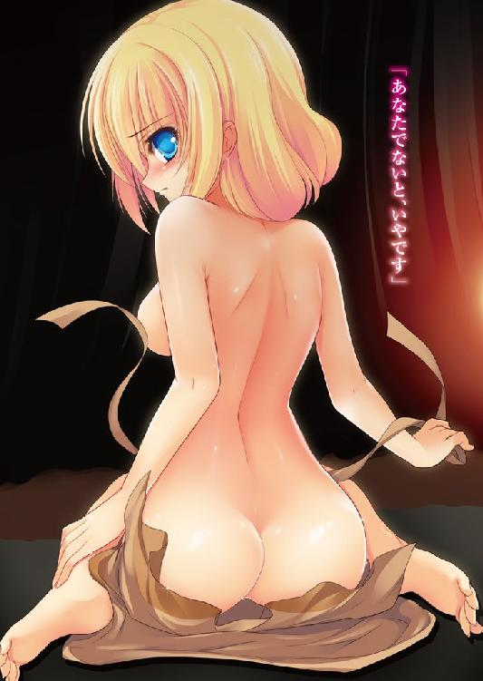
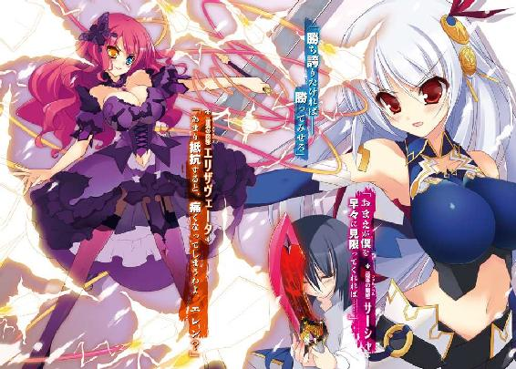
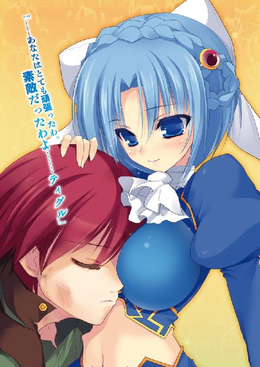
ＭＦ文庫Ｊ
魔弾の王と戦姫４
川口士
口絵・本文イラスト●よし☆ヲ
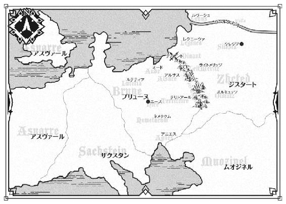
１ 一時の別れ
ヴォージュ山脈は、ブリューヌ王国とジスタート王国の国境沿いにある険しい山の連なりだ。わざわざこの山を越えて両国を行き来しようとする者は少数であり、したがって山道は多くなく、整備もろくにされていない。
だが、いまその狭い山道を黙然と進む、騎馬の一団があった。
数はおよそ二千。冬の冷たい風に激しくはためいているのは黒竜旗――ジスタート王国の軍旗である。先頭に立って馬を進めているのは、驚くことに若い娘だった。
年齢は十六、七といったところか。腰まで届く白銀の髪と、紅玉を思わせる双眸を持つ美しい娘だ。その面立ちは可憐さよりも凛々しさを、見る者に印象づけるだろう。
彼女の名はエレオノーラ＝ヴィルターリア。ジスタート王国に七人しかいない戦姫のひとりだ。親しい者にはエレンと愛称で呼ばせているが、いま彼女が率いている者たちの中に、そう呼ぶ者は誰もいない。
張りつめた空気を漂わせて、白銀の髪の戦姫は手綱を握っていた。
「――エレオノーラ様」
彼女に続く馬と甲冑の群れの中から、ひとりの騎士が進みでる。エレンの隣に馬を並べた。エレンよりも二つか三つばかり年上の女性だ。艶のない金色の髪を頭の左側で結んで流し、瞳は青。硬質の美貌には、しかし愛想のかけらもない。
彼女の名はリムアリーシャ。この軍の副官であり、エレンの右腕といってよい存在だ。
「どうした、リム」
信頼する副官を横目で見て、エレンは厳しい表情はそのままに、彼女を愛称で呼んで尋ねた。リムは一礼すると、無表情のまま口を開く。
「そろそろ休息をとる頃合いかと。風のために、兵と馬がかなり疲労しています」
山道を吹き抜ける風は強く、冷気をはらんで凍えそうなほどである。兵たちは甲冑の上から毛布を巻きつけたり毛皮の防寒具を着込んだりしているが、耳まで真っ赤にして鼻をすすっている者が少なくなかった。
この集団の中でただひとりエレンだけが、防寒着を着込むようなことをせず、絹服の上に軍衣を颯爽と羽織っている。彼女が平気でいられるのは、腰に帯びている長剣――戦姫のみに与えられる竜具がエレンを寒さから守っているためだった。
「半刻ほど休息をとったとして、日が沈むまでにこの山道を抜けられそうか？」
「可能です」
考える素振りも見せず、短く即答したリムに、エレンはようやく表情を緩めて苦笑を浮かべる。彼女はそこまで計算してから進言しに来たのだ。
「わかった。穴を掘って、その中で火を熾すよう命じよ。酒もわずかなら許す」
そうしなければ、火を熾してもこの風ですぐ消えてしまう。
リムが兵たちのもとへ去っていくと、エレンはぼんやりとした顔で空を見上げた。太陽の姿はなく、灰色の雲がどこまでも広がって漠然とした不安に襲われる。
――この山道を抜ければジスタート王国......我がライトメリッツだ。
しかし、エレンの目的地はそこではない。ライトメリッツの北にあり、彼女の親友ともいえる戦姫アレクサンドラ――サーシャの治めるレグニーツァだ。
つい先日まで、エレンはブリューヌ王国のテリトアールと呼ばれる地にいた。ティグルヴルムド＝ヴォルン――ティグルに協力するために。
それが彼とわかれてヴォージュ山脈を越えようとしているのは、サーシャが危機的な状況にあると聞かされたためだった。エレンとサーシャはかつて、おたがいの身に危機が降りかかったときはかならず駆けつけるという誓いをかわしていた。
たったいままでエレンの胸中にはサーシャのことしかなく、他のことを考える余裕などなかったのだが、休息による気の緩みが、ふとティグルのことを思いださせた。馬首を巡らせて西の空――ブリューヌの方角に視線を向ける。
「......ティグル」
意識せず彼の名をつぶやき、次いで自分の発した言葉を自覚してエレンは頭を振った。
だいじょうぶだと自身に言い聞かせる。
ティグルのもとには一千の騎兵を残してきたし、名だたる黒騎士ロランも協力を表明してくれた。ティグルの敵手であるテナルディエ公爵も、すぐには何かを仕掛けてくるというわけにはいかないだろう。自分が親友を助け、戻ってくるぐらいの猶予はあるはずだ。
――エレンは知らない。ロランが謀殺されたことを。また、ムオジネル軍が南東の国境を突破してブリューヌ国内に足を踏み入れたことを。
知るはずがなかった。彼女がブリューヌを離れつつあるいま、それは起こっていたのだから。エレンは戦士としても軍の指揮官としても、また公国の統治者としても優れた力量を持っていたが、全能ではなかった。
エレンはそっと目を伏せると、心の中で戦神トリグラフにティグルの無事を祈った。ジスタートとブリューヌとでは、信仰されている神々はほとんど同じだ。
無事を祈るならば他にもっとふさわしい神がいそうなものだが、エレンにとってはトリグラフがもっとも馴染み深い存在だった。
紅の瞳の先、空は依然として灰白色の雲に包まれ、一筋の光も地上には届かない。
それはまるで、ブリューヌという国の現状であるかのようだった。
◎
フェリックス＝アーロン＝テナルディエ公爵がムオジネル軍侵攻の報告を受けたのは、王都から己の屋敷へと帰ってきた日のことだった。
「......厄介なものが現れたな」
豪奢な調度品に囲まれた自室で、彼は音高く舌打ちをする。報告に訪れた従僕はその音に敏感に反応し、ただちに平伏した。主の機嫌が悪いときに怒りを買わない方法は、服従の姿勢をとりつつも主の視界に入らないことだと心得ている。
「地図を用意せよ」
厳つい顔を憤怒でより険しいものにして、テナルディエは命じた。現在四十二歳。いまでも鍛錬を怠らない巨躯は絹服の上からでもわかるほどにたくましく、全身から発せられる怒気は気の弱い者なら泣きだしかねないほどに凄まじい。
従僕が慌てて退出したあと、テナルディエは床に敷かれた絨毯の細かな刺繍に視線を落として、静かに考えにふけった。そのときにはすでに、彼は冷静さを取り戻している。
「先だってはザクスタンが攻めてきた。今度はムオジネルというわけか......」
ただし、規模はまったく違う。
ザクスタンが三千の兵を様子見ていどに差し向けてきたのに対し、ムオジネルは二万の兵で南東の国境を越えてきたのだ。
とんだ計算違いである。
テナルディエはもともと、国内の混乱を長引かせるつもりはなかった。
政敵であるガヌロン公爵をすみやかに排除し、国王の姪である妻を通じて重要な役職を己の息のかかった者で占める。
その後、王家の血を引く者として息子のザイアンを玉座につけるか、あるいは王家に近しい血を持つ娘を息子にあてがい、二人の間に生まれた子を王に据える予定だったのだ。
――それが、ティグルヴルムド＝ヴォルンとやらいう小僧のためにすべてだいなしだ。
ティグルヴルムド＝ヴォルンはジスタート軍を国内に招きいれ、ザイアンはその男と戦って命を落とした。テナルディエは暗殺者を放ったが失敗し、戦姫リュドミラも、戦姫エレオノーラを止められなかった。
さらに、西方国境の守りの要である黒騎士ロランまで失った。ロランは自分に強い反感を抱いていたが、テナルディエは彼の性格をよく知っていた。国王という手札がこちらにある限り、王国最強の黒騎士は決して自分に手出しをしないことを。
テナルディエにとってロランはおおいに使い勝手のいい、そして替えのきかない駒だったのだ。彼亡きあとの西方国境は、これまでよりも不安定なものとなるだろう。
再び苛立ちがこみあげ、知らず顔が険しくなる。ちょうど地図を持って戻ってきた従僕が主の形相に気づいてびくりと身体を震わせ、その場に立ちすくんだ。
「――どうした。何を突っ立っている」
臓腑をつかまれるような低い声にせかされ、従僕は慌てて黒檀の大きな机に地図を広げると、部屋の隅に控える。テナルディエはもはや彼に一切の関心をはらわず、冷たく鋭い視線で地図を見つめた。
――やつらの狙いは何だ？
ムオジネル王国は、諸国の中でも対応の難しい相手として認識されている。
彼らは、他の国にはない理由で兵を起こすことがあるからだ。数年前、ムオジネル軍五千が突然南東の国境を越えてきたことがあったのだが、その理由はこうだった。
「奴隷が必要になったので、手に入れにきた」
当然、ブリューヌは迎撃のための兵をそろえつつ、使者を派遣して抗議したのだが、彼らは傲然と次のような返事をよこしたのだ。
「貴君らも、火を得るための薪が足りなくなれば森へ入るであろう」
ムオジネルはブリューヌ王国に接している国々の中で奴隷制度を持つ唯一の国である。奴隷を獲得するための戦争は、ムオジネルにとって当然のことなのだ。
彼らは過去、国境を越えてブリューヌやジスタートに攻めこんでは村や町を襲い、金品を奪い、人間をさらって引きあげるというようなことを何度も行ってきた。船団を仕立てて海を渡り、ザクスタンやアスヴァールへ攻めこんだこともある。
ちなみに諸国が奴隷制度そのものを非難したことはない。どの国も、奴隷制度を取り入れこそしないものの利用はしているからだ。たとえば、戦で捕虜にした者から身代金を取れない場合、奴隷として売り飛ばすといったふうに。
また、ムオジネルの紙や絨毯は質のよいものが多く、紅茶など諸国にはない品もある。多少不都合があっても、つきあわないわけにはいかない相手でもあった。
「ムオジネルの狙いが奴隷を得ることならば、これまでがそうだったように国境付近を荒らして引きあげるだろうが......」
二万という数からして、奴隷だけが目的とは思えない。領土や都市、城砦などを狙っている可能性は高い。最悪なのは王都に向かって進軍してくることだ。
「忌々しいが......ガヌロンと組まねばならぬか」
つぶやいたとき、テナルディエは己の戦略を組みたてていた。
まず、宰相のボードワンを通して、南東に配属されている騎士団をことごとく王都まで後退させる。テナルディエは己の兵を二分し、一つは王都近くで待機。もう一つは彼自身が率いて南部へと向かうのだ。
「ムオジネルは船団を組織して、南の海からも攻めてくるはずだ。これを叩かねば片手落ちになる」
それに、王国南部を治めている貴族たちは大半がテナルディエに従っている。盟主として彼らを守ってやる必要があった。
ムオジネル軍がいる南東の国境付近は、見捨てる。テナルディエはそうした冷徹な判断を即座に下せる男だった。
「王都を守りつつ、敵の動きをさぐる。ムオジネル軍が東や南へ向かうのであれば、その側面や背後を突く。まっすぐ王都へ向かってくるのならば、その手前で待ちかまえる。そうして、長駆遠征して疲労し、補給線も伸びきっている敵を叩く」
気になるのは、国内にいる第三勢力だ。
息子の仇であるティグルヴルムド＝ヴォルンが率いている、ブリューヌとジスタートの混成軍。『銀の流星軍』という名前があるのだが、テナルディエは知らない。
――やつらは五千足らずと聞く。ロラン率いるナヴァール騎士団と戦って疲弊もしているはずだ。二万のムオジネル軍と戦うことはすまい。東へ逃げるか、ジスタートとの国境付近で様子を見るか、というところだろう。
「叛逆者という己の立場をわかっていれば、助けを求めてくることはないだろうが......」
もし助けを求めてきたら、ムオジネル軍との戦で先頭に立たせてすり潰す。それでも生きていた場合は逃げられないように拘束し、テナルディエ自身の手で首をはねる。
そこまで考えて、彼らに対してはこれでよしとテナルディエは判断した。
「幸い、兵はすぐに動かせる」
王都を発つ前に、テナルディエは自領や近隣の貴族に対して兵を集めるように命じていた。本来はガヌロン公爵を討つためのものだったが、こうなってはやむをえない。
その後、テナルディエはガヌロンへの手紙をしたためた。ムオジネル軍を撃退するための協力を呼びかけたもので、馬の得意な者にそれを持たせて使者として送りだす。
「さて......ガヌロンめはどう出るかな」
数日後。テナルディエの領土であるネメタクムには二十人近い貴族と、彼らに率いられた二万を超える兵がそろっていた。
空は青く澄みきって、太陽は白くぼんやりとした姿で弱々しい陽射しを地上に投げかけている。冬のただ中とあって、兵たちはいずれも甲冑の上に毛皮をまとうか、厚手のマントを羽織っており、彼らの吐く息のために、一帯は白い靄に包まれているかのようだ。
テナルディエはこの二万の兵を二つにわけ、自身は七千ほどを率いて南へ向かう。
王都へ向かう一万三千の兵は、彼の信頼するスティードという男に任せた。派手さよりも確実さを求める男で、敗北の少ない歴戦の将だ。武芸にも兵の指揮にも長け、テナルディエ個人に対する忠誠心も高い。
「よいか。無用な戦は避け、私が合流するまでもたせろ。それと――もしガヌロンと戦うことになったら、後退してもかまわん。被害をおさえることを第一に考えろ」
「かしこまりました、公爵閣下」
スティードは今年で三十三歳。短い金髪の下には産毛のような髭を生やした青白い顔がある。中肉中背の身を鉄色の甲冑で鎧っていた。蝋で固めたような無表情からは、大軍を率いる緊張や動揺はうかがえない。
「理想は、ガヌロンの兵とムオジネル軍がぶつかりあってどちらも消耗したところを順に潰すことだ。そう都合よくことが運びはせぬだろうが、頭の片隅には入れておけ」
今後、事態がどのように動くのかはテナルディエでも容易に見通せない。
そのときの状況に応じて的確な判断を下し、一万以上の兵を指揮する。そんなことができるのはスティードしかおらず、だからこそテナルディエは彼に兵を任せたのだ。
「公爵閣下。ガヌロン公がムオジネル軍を国内に招き入れたという可能性はあるでしょうか。それならば、ロラン殿の件もわかるのですが」
スティードの疑問を、テナルディエは悠然と首を振って否定する。ここは余裕のある態度を見せて、兵たちを落ち着かせる場面でもあった。
「それはない。もしそうならば、ムオジネル軍はそのことを声高に叫びつつ、一刻も早くガヌロンと合流しようとするはずだ。ガヌロンも、大声で触れまわるだろう」
ガヌロンほどの大貴族が他国の軍と手を組んだとすれば、そのことがもたらす衝撃はティグルヴルムド＝ヴォルンとジスタート軍の比ではない。
王都はその機能の大半を麻痺させ、貴族諸侯も右往左往するだろう。テナルディエに味方している貴族の中からも、ガヌロンへと寝返りを試みる者が現れるに違いない。ガヌロンにとってもムオジネル軍にとっても隠す理由はないはずだ。
「ゆえに、おぬしの心配は杞憂だ。だが、ガヌロンのこと。必ず、この状況を利用しようと姑息な動きを見せるだろう。決して警戒を怠ってはならぬ」
「必ずや、閣下のお心に沿う働きを」
その場に膝をつくスティードに、テナルディエは鷹揚にうなずいた。
そうしてネメタクムを発った数日後、テナルディエは一つの知らせを受けとった。
「――ほう。ガヌロンが兵を動かしたか」
テナルディエが先日送った手紙には、返事がない。にもかかわらず兵を動かしたということは、ガヌロンには自分と協力するつもりはないらしい。
「ガヌロンめ。ロランを殺したときにもしやと思ったが......」
テナルディエの脳裏に、ブリューヌと周辺諸国を描いた地図が浮かびあがる。
――あやつ、ザクスタンかムオジネルのどちらかが攻めてくるのを待っていたのか？
北西で国境が接しているアスヴァール王国とガヌロンは交流があったはずだから、休戦条約を結ぶのは困難であっても不可能ではない。
ザクスタンやムオジネルが兵を差し向けてきた場合、治めている領土の位置関係上、ガヌロンよりもテナルディエが先に敵を迎え撃つことになる。
「まあよい。いまはムオジネルの餓狼どもを叩き出すのが先だ」
つぶやいたテナルディエの口元には、獰猛な肉食獣を思わせる笑みが浮かんでいた。
主がいなくなったテナルディエ公爵の屋敷。その奥にある闇に包まれた一室に、老人はいた。小柄な身体を黒いローブに包み、明かりのない中で何かをじっと見つめている。
それは、屍骸だった。
粉々に砕け、あるいは引きちぎられた大型の獣の肉であり、骨であり、臓腑。泥にまみれ、腐りかけたそれはすさまじい異臭を放っている。
だが、老人は部屋全体に染みつきそうなほどのその悪臭にまるで頓着せず、てきとうに積みあげられて小さな山となっているそれを観察していた。
それが竜――飛竜の屍骸であることは、老人と、屍骸を引きあげた者しか知らない。
老人の名はドレカヴァク。公爵家に長らく占い師として仕え、重用されている。
「やはり......違う」
ややあって、ドレカヴァクが呟いた。屍骸の中へ無造作に手をつっこみ、一塊の骨肉をつかみとる。
「風の力がないわけではない。だが、それだけではない」
皺だらけの顔に、予想が当たったことを喜ぶかのような不気味な笑みがひらめいた。小さな目を金色に光らせて、ドレカヴァクは部屋の片隅に視線を向ける。
「おまえにもう一働きしてもらうことになるかな、ヴォジャノーイ」
「――またかい？」
老人の視線の先で、闇が声を発して揺らめいた。
明るい笑みを浮かべた一人の若者が、壁に背中をあずけて床に座りこんでいる。中肉中背で、襟や袖に毛皮をあしらった厚手の服をまとい、短い黒髪には緑色の布を大雑把に巻きつけていた。手に持っている金貨を、まるで菓子であるかのようにかじっている。
「年寄りが楽をして、若者ばかりあちこち走りまわるというのはよくないと思うよ」
「わしは、まもなく届くだろう竜どもの世話をしなければならん。なんなら代わるか？」
「仕方がないなあ。それで、何をやるんだい」
ヴォジャノーイと呼ばれた若者は、金貨を指先で空中に弾きながら立ちあがった。きれいな放物線を描いて落ちてきたそれを口で受けとめ、そのまま呑みこむ。
「――『弓』の使い手が現れた」
空気を凍らせるようなドレカヴァクの声音に、ヴォジャノーイの顔から笑みが消えた。驚きに目を丸く見開いて、若者は老人を凝視する。
しばらくして、ヴォジャノーイは目をさきほどまでのように細め、笑みを回復させた。
「どうするんだい？ 殺すの？」
「あれは戦姫などと違い、絶えず世に現れる者ではない。殺すには、貴重すぎる。捕獲が望ましいが......さしあたっては、何者かということが正確にわかればよい」
老人が言い終えたときには、ヴォジャノーイの身体はすでに闇に溶けこんでいる。ほどなく、彼の姿は消えた。闇を見つめて、満足そうにドレカヴァクはうなずく。
「さて、わしも行くとしようか。最後には誰が立っているのやら......」
どこか楽しげに聞こえる口調でつぶやくと、老人は竜の死骸に背を向けて扉へと歩きだしたのだった。
◎
冬の冷気は大地から熱を奪い、早朝の草原にうっすらと霜を張りつかせる。兵士たちはむしろ、その寒さのために目を覚ますといっていい。支給された毛布に身をくるみながら手や足を擦りあわせ、吐く息の白さに身震いする。
できればこのまま毛布にくるまって何もせずに過ごしたいが、そういうわけにもいかない。冷たい水で顔を洗って目を覚まし、幕舎を出て篝火まで歩いていって暖をとる。
ほどなく一人二人と集まってきてぼそぼそと挨拶をかわしながら同じように火に手をかざす。集団の熱気もあって、ようやく身体が動くようになる。
「早く替わってくれよ」
見張りに立っている兵から、眠そうな声で急かされる。今度は彼らが休む番だ。篝火に手をかざしていた者たちは名残惜しそうに離れていき、幕舎に戻って甲冑と武器を身につける。気を引き締めたところで、やっと交替だ。
ブリューヌ東部のテリトアール。その西端でおよそ二千の兵が陣地を構築し、野営をしていた。二重の柵で囲まれ、数百の幕舎が設営されたその中央には、ブリューヌ王国の軍旗である紅馬旗と、ジスタート王国の軍旗である黒竜旗とが風になびいている。
『銀の流星軍』と名のる、ブリューヌ兵とジスタート兵の混成軍だ。
率いているのは若干十六歳の若者で、名をティグルヴルムド＝ヴォルンという。親しい者にはティグルと呼ばせていた。
ブリューヌ王国の一地方であるアルサスを治める伯爵だったが、ジスタート王国の戦姫であるエレンとの出会いが彼の人生を大きく変えた。
生まれ育ったアルサスを守るため、故郷の平和を脅かすテナルディエ公爵を倒すためにティグルはエレンの協力を得て、いくつもの戦いを切り抜けてきたのだ。
アルサスを襲ったテナルディエ公爵家のザイアンを討ち取り、エレンの行動の自由を得るために戦姫リュドミラと戦い、叛逆者の汚名を着せられたティグルを討つべく現れた黒騎士ロランとナヴァール騎士団を撃退した。
テナルディエ公爵の治めるネメタクムまではあと数日の距離に迫り、ロランの協力をも得た矢先のことだ。
ロランが王都で死んだという知らせを受け、その衝撃も覚めないうちにムオジネル軍二万が南東の国境を突破したという報告がもたらされた。
いまティグルは、総指揮官用の幕舎の中にひとりで座っている。彼のまわりには十数枚の地図が散らばっていた。
――どうする......？
くすんだ赤い髪を乱暴にかきまわし、地図を睨みつけてティグルは唸る。昨日から一睡もしておらず、顔色は悪く、憔悴しきっていた。
考え続けていたのだ。侵攻してきたムオジネル軍に対してどう動くべきかを。
――こちらは二千。向こうは二万。戦いになるはずがない。せめて、エレンやリムがいてくれたら......。
溜息をついて埒もないことを考える。エレンもリムも優れた将だ。戦うにせよ、戦いを避けるにせよ、ティグルの思いつかないような適切な助言をしてくれたに違いない。
他に、頼りになる人物がいないわけではない。
父の親友であり、何かと世話になっているマスハス＝ローダント。ティグルに快く協力してくれているユーグ＝オージェ。いずれも経験豊かな古強者だ。
しかし、ティグルはこの件について、あえて彼らに相談せずにいる。
――最善の手はテリトアールの守備を固めつつ、民をアルサスやオードなど北へ避難させ、騎士団や諸侯の救援を待つといったところだろう。
何よりも、己の領土の平和を優先して考えるのが領主の務めである。ティグルはアルサスを、マスハスは北のオードを、オージェはテリトアールをこそ、まず守らなければならないのだ。
――だから、お二人には相談できない。
南東部を見捨てようと、マスハスらに言わせることになる。
そうしたところで責める者はいないだろう。そもそもティグルたちには責任のないことなのだ。国王の命令がないかぎり、領土の外を守るために自分たちが動く理由はない。
だが、その王が命令を発することができないのをティグルは知っている。そして、危機を知りながら見ぬふりをすることは、後味のよいものではない。
ふとティグルは首を巡らせて、地面に横たえてある一振りの剣に視線を向けた。柄と鍔に、黄金で華麗な装飾をほどこした大剣。
デュランダル。『不敗の剣』とも呼ばれる、ブリューヌ王国の宝剣だ。黒騎士ロランが国王より授かったものだが、ティグルを認めた証として預けていったのだ。そのまま帰らぬことになるとは、誰一人想像していなかったが。
ロランとの会話を、ティグルは思いだす。
エレン率いるジスタート軍が侵略者へと変貌を遂げたとき、どうするのかと問うたロランに、ティグルは答えた。ブリューヌの民を守るために戦うと。
――俺は、思いあがっているんだろうか。
ティグルは勇者でも英雄でもない、辺境の小さな領土を治める一貴族だ。
テナルディエ公爵と戦うことでさえ手に余るのに、いま自分の考えていることは――。
「――入ってよろしいですか、ティグル様」
幕舎の外から聞き慣れた少女の声がして、ティグルは怪訝そうな顔になる。自分に仕えている侍女のティッタだ。
「ティッタか？ こんな時間に......」
そこまで言いかけて、ティグルはとうに夜が明けていたことに気がついた。幕舎の外からは兵たちのざわめきも聞こえる。
そばに置いてあるランプに目をやると、まだ灯りはついているものの、充分に入れたはずの油はほとんどなくなってしまっていた。よほど悩み、考えこんでいたらしい。
「入っていいぞ。どうした？」
外に向かって優しく呼びかけると、帷幕が外からめくられて冬の陽光が射しこむ。
栗色の髪をツインテールにした少女が静かな足取りで中へ入ってきた。黒い長袖と足元まであるスカートに身を包み、その上に白いエプロンをつけている。陶製の器を、慎重な手つきで持っていた。
「ティグル様、おはようございます」
栗色の髪を揺らしてぺこりと頭を下げたティッタは、しかし、ティグルの顔を見るなりたちまち明るい笑顔を曇らせる。
「......昨晩はお休みになられてませんね？」
ティグルはとっさに言い訳の台詞を考えたが、結局ばつの悪い顔をするだけに留めた。ティッタは小さなころからそばにいる。何を言っても見破られてしまうだろう。
「いろいろと忙しかったんだ。まあ、こういう日もあるさ」
ティッタは上目遣いでとがめるような視線を向けてきたが、諦めたようにそっと目を伏せた。ゆっくりとした足取りでティグルのそばまで来ると、両手で大事そうに持っていた器を差し出す。
中身は、熱く湯気を立ち昇らせたスープだった。薄切りの燻製肉に、大雑把に切ったキャベツやニンジンなどが浮かんでおり、香ばしい匂いがティグルの鼻をつく。せかすようにティグルの腹が鳴り、ティッタはくすりと笑った。
「まずはこれで、お身体をあたためてください。すぐに他のものもお持ちします」
「ありがとう」
毛布に身をくるんでいてもこの寒さはこたえていた。ティグルは顔をほころばせて器を受け取り、口をつける。スープを飲みながら木匙を使って野菜をかきこんだ。からっぽだった胃袋が歓喜の声をあげるかのごとく活動をはじめる。
「お行儀悪いですよ、ティグル様」
ティッタはしかつめらしい顔をつくったが、溺愛する子供を叱る甘い母親のようでまったく迫力がない。ティグルはといえば、スープの熱さと塩味を身体中で堪能しており、頬を赤くして鼻をすすりながら生返事をするだけだ。
そんなティグルの様子を見て、むしろ食欲があることをティッタは喜んだようだった。安心したような微笑を浮かべて一旦幕舎を出る。すぐに戻ってきた。小さな籠を腕に提げており、ティグルのそばに腰を下ろすと、籠をそっと地面に置く。
籠の中にはパンとチーズ、薄切りにした燻製肉とまるごと茹でたジャガイモが詰められていた。それらの上に載っていた青銅製の杯を手にとって、ティッタは葡萄酒を注ぐ。そのときにはもうティグルはスープの器を空にしていた。
食欲に突き動かされてパンとチーズを交互に口へ運び、葡萄酒を胃袋に流しこみ、まだ熱を帯びているジャガイモをかじって、ほくほくとした食感を味わう。
一通り食べ終えると、ティグルはようやく満足げな息を吐いた。
「ごちそうさま。うまかったよ」
「その前に、お口を拭いてください」
口振りだけはとがめながらも、優しげな苦笑を浮かべてティッタは指を伸ばし、ティグルの口元についていたジャガイモのかけらを拭い取る。
ティッタは指先をじっと見つめてどうしようか一瞬悩んだが、おもいきって舐めた。かと思うと、すぐに顔を真っ赤にしてうつむいてしまう。
「おまえも行儀が悪いな......。いや、なんだ。拭いてくれてありがとう」
栗色の髪の侍女の反応に微笑ましさと若干の恥ずかしさを覚えながらも、ティグルは礼を言った。彼女がそばにいると、故郷のアルサスにいるような安心感がある。
はい、と消え入りそうな声でうなずいて、ティッタは器と籠を重ねるとそそくさと幕舎を出ようとした。
「――ティッタ」
背を向けた彼女を、とっさにティグルは呼びとめる。ティッタは若干の気まずさを含んだ不思議そうな顔をして振り返ったが、主の真剣な表情に気づき、緊迫した空気を感じとってすぐに意識を切り替えた。居住まいを正す。
ティグルはどう話を切りだすべきか迷い、お互いにそのままの姿勢で五つ数えるほどの時間が過ぎた。
「ティッタ。またしばらく、別行動になる。おまえはマスハス卿といっしょにいてくれ」
「......どういうことですか？」
その宣告は予想の範疇だったにもかかわらず、ティッタの声は震えた。
「あたしは、ティグル様のお世話をするためについてきたんです。それなのに......」
「危険なんだ。余裕もない」
「それでも......」
なおもティッタは言い募ろうとしたが、ティグルの黒い瞳に見据えられて口をつぐむ。視線を靴の上に落としてしばらく黙りこんだ。ティグルは一言も発さず、身じろぎ一つせずに妹のような侍女の反応を待つ。
やがて、ティッタはぽつりと訊いた。
「ご無事で、戻ってきていただけますか？」
「約束する」
強さを感じさせる静かな声で、ティグルは答えた。ティッタは顔を上げ、いまにも泣きそうだった顔を無理に歪めて笑みを作ろうとする。ティグルは彼女にあたたかな笑みを見せて立ち上がり、そっとティッタを抱きしめた。もう一度言った。
「約束する。絶対に無事で帰ってくる。遅くとも――春までには」
お待ちしております、と涙声でティッタは呟く。それに答えるように、また安心させるようにティグルは彼女の背中を軽く叩いた。
ティッタが幕舎から歩き去ったあと、ティグルもまた弓をつかんで幕舎を出た。
兵たちは交替での朝食をほぼ終えたころで、残り火に手をかざしている者もいれば、武具の手入れをしている者、賭けごとに興じている者もいるといった具合だ。敬礼をしてくる彼らに軽く手を振って応えながら、ティグルはマスハスとオージェのところへ向かう。
「起きられましたか、ティグルヴルムド卿」
若い騎士が大股で駆け寄ってきた。整った顔だちは凛々しいものの、頭部には一本の髪もない。だが、彼はそのことを恥じるどころか誇っているふうさえある。
「おはよう、ルーリック。いまからマスハス卿のところへ行くんだが、来るか？」
騎士――ルーリックは即座にうなずいた。
「ごいっしょしましょう。ところで、さきほどティッタ殿が泣いているのを見かけたのですが......」
ティグルは苦虫を噛み潰したような表情をつくって髪を乱暴にかく。心が重い。
「それに関係したことだ。ジスタート兵は......二万の敵と戦えといわれたらどうする？」
その問いかけに、ルーリックはすべてを理解したようだった。双眸が輝きを増し、不敵な笑みが浮かぶ。
「勝算はおありですか？」
「わからない」
「そこはせめてあると仰ってくださらないと。私も兵を説得できなくなります」
たちまち気の抜けた顔になってルーリックは肩をすくめた。長身を包む甲冑ががしゃりと鳴る。ティグルも口元を歪めて応じた。
「こっちは二千。向こうは二万。これで勝算があるといって、誰が信じる」
「ひとは実現性が高いから信じるのではなく、信じたいから信じるのですよ」
そんな会話をかわしている内に、目的の幕舎に着いた。見張りの兵に確認してから、ティグルとルーリックは幕舎の中へ入る。
二人は同時に言葉を失った。
幕舎の中には二人の老人が背中を丸めて座りこんでいたのだが、彼らのまわりには何枚もの地図と模擬戦に使う駒が散乱していたのだ。傍らには眠気覚ましなどに使ったのだろう水を張った桶が置かれている。
「......おう、ティグルか」
ずんぐりとした身体を揺らしながら、灰色の髪と髭が印象的な老人――マスハスが鈍い声をあげた。髪も髭もひどく乱れており、目の下には濃い隈が浮き出ている。
こちらを振り返った痩せ気味の老人――オージェも似たようなもので、ゆったりとした服の着崩れを気にしている様子もない。
二人の老人も、突如訪れた危機に対してティグル同様一睡もせずに知恵を絞り、思案をめぐらせていたのだ。
「話があるのですが......お二人ともだいじょうぶですか？」
おそるおそるティグルが尋ねると、二人の老人は異口同音にちょっと待て、と答えた。
それぞれ桶に勢いよく頭を突っこんだかと思うと、唸り声を発し、水の飛沫をまきちらして引きあげる。手にしていた厚手の布で水を滴らせる顔を拭い、鬼気迫る顔でティグルらを見上げた。
「うむ、聞こう」
これにはティグルだけでなくルーリックもたじろいだが、まさか何も話さず退散するわけにもいかない。腹に力を入れてマスハスたちの前まで歩いていき、腰を下ろす。
「俺は――従ってくれる兵たちを率いて南東へ向かいます」
一気に言い切って、ティグルはマスハスとオージェを見据えた。二人の老貴族は視線をかわし、マスハスがむっつりとした顔で口を開く。
「......おぬしなら、そう言うだろうと思っておったよ」
呆れた表情と声音の中に、隠しきれない親愛の情があった。
「まずは理由から聞こうか」
「生き延びるため、守るべき者を守るためです」
「それならば、このテリトアールで守りを固めるべきではないか？」
謹厳な表情で言ったのはオージェだ。普段の好々爺然とした笑みは、そこにはない。
そうだろうとティグルも思う。自分もそう考えたのだ。自分の知らない遠くの民まで守りたいなどというのは、綺麗事を通り過ぎて戯言でしかないと。
「守りを固めて......もしも二万の軍勢が迫ったら、持ちこたえられるでしょうか」
「時間を稼ぐのだ。騎士団や、他の貴族の兵が現れるまで。それに、ムオジネル軍がこちらではなく、たとえばネメタクムなどへ向かう可能性は充分ある」
「援軍が到着する前に俺たちが敗れる可能性も、充分にあります」
もっと恐ろしい事態をティグルは考えたが、それはさすがに口に出せなかった。
「あるいは、援軍が我々のところへは来ない可能性も、か」
マスハスの呟きに、ティグルは驚きの眼差しを彼に向ける。まさしくティグルが恐れたことだったからだ。オージェもまた、手元の駒をもてあそびながら皮肉っぽく笑った。
「テナルディエめのおかげで、わしらはいまや叛逆者の片割れじゃ。見殺しにしたところで、まず咎められはせんじゃろう。それに、やつらにしてみれば、ムオジネル軍がわしらを殲滅することで多少なりとも疲弊してくれればありがたいからの」
「そこまでお考えでしたか」
恐縮するしかない。自分が思いつくようなことは、二人はとうに考えていたのだ。
「考えることはできる。重要なのは、その後の判断や行動じゃて」
マスハスはティグルの肩にぽんと手を置いた。
「おまえがそこまで考えた上で、民を守ると言ってくれたのは嬉しい。だが――」
できるのか、という言葉を発する前に、ティグルは笑みを見せて力強くうなずいた。
「そこで、お二人に頼みたいことがあります」
ティグルがブリューヌ兵たちを集めたのは、その日の昼過ぎだ。
弱々しい陽射しを投げかける白くぼやけた太陽の下、左右にマスハスとオージェを控えさせたティグルは、ムオジネル軍が南東の国境を突破したことを兵たちに告げた。
兵たちの間に驚愕と動揺がおそろしい速さで広がっていくのを見ながら、内心の緊張をわずかでも悟られないよう平静を装って、ティグルは続ける。
「敵の数は二万。こちらはおまえたちも知る通り二千だ。ブリューヌ国内といえど、遠くの地。おまえたちには関係ないように聞こえるかもしれない。だが......放っておけば、敵は遠からず押し寄せてくるだろう。おまえたちの住む村や町にまで」
兵たちの顔色が深刻なものになり、小さなざわめきがあちこちからあがった。恐怖をはじめとしたいくつもの感情が、彼らの間で踊り狂っている。
「勝つための策はあるが、おまえたちが怖気づかず、全力で戦えなければ活かせない」
策などない。兵たちに偽りの希望を持たせることにティグルは臓腑がきしむような罪悪感を覚えずにはいられなかったが、なにしろ他に手段がないのだ。兵たちが絶望に沈んで動けなくなってしまったら、戦う前に終わってしまう。
最後に、ティグルはだめ押しとして用意していた言葉を彼らにぶつけた。
「ジスタート兵は一人残らず戦うと言っている。――おまえたちは、どうする？」
その瞬間だった。恐怖と戦慄によってくすぶっていたブリューヌ兵たちの戦意に、対抗意識という火がついたのは。
俺たちの住む家は俺たちが守ると兵の一人が気炎をあげる。それにつられるように他の兵たちも腕を振り上げ、あるいは獣じみた咆哮をあげて戦う意志を示した。ティグルだけでなく、後ろに控えていたマスハスやオージェがおもわず拳を握りしめたほどだ。
――予想以上の反応だ......。
感嘆の思いで、ティグルはブリューヌ兵たちを見つめていた。
若干打ち解けてきたとはいえ『銀の流星軍』特有といってよいブリューヌ人とジスタート人の対立意識は根強く存在しており、ティグルにとって悩みの種だったが、いま、その対立意識は燃えさかる戦意となって彼らの恐怖を塗り潰していた。
ちなみに、ジスタート兵については演説を行う前にルーリックに確認してある。禿頭の騎士は丸い頭を叩きながら次のような返事をよこした。
「絶対とはいえませんが、まあだいじょうぶでしょう」
ここにいる一千のジスタート兵は、エレンがティグルのために選び抜いた者たちだ。
彼らは彼らなりにティグルに好意を持っているし、自分たちをここに残していったエレンの信頼に応えるためにも奮戦するだろう。ルーリックもまた、彼らを説得するのに労を惜しむつもりはない。
熱を帯びたざわめきがおさまるのを待って、ティグルは大声で宣言した。
「それでは各自、指示に従ってただちに行動せよ！」
そのあとは、動ける者は一人残らず移動のための準備に追われた。数日分の食糧や燃料を兵たちに持たせ、荷台を調達して十数人分の甲冑をまとめて載せる。幕舎などは一つにつき数人がかりで運ぶようにした。
その他にも細々とした作業をすませて『銀の流星軍』が準備を終えたのは、太陽が西の果てに沈みながらも空を朱色に染めあげつつあるころだった。
ティグルとマスハス、オージェの三人は馬上で顔を合わせた。
マスハスは甲冑を着こみ、オージェも身だしなみを整えている。ティグルもまた革鎧を身につけ、腰には矢筒を提げ、家宝の黒弓を馬上に差していた。
どの顔にも疲労の色は濃いが、それを上回る闘志があふれている。
ティグルの背後には千七百余りの兵が控えていた。割合としては騎兵が八、歩兵が二というところで『銀の流星軍』の全騎兵を投入している。
ティグルとしては騎兵だけで固めたかったのだが、そうすると元々多くない兵力がさらに少なくなる上に、なによりアルサスの兵を一人も連れていけなくなる。他の兵からはティグルが自領の兵を贔屓して戦場から遠ざけたと見られるだろう。
それに、ティグルも信頼できる者たちをそばに置いておきたかった。
マスハスやオージェも、それぞれ数十から百近い兵を従えていた。こちらは負傷者や戦えない者が主で、ティグルの側仕えであるバートランやティッタもその中にいる。
バートランはついてきたがったのだが、老齢で体力に不安があることからティグルは連れていくのを断念したのだった。
「若、申し訳ありません。わしにもっと体力があれば......」
肩を落としてうなだれる側仕えの老人に、ティグルは首を振って笑いかけた。
「ティッタを頼むぞ、バートラン。おまえがティッタを守ってくれるから、俺は安心して行けるんだ」
その言葉に老人は表情と声に張りを取り戻し、お任せくだせえ、と意気込んだ。
「ティッタもな。忙しくなるだろうが、くれぐれも無理をするんじゃないぞ」
「その言葉はティグル様にそっくりお返しします。どうか......どうかご無事で」
強気に言い返したティッタだが、それもわずかのことですぐに涙ぐんでしまった。
「それでは、お二人ともあとはお願いします」
会釈するティグルに、灰色の髭をなでながらマスハスは言った。
「任せておけ。ティグルもしっかりな」
「ことがことじゃ。無理をするなとは言わぬが、しすぎてはいかんぞ」
オージェもいたわるようにそう告げる。ティグルはもう一度、感謝をこめて一礼した。
ティグルはこれからムオジネル軍のいる南東へ、マスハスとオージェは周辺の騎士団や貴族のもとに向かう。
「二千で二万の軍勢に立ち向かえるはずはありませんが、わずかでも行軍を鈍らせることならできると思います。俺たちがムオジネル軍を足止めしている間に、マスハス卿とオージェ子爵には騎士団や貴族に働きかけ、彼らを動かしてほしいのです」
これがティグルの案だった。
若干十六歳、しかも叛逆者扱いされている自分の言葉には誰も耳を傾けないだろうが、マスハスやオージェといった年齢と経験を積み重ねた者の話ならば聞くかもしれない。
ムオジネル軍の足止めに向かうのは、いくつか理由がある。
無辜の民を守るというのが最大のものではあるが、率先して動くことによって騎士団や貴族を説得しやすくするためであり、ムオジネル軍になるべく行動の自由を与えず、国境近くに封じこめるためだった。
――以前、リムに教わったことがあったな。
「ティグルヴルムド卿、よろしいですか。相手の選択肢を削ること。相手を迷わせ、判断を狂わせること。この二つを成功させることができれば、戦いを非常に有利に運べます」
まだ秋の名残が山野の木々に見られたころ、リムは愛想のない顔と声でそう言った。
「でも、相手の選択肢を削っていったら、かえって決断しやすくなるんじゃないか？」
「たとえば、三通りの行動しかとれない状況に相手を陥らせれば、こちらとしては対策をたてやすくなりますね。さらに、相手を迷わせて、その三つの中でもっとも選んではならない手を選ばせることができれば、より勝率を高めることができるというわけです」
「なるほどなあ」
素直に感心するティグルに、リムは一瞬だけ無表情をかき消し、そっと微笑を浮かべながら言葉だけは厳しく続けたものだった。
「いま申しあげたのは初歩的なものですが、それだけに疎かにしてはいけません」
こと戦略や戦術について、ティグルは父のウルスからあまり学んだ記憶がない。
他に覚えなければならないことがたくさんあったからだが、父もまだ時間があると考えていたのだろう。ティグルが十四歳でヴォルン家を継ぐことになったのは、父が病に倒れたためだった。
――ムオジネル軍を、国境付近で食い止める......！
マスハスとオージェらの部隊を見送ると、ティグルも出立を告げる。強い決意を抱いて馬を進めるティグルのすぐ後ろには、二人の若者がつき従っていた。
一人はジスタート兵一千を束ねる禿頭の騎士ルーリック。
もう一人は二十代半ば、くせのある褐色の髪と青銅色の瞳を持つ若者で、名をジェラールという。オージェ子爵の息子であり、ブリューヌ兵約七百をまとめていた。
「わしの息子をお預けする。事態が事態じゃ、好きなように使ってくだされ」
オージェがそう言ってジェラールを紹介したとき、ティグルは笑顔で頼むと告げたのだが、側に控えているルーリックはいい顔をしなかった。オージェ親子が立ち去ったあと、気に入らないという顔で不満を述べたものだ。
「たしか、あの男でしたな。グレアスト侯爵とやらの兵を撃退したとき、ティグルヴルムド卿を無視して戦姫様だけを称賛していたとかいう無礼な男は」
「......誰から聞いたんだ、その話」
ティグルは困った顔で聞いたが、候補は二人しかいない。ジェラールがエレンを褒め称えていたとき、その場には他にティグルとリムしかいなかったのだから。
「リムアリーシャ殿です。この軍を離れる際、あの男に気をつけるようにと」
「まあ、リムの嫌いそうな性格ではあるかな......。ただ、オージェ子爵が自分の息子というだけで兵を任せるとも思えない。仲良くとまでは言わないが、険悪にはならないていどにやってくれ」
ティグルとしては、オージェの息子なのであまり悪く言いたくはない。そのため、なんとも曖昧な言い方になってしまった。
そのときの会話を思いだし、ティグルは肩越しに振り返ってそっとルーリックの様子をうかがう。予想通りというべきか、剣呑な目つきでジェラールを睨みつけていた。
だいじょうぶだろうかと不安になったものの、ティグルにはいまさらどうすることもできなかった。人手も足りなければ時間も惜しいのだ。
『銀の流星軍』は先を急ぎながらも近隣の町や村にブリューヌ兵を派遣してムオジネル軍の来襲を告げ、テリトアールへの避難を呼びかけた。
また、それらの町や村を休息の場とし、周辺の地図をもらい受けたり、彼らが持っていけない食糧などから必要なものを買い上げたりもする。
そして数日後、ティグルはブリューヌ南東部のアニエス地方に足を踏みいれた。
２ 二千 対 二万
アニエス地方の半分以上は、水に乏しい不毛の大地だ。植物はほとんど育たず、大気も砂塵を含んで乾燥している。
崩れた塔を思わせる砂岩の崖や丘が幾つもそそり立ち、連なって、いびつな断崖を形成し、その隙間を荒涼とした風が吹きぬける。
ジスタート、ムオジネルの二国と国境を接しているため、ブリューヌ王国はここに城砦を築きはしたものの、積極的な開発は行わなかった。村や町も少なく、隊商を狙う野盗を恐れて城砦付近に点在しているといった具合だ。
ムオジネル軍がこの地に姿を現したのは、十数日前のことだ。
彼らは国境の城砦に殺到し、二日とかけずに攻め落とした。城砦には三千もの騎士がいたが抵抗むなしく粉砕され、その多くが斬り捨てられた。ムオジネル兵の刃から逃れ、城砦を脱出できた者は百に満たなかったという。
その後、ムオジネル軍は城砦の周辺にある村や町を次々に襲った。
ムオジネル軍は、恐ろしいほど冷徹に襲撃する。
たとえば村を襲う際、彼らは火を放ったりはしない。
数にものをいわせて怒涛のごとく攻め寄せ、柵や壁を打ち壊し、突き崩して内部へと侵入を果たすのだ。そして、住民たちを次々に捕え、金品を略奪する。
政治的な価値のある貴人でもないかぎり、住民は捕えられた瞬間から捕えた兵士の所有物――奴隷となる。それゆえに兵士たちは住人を一人でも多く捕えようとし、また、奴隷としての価値がない老人や子供は容赦なく殺す。
最後に、彼らは貯蔵されていた食糧をことごとく奪う。それがすむと家々を破壊し、その残骸を薪代わりとして奴隷に背負わせ、村をあとにする。
残るのは石造りの家と、老人や子供、抵抗して殺された者たちの死体、価値なしと見做されて放り捨てられた残骸ばかりだ。
そうして二十を超える町や村を彼らは襲い、壊し、奪い、さらって、蹂躙した。
ムオジネルの軍旗は緋色の地に、角を生やした黄金の兜と剣を描いたものだ。この兜と剣は彼らの崇める戦神ワルフラーンの象徴だという。
軍旗は他国のそれに比べて一回り以上大きく、旗竿も太い鉄の棒に金箔を塗ったものを用いている。他国の兵は遠くからでも見えるこの旗にまず驚き、次いで間近で目にして圧倒されるのが常だ。
冬の灰色がかった空の下、ムオジネル軍は戦神の軍旗をひるがえして、砂礫だらけの荒野を進んでいた。
褐色の肌をした兵たちは皆、厚地の服の上に革鎧をつけている。腰には反りのある剣を吊るし、手には弓か、自身の背丈の倍以上ある槍と楕円形の盾を持っていた。
兵士は頭部に黒い布を巻きつけ、部隊の長は鉄製の兜をかぶっている。歩兵が多く、騎兵は全体の二割ほどもいない。
二万の兵の後方には、縄で手を縛られた者たちが続く。数は二千余。
若い男女ばかりで、身体中に痣や傷痕があり、着ている服はぼろぼろだ。女性の場合は服を引き裂かれてあられもない格好になっている者が珍しくない。
彼らはムオジネル軍に捕えられ、奴隷にされた者たちだった。板切れを束ねたものを背負わされ、誰もが絶望しきった顔で、力のない足取りで、ムオジネル軍についていく。
「あれがムオジネル軍か......」
砂岩の崖に身を隠し、遠くから彼らの様子を観察している集団があった。ティグルと数人のジスタート兵だ。
ティグルは総指揮官であって軽はずみに動ける立場ではないのだが、反対するルーリックとジェラールを押し切って、今回だけという条件で偵察部隊に加わっていた。麻の服の上に革鎧をつけ、腰に矢筒を提げて手には黒弓といういつもの格好だ。
「本当に肌の色が違うんだな」
「実に素朴な感想だな、ティグルさんらしい」
ティグルの隣で同じように身を隠しながら揶揄したのは、アラムだ。粗末な作りの刷毛のような茶色の髪に、海狸を思わせる丸い顔と身体をしている。ティグルが捕虜だったころから親しくしているジスタート軍の斥候だ。
「仕方ないだろう。俺はムオジネル人を見るのははじめてなんだ」
「アルサスには来なかったのか。ムオジネル人には商人が多いって聞いたことがあるが」
「......うちに来ても商売になるとは思えないしなあ」
とぼけた返事をしながらも、ティグルは一瞬たりとも真剣さを失ってはいない。その黒い瞳は、ムオジネル軍の後方――奴隷たちに向けられていた。
――ただ敵を追い払うだけじゃ駄目だ。全員は無理でも、できるかぎり助けたい。
「ここから狙うかい？ ティグルさんなら当てられるだろう？」
冗談めいた口調でアラムにけしかけられたが、ティグルは首を横に振った。
「無理だな。ここは、風が荒れすぎている」
断崖の上から街道へと吹き降ろされる風は力強く、無原則で無軌道だ。さすがにティグルでも、足を踏みいれたばかりの土地で風の流れを完全に読むことは困難だった。
――それとも、この力を使うか......？
手に持った黒弓に視線を落とす。空高く舞う飛竜を撃ち、分厚い城門を射抜き、黒騎士ロランを退けてみせた、不可思議な力を持つ弓。
直撃させれば、総指揮官どころかその周辺の兵士すら巻きこんで、数十人以上のムオジネル兵を打ち倒せるのは間違いない。
――いや......。
ティグルは頭を振った。この弓には未知の部分が多すぎる。夜と闇と死を司る女神ティル＝ナ＝ファに関係があるらしいのも気に入らない。ティッタを人質にとったことを思うと、とうてい好意的にはなれなかった。
なにより、この弓の力を使うときはいつもエレンがそばにいた。ロランとの戦いにおいては戦姫ソフィーヤ＝オベルタスもだ。自力で弓の力を用いたのはたった一度だけで、そのときは女神の神殿にいた。自分ひとりで御しきれる自信は、まだない。
――もしもロランと戦ったときのように、気を失ったら......。
そうなれば『銀の流星軍』は戦う前から混乱し、最悪の場合総崩れになるだろう。
――それに、ここで総指揮官を射倒してもせいぜい一時の混乱を生むだけだ。
そして、彼らの怒りは奴隷たちに向けられる可能性が高い。それは避けたかった。
「引き返そう。もうルーリックたちも準備を進めているはずだ。今日は無理でも、明日にはやつらに仕掛けたい」
ティグルの言葉に従い、ジスタート兵たちは音をたてぬよう慎重な足取りで断崖から離れる。最後にティグルが地上へと降りたった。素早く、かつしなやかな身のこなしに、アラムは呆れと感心とが入り混じった笑みを浮かべる。
「まったく、ティグルさんの親のどちらかは山猫だったんじゃないか？」
「それならおまえの親は海狸だな」
ティグルが即座に返した軽口に、他の兵たちから小さな笑いが起こった。
「一度こいつの親を見てみるといいぞ、ティグルさん。海狸が化けたように見えるから」
「それも両親ともな。この親にしてこの息子あり、とつくづく思ったもんだ」
ムオジネル軍が進む街道から充分に離れたのを確認し、ささやくように談笑しながらティグルたちは馬をつないでいるところへ戻った。
自分の馬の手綱を握り、鐙に足をかけたところで、ティグルは動きを止める。アラムたちにも音をたてないよう仕草で命じた。
――音がする。......足音か？
ティグルたちがいるのは、山中の獣道のようなところだ。地面は平らとは言い難く、まわりには風化して崩れかけた岩がいくつもそそり立って視界はきわめて悪い。岩の形状もまた丸かったり、穴だらけの柱のようだったりとさまざまだ。
馬の背を撫でて落ち着かせながら、ティグルはあらためて耳をすませる。
――空耳じゃない。足音だ。
ムオジネル軍の斥候が周辺の地形を調べているのかもしれない。ティグルは手の動きだけでアラムたちに説明すると、兵を二人だけ伴い、他の者には馬を任せて歩き出した。
矢を弓につがえて、岩陰に隠れながらティグルは音のする方へ近づいていく。自分が隠れている断崖からそっと顔だけを覗かせた。
旅人らしき格好をした者が、追われていた。追っているのは四人のムオジネル兵だ。反りのある剣を振り上げ、ムオジネル語で何かを叫んでいる。ティグルには意味がわからなかったが、その響きや彼らの表情を見ても穏やかなものでないのはあきらかだった。
旅人が足をもつれさせて転ぶ。追いついたムオジネル兵たちはすばやく旅人を囲んだ。
直後、ムオジネル兵のひとりが頭を射抜かれて地面に倒れる。
矢を射放ったのはむろんというべきか、ティグルだった。
思いもよらないところからの攻撃に言葉を失うムオジネル兵たちへ、ティグルはさらに矢を射かけた。一矢で一人を確実に屠り去る。部下たちも弓をかまえたものの、旅人に当たることを懸念してティグルに任せ、周囲の警戒にまわった。
ムオジネル兵たちがすべて地面に倒れて動かなくなると、他に敵の姿がないことを確認し、それでも二人の兵に周囲を警戒させながらティグルは断崖を離れた。地面に座りこんでいる旅人へと歩み寄る。
「だいじょうぶか？」
目の前まで近づいて、ティグルは旅人が少女であることに気づいた。厚手のマントを羽織って胸の前で固く閉じあわせ、フードも目深にかぶっていたので断崖の上からではわからなかったのだ。
少女は呆然とムオジネル兵の死体を見つめていたが、歩いてきたティグルに気づくと碧い瞳に警戒の色をにじませて身を固くする。ティグルは安心させるように手を広げ、彼女に笑いかけた。
「俺は君の敵じゃないよ。ティグルヴルムド＝ヴォルン。ブリューヌ人だ」
ティグルの言葉に、少女が何度か瞬きをする。風が吹いて、彼女のかぶるフードをわずかにずらした。そこから覗いた顔はやつれ、金色の髪は砂塵に汚れていたが、それでもなお美しいと思える少女だった。年齢はティグルと同じか、一つ下といったところだろう。
だが、彼女の美しさに見惚れるより先に、ティグルは内心で首をひねった。
――どこかで見たような......。どこだったかな。最近だったと思うんだけど。
「君はひとりなのか？ 誰か連れは......」
少女はふるふると力なく首を振った。
「立てるか？」
ティグルが手を差し伸べる。その手をつかもうとした少女の、身体がぐらりとよろめいた。地面に倒れそうになった彼女を、ティグルはとっさに膝をついて支える。
少女は気を失ったようだった。彼女の口元に耳を寄せて、ティグルは呼吸を確かめる。ほっそりとした首筋に触れて脈をはかり、最後に額に触れた。かすかに熱がある。
――命に別状はなさそうだ。疲労かな......。
ティグルは困ったような、どうしたものかという顔で少女を見た。まさか見捨てるわけにもいかないが、ムオジネル軍と一戦まじえる前からよけいな荷物を抱えこむことになったのはたしかだ。
「かわいい子じゃないですか。汚れを落とせばたいそう別嬪になりそうだ」
断崖を降りてきた部下が、少女の顔を見て率直な感想を述べる。もうひとりも賛同するようにうなずいた。
「どこかから逃げてきたんでしょうかな。どうしますか？」
「連れて帰るしかないだろう」
答えて、ティグルは彼女を抱きあげる。思った以上に軽く、華奢な身体つきだ。兵たちの手を借りて彼女を背負い、落ちないように紐で結ぶ。それをすませると、地面に転がる四つの死体を見下ろした。
「重要なものを持っているかどうか調べてくれ。それと、武具はいただいていこう」
追いはぎそのもので気が進まないが、そんなことを言っている余裕はない。ティグルたちは手分けして兵士の懐を探ったが、それらしいものは出てこなかった。
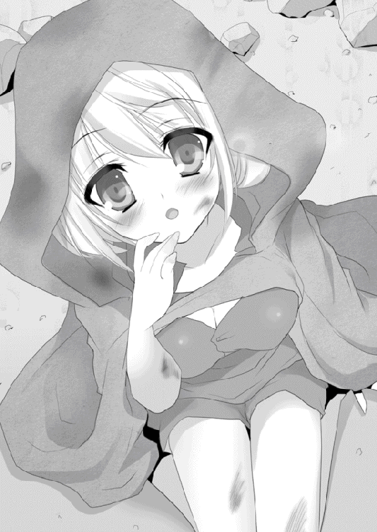
見つかりにくいよう死体を岩陰に隠し、ティグルたちは本隊へと帰還した。
「ずいぶんでかい土産ですな」
呆れ返ったそれが、ティグルを出迎えたルーリックの第一声だった。
◎
二千の奴隷を引き連れて、ムオジネル軍二万はアニエスの荒野を行く。
彼らの進軍速度は遅い。歩兵が主であることと、敵地ということもあって周辺を念入りに偵察しながら進み、小さな村だろうと見逃さずに潰していくためだ。
とはいえ、彼らは障害らしい障害にも遭遇せず、その進軍はきわめて順調だった。
「それにしても......このあたりは本当に何もないのだな」
ムオジネル軍の総指揮官であるカシムは、砂塵混じりの乾いた風を浴びながら馬上で不機嫌そうに呟いた。
「町や村を徹底的に潰して進むのが我々の役目とはいえ......この調子では、目的地にたどりついたときには奪うものが何も残っていないかもしれんな」
彼らの目的は、ブリューヌ王国南部だ。実りの多い豊かで広大な土地と、南の海に面した港町群をムオジネルは以前から狙っていたのだが、その好機がついに訪れたのである。
ブリューヌが混迷の沼でもがいている間に奪いとってしまおうという魂胆だった。
カシムは今年で三十になる。ムオジネル人特有の褐色の肌に、刃のように鋭い視線が印象的な男だ。頭部には兜ではなく白い布を巻き、宝石をあしらった銀細工で留めている。
かつては奴隷だったが、才能を認められて解放され、戦場で武勲を重ねてついには将軍の地位を授かった。
――奴隷だった俺が、いまや将軍だ。この遠征に成功すればさらに上へ行けるだろう。だが、もしも、しくじったら......。
浮かびかけた暗い考えを、カシムは慌てて振り払う。彼の内にはより高い地位を狙う野心と、失敗すれば奴隷に戻るかもしれないという恐怖が、ほとんど同量で存在していた。
肩越しに後ろを振り返ると、縄でつながれ、冬の風にこごえながらうなだれて歩くブリューヌ人たちの集団がある。捕えたときには反抗的な者もいたが、いまではほとんどがおとなしくしていた。
――二度と、あのようにはならん。
内心で呟いて、それからふと空を見上げる。日没にはまだ時間があるが、西へ傾きつつある日は赤茶けた砂岩の断崖に隠れてしまっていた。空は青から群青へと濃さを増して、周囲は薄暗くなり、風が冷たさを増しつつある。
――そろそろ夜営の準備をするか。
そう考えたとき、先頭を行く部隊から報告が届いた。
「将軍閣下。敵が現れました。ブリューヌ軍かと思われます」
敵、という単語にカシムは眉をひそめる。自分はたしかに二万の軍の後方で馬を駆っているが、だからといって前方の様子がまったくわからないわけではない。
「敵の数は？」
「百から二百ほど。すべて騎兵です。距離をとって、我が軍の右側面を投石や弓矢で攻撃してきまして。盾で防いではいますが、幾人か負傷者も......」
兵士の報告は深刻なものではなく、自分のそばを飛びまわる蠅のわずらわしさを訴えているかのようだった。
「そのていどの数、矢を射掛けて追い散らせばよかろう」
「そうしたのですが......やつらは逃げたかと思うとすぐに戻ってきて、同じことを繰り返すのです」
なるほどとカシムは理解した。簡単に蹴散らせると思ったものの、意外にも小うるさくまとわりついてきたので報告に来たということか。目をすがめて考える。
――城砦にいた連中の残党というわけではなさそうだ。この数に対して、百や二百で仕掛けてくるはずがない。その連中は囮とみていいだろう。
本格的に追っていけば、より多くの敵が待ちかまえているという寸法だ。
「歩兵を三千ばかり向かわせて、その者らを一人残らず潰せ」
「三千はいくらなんでも大袈裟ではないでしょうか。五百ほどで充分では」
「妨害する者は徹底的に潰すのが我々の役目だ。さっさと向かわせろ。二度は言わぬ」
不思議そうな顔をする部下に、カシムは舌打ちしかねない表情で命令した。
――大軍が近くにいれば、偵察部隊がその痕跡だけでも見つけているはずだ。それがなく、百や二百の囮ならば、本隊は多くても二千前後だろう。
こうして、一千の弓兵と二千の槍兵とで構成された三千のムオジネル兵が動きだした。それを見るや、ブリューヌ兵たちは背を向けて一目散に逃げだす。そびえる砂岩の間を縫うように馬を走らせる彼らを、ムオジネル兵も猛然と追った。
ほどなく、ブリューヌ兵たちは左右を絶壁に挟まれた隘路へと入りこむ。三千ものムオジネル兵は細い長蛇の列となって狭隘な空間を埋めていった。
隘路はすぐに終わり、ムオジネル軍の先頭が開けた場所に出る。正面と左右を砂岩の丘に囲まれた袋小路だが、三千の兵が展開するだけの余裕は充分にあるかと思われた。
しかし、彼らはそこに驚くべきものを見た。三方の丘のいずれにも無数の旗がひるがえり、頂上を埋め尽くさんばかりに黒い影がわだかまっているのだ。
「五千......いや、六千はいるぞ」
兵の誰かが圧倒されたようにつぶやく。どう見ても自分たちより数が多い。
罠にはめられたことを、ムオジネル兵たちは理解した。理解したが、そこで思考が止まってしまいそれ以上の反応ができない。
朱色に染まる西の空を背に、三方から一斉に鬨の声があがる。馬蹄を轟かせ、大地を揺るがせて黒い影の軍団は斜面を駆け下りてきた。さきほどまで逃げていた二百足らずの兵たちも反転して、向かってくる。
ムオジネル軍の指揮官はただちに大声で後退を命じた。だが、その命令はまるで円滑に伝わらない。ムオジネル兵の大半はまだ隘路に細長い列を為しており、先頭の兵たちが目の当たりにしたものを後方の兵たちは見ていないのだ。
隘路の各所で後退しようとする兵と前進しようとする兵が衝突した。周囲の暗さが拍車をかけ、混乱は際限なく増大していく。動きを止めてしまったムオジネル軍に、彼らの敵は容赦なく矢を浴びせ、石を投げつけた。
石とはいえ拳ほどもあり、顔や手に当たればその痛みは強烈だ。骨が砕けることもある。さらに、声を枯らして必死に兵たちを指揮している部隊長が次々に射倒された。
壊乱状態となったムオジネル軍はもはや戦意を失い、仲間を見捨て、押しのけ、踏みつけて無秩序に逃げまどう。
進んできた隘路を逆走し、どうにか彼らが落ち着きを取り戻したのは隘路を抜け出てしばらく時間が過ぎたころだった。
半刻足らずで、一千以上の兵を彼らは失っていた。
「初戦はどうにか上手くいったか......」
隘路を埋めるように折り重なって倒れているムオジネル兵たちの死体を見ながら、ティグルは疲労の濃く浮き出た表情でつぶやいた。
振り返れば、三方の丘には黒い影が依然としてわだかまり、旗が風になびいている。
偽装だった。アルサスで、ザイアンを相手に使った手を応用したものだ。荷台や資材、幕舎まで使ってとにかく自軍を多数に見せかけたのである。ムオジネル兵たちからは黒い影にしか見えないよう、方角や時刻を念入りに調整して。
「やつらが戻ってくる可能性がある。すばやく作業を終えて、引きあげるぞ」
ルーリックが兵たちに指示をとばす。ムオジネル兵の武具を外して奪うのだ。また、使えそうな矢は回収する。石もだ。
それをすませると『銀の流星軍』は闇に紛れて丘の向こうへすみやかに姿を消した。
マスハスたちにも言ったことだが、ティグルは二万もの敵と正面から戦う気はない。
今回のように策を仕掛け、彼らの足を鈍らせつつその勢力を削いでいくつもりだった。
ムオジネル軍がいる街道から離れた拠点に戻ると、ティグルは兵たちに幕舎の設営と休息を命じる。それが終わったころには、完全に日は沈んでいた。
総指揮官用の幕舎には、ティグルとルーリック、それからジェラールがいる。三人とも絨毯の上に腰を下ろし、何枚もの地図を囲んでいた。
「ひとまずの勝利、おめでとうございます」
「本当にひとまずですけどね」
ルーリックの言葉に、すました顔でジェラールが横やりを入れる。禿頭のジスタート騎士は露骨に不機嫌そうな顔を見せたが、ティグルの手前もあって自重した。ティグルはルーリックにうなずいて見せたあと、ジェラールに問いかける。
「戦死者と、負傷者は？」
「死者は今回出ておりません。負傷者は二十七人。内、行動に差し支える者は三人。他はいずれも軽傷です」
ジェラールの報告に、ティグルとルーリックはそろって安堵の息をついた。
「矢と石は？」
「矢は弓兵一人あたり五十六本。石は騎兵一人あたり十一、歩兵には五個まで確保、分配してあります」
何かを見るでもなく、すらすらと淀みなくジェラールは答える。次いで食糧や燃料の残量とその配分、武具の状態についても述べあげた。
「使用した分の一割が回収、再使用できるという前提ですと、どこかで確保しなければあと二戦で打ち止めです。規模の大きな戦の場合は一戦ももたないでしょう。とくに矢についてはジスタート兵に強く影響します。ブリューヌ兵には使い手はあまりいないので」
この褐色の髪の若者が備えた計算能力の速さと正確さ、処理の適切さはティグルだけでなくルーリックさえも唸らせるほどのものだった。
ティグルやルーリックにそうした能力がないわけではもちろんないが、ジェラールの方が速い。なにより、彼がそういったものを全面的に担当することで、ティグルたちは策を考えたり兵の統率に集中できるのがありがたかった。
――つくづく補給は大事だな。
あらためて、ティグルは痛感する。テリトアールにいたときはエレンがいてくれたので資金に困ることはなく、近隣の町や村から食糧や燃料を買うことにも苦労せず、武具や、馬の蹄鉄が壊れても修理するための材料をそろえることができた。
いまは違う。矢の一本も無駄にできない。兵たちに石を持たせているのも、矢の不足を補うためだ。
――まさか道端に落ちてそうな石ころの確保にすら難儀するとはなあ......。
「次はどうします？」
腕組みをしてルーリックが尋ねる。それにはすぐに答えず、厳しい表情でティグルは地図を見つめた。このアニエス一帯を描いたもので、ここへ来るまでに立ち寄った町や村と交渉して手に入れた地図に、偵察部隊の報告を書き加えて完成させた。
これがなければ今日のような罠を仕掛けることも、戦いをどう展開するべきか考えることもできなかっただろう。
「相手の足は、鈍ったと思うか？」
そうティグルに訊かれ、ジェラールは慎重な口振りで答える。
「斥候の報告から考えるかぎりでは、彼らの進軍速度は落ちていません」
頭を抱えたくなった。多少の損害を与えたていどでは、二万もの大軍は小揺るぎもしないのだ。次いで、ティグルはルーリックに訊いてみる。敵将のことをどう思うかと。
「優秀ですな」
簡潔にそう述べてから、ルーリックは理由を補足する。
「たかだか二百の兵に三千もの兵を差し向けてきたということは、こちらの実数をだいたい予測したうえで、確実に叩き潰しにきたということです。進軍速度が落ちていないというのも、立ち直りの早さを証明するものでしょう。ただ――」
ルーリックはそこで一旦言葉を途切れさせて、首をひねった。
「いささか生真面目というか、神経質な気はしますな。斥候の報告では、連中は小さな村でも見逃さずに潰してまわっている。今日の戦も、反応が異常に早い」
「そうだな。俺もそれは思った」
そこにつけいる隙があるかもしれない、とティグルは考えた。
足を鈍らせることができない場合は、目的を変える必要がある。場合によっては、寡兵で圧倒的多数の敵を破るなどという手すら考えなければならないだろう。
「できれば......連中がアニエスを出る前にもう一戦か二戦、仕掛けたいな」
今日の一戦は、相手の足を鈍らせることばかりが目的ではない。心理的な揺さぶりもかけている。それを活かすには、どうしてもあと一戦は仕掛けたかった。
「ヴォルン伯爵。我々と敵との最大の違いは何だと思いますか？」
深刻なつぶやきを漏らしたティグルに、ジェラールはしかめっ面をつくって疑念をにじませた目を向ける。ティグルは彼の態度を訝しんだものの、率直に答えた。
「違いはいろいろあるだろうが......最大のというと、兵力差か？」
「その通りですが......私が申しあげたいのは、敵はまだ何度か負けることができるのに対し、こちらはそうではないということです。数十人同士がぶつかりあうような小競り合いで負けるのすら、我々には許されない」
ジェラールの言葉は、幕舎内の空気を一瞬にして硬化させ、冷たいものへと変えた。
「最終的な勝利を得るための意味ある敗北、なんて言いまわしがありますが、そんなものはもってのほかです。戦いの回数を増やすということは『負けるかもしれない可能性』を高めることですから」
「勝てばいいのだろうが」
ルーリックが憮然とした口調で吐き捨てる。ティグルは緊迫した雰囲気をやわらげる意味もこめて、表情を緩めて口を開いた。
「ジェラール。兎と熊のおとぎ話は知っているか？ 力の強い暴れん坊である熊を、小さな兎が知恵と俊敏さを駆使して負かす話だ」
リムには聞かせられない話だな、などと頭の片隅で考えながらティグルは話を続ける。
「俺が考えているのは、単純化すればそういうものだ。熊の剛腕をかわしながら、兎は一撃一撃を確実に与えて相手を疲れさせる。最終的には動けなくさせて、降参させる」
「その話は私も知っていますよ」
ジェラールは小馬鹿にしたような笑みを浮かべ、唇をゆがめて続けた。
「あれの結末は複数ありましてね。一度でやめておけばいいのに調子に乗った兎が何度も熊をからかい、ついには運悪く捕まって一撃で叩きのめされ、丸呑みにされて終わるという話もあるのです。――一度でやめておけばよかったのに、ね」
ジェラールはやってられないと言いたげに両手を広げたあと、渋い顔をつくる。
「あなたにたとえ必勝の策があっても、運が悪ければ負ける。戦うという選択をとった瞬間に負ける可能性は生まれるのです。そもそも、さきほども申しあげましたが、我々には戦える力はさほど残されておりません。このアニエスを離れても、しばらくは無人の町や村が続くばかりです。我々がそうしたんですけどね」
ジェラールの言葉に、ティグルよりもルーリックが過敏に反応した。己の頭部をてのひらで何度か叩き、ジェラール以上に顔をしかめる。
「口達者なのはけっこうだが、文句や不満ではなく意見を述べたらどうだ」
「現状をわかっているのか疑問である、という意見ですよ。禿頭のジスタート人」
「......よけいな言葉は慎んでくれ、ジェラール。さもなければ、この忙しい最中におまえを禿頭のブリューヌ人にしなければならなくなる」
そういう言い方で、ティグルは暴言を吐いたジェラールを叱った。テリトアールを発ってから彼の暴言には何度も接しているが、平素は温厚なオージェ子爵の息子とはまるで思えないもの言いである。
失礼しましたと言ってジェラールは頭を下げたが、その表情も態度も申し訳ないと思っているようには見えない。
――でも、それ以外の問題は起こしていないんだよなあ......。
ジェラールはブリューヌ兵をまとめているのだが、その内訳を細かく見ればアルサスの兵であったり、マスハスが自領のオードから連れてきた兵であったり、オージェ配下の兵だったりと実情は混成軍に近い。装備もばらばらだ。
しかし、彼らが衝突を起こさないようジェラールはうまくやっていた。
どうも彼が嫌味をぶつけているのは、自分とルーリックの二人に対してだけらしい。
そのジェラールは顔を上げると、何でもないかのように話を戻した。
「問題は我々の継戦能力の他に、もうひとつ。ムオジネル軍は奴隷にした我が国の民を連れています。彼らを盾にでもされたら、我が軍は即座に瓦解しますよ」
ブリューヌ兵は民を見捨てることなどできないだろう。そして、もしジスタート兵が攻撃をためらわなければ、その瞬間『銀の流星軍』は真っ二つに割れる。
「......わかってる」
穴を開けることができるのではと思うほどの強烈な視線を地図に注ぎながら、ティグルは重苦しい声でジェラールの言葉に応じた。
一刻も早く彼らを助けたいという気持ちはあるが、まともに戦えば『銀の流星軍』は一瞬でムオジネル軍に呑みこまれ、散華する。迂闊な行動はとれなかった。
「そういえば」
気分転換の意味もあるのだろう、思い出したような口調でルーリックが話題を変える。
「ティグルヴルムド卿。あの子の様子はどうです？」
先日、ティグルがムオジネル兵から助けた娘のことだ。ティグルは首を振る。
「だいぶ弱っていたらしくてな。命に別状はないが、いまのところ寝たり起きたりの繰り返しだそうだ。起きているときにスープを飲ませるのが精一杯だと」
ティグルは忙しくて余裕がないため、多少なりとも薬学などをかじったことのある、信頼できる兵士に彼女の世話を任せていた。
空いた時間に何度か様子を見に行ったりはしたのだが、彼女が眠っているときばかりで話のできる状態ではない。無理に起こす気もなかった。
「俺もムオジネル軍でいっぱいいっぱいだ。しばらくは寝てもらってた方がいい」
◎
一方、ムオジネル軍である。
血と砂塵にまみれ、肩を落として悄然と戻ってきた兵たちを見て、カシムは激怒した。だが、拳を固く握りしめて、怒りを他者にぶつけるのだけは辛うじて抑えた。
敵の数が五、六千という報告を聞いたときには耳を疑ったものの、詳細を聞いて納得した。さきほどまでとは違う怒りに身を焦がすことになったが。『銀の流星軍』という名は知らないが、彼らのほどこした偽装をカシムはほぼ正確に見抜いたのだ。
「やってくれたな、ブリューヌ軍め......」
天候と地形を巧みに利用されたとカシムは考えていた。一千という死者は多いが、まだ一割にも達してはいない。今後いくらでも挽回の余地はある。
その後、カシムは偵察部隊から報告を受けた。街道からかなり離れた場所で、まだ新しい夜営の跡が見つかったという。
「推測できる敵の数は、二千足らずです。やつらは一日か二日ごとに拠点を変えている可能性があります」
「上出来だ」
カシムはその偵察部隊をねぎらい、褒賞として金貨の詰まった袋を与えた。
こういうとき、彼は物惜しみをしない。奴隷から将軍まで上り詰めることができた理由の、一つでもあった。
夜明けを待って、カシムは軍を再編成した。それまで本隊の左右に配していた三千の騎兵部隊を、本隊の前へと動かしたのだ。このあたりは、街道を離れればたちどころにいびつな砂岩が乱立する場所だ。騎兵の機動力をあまり活かせない。
代わりに歩兵を左右に配し、とくに側面を警戒するよう伝える。
また、敵は二千に満たない勢力であり、さまざまな手段を講じて多勢に見せかけてくるだろうが惑わされてはならないとも兵たちに告げた。
――とにかく、こちらは相手の十倍近い大軍だ。小細工さえなければ、勝つ。
このとき、敵の術中にほぼはまりかけていることに、カシムは気づいていなかった。
『銀の流星軍』が奇襲をかけてきたのは、その日の夕方だった。
街道の左右にそびえていた断崖や丘が少なくなり、道が広くなってきたころだ。岩陰に隠れ、暗がりにまぎれて接近した騎兵の一団が、ムオジネル軍の斜め後ろから突撃してきたのである。その数は五百ほど。
「迎え撃て」
カシムは悠然と命令を下し、ムオジネル軍歩兵が長槍と弓をかまえる。長槍を隙間なく連ねて鋭利な壁を作り、その後ろから山なりに矢を射放った。
『銀の流星軍』の騎兵は盾をかざして矢を防ぎ、矢と投石でムオジネル兵を攻め立てる。そうして隊列が崩れたところに馬を躍らせて斬りこんだ。
しかし、彼らの激烈な攻勢も長くは続かなかった。先を進んでいたムオジネル騎兵が、引き返してこちらへ向かってきたのだ。それも『銀の流星軍』へ突撃するのではなく、退路を遮断するべく回りこもうとしている。
「おおかた昨日のように隘路へと誘いこむつもりだったのだろうが、同じ手は通じぬ」
カシムは勝ち誇り『銀の流星軍』を完全に包囲し、圧殺するべく命令を下そうとした。戦場で新たな変化が起こったのは、そのときだ。
岩陰から一千近い騎影が現れ、ムオジネル騎兵に襲いかかったのである。その姿を見たカシムは、驚愕のあまりとっさに声を出せなかった。
敵の新手は、ムオジネル軍とまったく同じ恰好をしていたのだ。厚地の服の上に革鎧をつけ、頭部には黒い布を巻いている。肌の色で見分けようにも日の沈みかけた夕刻、ましてや視界が目まぐるしく変わる戦場ではとっさの判断などつきにくい。
昨日の戦いで、ティグルたちがムオジネル兵の武具をはぎとっていったのはこのためだった。いまこのときだけ、相手を混乱させられればいいのだ。
ムオジネル騎兵に扮した『銀の流星軍』は容赦なく敵に斬りかかった。同士討ちをしないよう、自分たちは合言葉をあらかじめ決めている。
熊、と問われたら兎、と返すのだ。
「いくらなんでもおとぎ話を参考にするとは......」
「この際重要なのはわかりやすさ、言いやすさだからな」
ルーリックとティグルはそんな会話をかわしたものである。
合言葉の飛びかう中、ムオジネル軍は混乱から醒める間に多くの者が落馬させられ、二度と立ち上がることができなかった。
さらに、最初に突撃した騎兵たちが槍先をそろえて突きかかる。完成間近の包囲網はもろくも崩れ、ムオジネル軍は敵の突破を許してしまった。『銀の流星軍』はその勢いのまま戦場を離脱する。
カシムは追撃を命じたかったが、しなかった。
歩兵では追いつけない。騎兵では、また同士討ちを誘発される危険性がある。暗がりに逃げていく敵を、手をつかねて見送ることしかできなかった。
血がにじむほどに強く拳を握りしめ、目を血走らせてカシムは暗闇を睨みつけていた。報告をためらっている側近に、低い声で呼びかける。
「――奴隷だ」
何のことかわからず困惑顔になる側近に、カシムは憎悪のこもった息を吐きだした。
「兵たちに伝えろ。俺が、奴隷を――そうだな、男女十人ずつで二十人欲している。いますぐ奴隷を金に換えたい者は申し出よ、とな。早い者勝ちだ」
この日、ムオジネル軍は歩兵と騎兵合わせて一千ほどを失った。たった二日で、全軍の約一割を喪失したのだ。何の戦果もなしに。
もはやカシムは手段を選ぶつもりはなかった。また、選んでもいられなかった。
次の日の朝、カシムは兵たちから買い取った奴隷を陣頭に並べた。さらに、声が大きくブリューヌ語を話せる兵たちをそろえ、自分の言葉を断崖に向かって復唱させる。
「岩陰に隠れて虫けらのごとくこそこそと這いまわる臆病なブリューヌ兵ども！ 街道に姿を見せよ。貴様らに真の勇気あらば、正面から堂々と挑んでくるのが戦士の倣いというもの！ こちらとしても、つまらぬ小細工にいつまでもつきあっていられぬ。それでも砂岩に身を潜めているのであれば、このようになるぞ！」
そう叫び、カシムは男たち十人の首を次々に刎ねさせた。血を噴きだして転がる首を見て、女性たちが悲鳴をあげる。
「いまより一刻が過ぎるまでに出てこなくば、次は女どもの番だ。小心者の貴様らが出てくるまで、こちらはいくらでも行う用意がある！」
敵軍に対する挑発であり、脅迫であり、そして奴隷たちに対する威嚇だった。
ムオジネル軍が二日続けて手酷い目に遭わせられたことを、奴隷たちも薄々勘付いている。彼らに希望を抱かせず、おとなしく従えるためにも見せしめの処刑は必要だった。
奴隷の死体はそのままに、ムオジネル軍は進軍を開始する。
この日、ムオジネル軍は本隊を前方へ出していた。さすがに先頭ではないが、先頭の部隊は三千と、全体から見ればそう多くない。
敵がきわめて少数である以上、正面から攻めてくるはずはないという判断によるものだった。実際、一昨日は側面から仕掛け、昨日は斜め後ろから襲いかかってきた。次もそうするしかあるまい。万が一、正面から来ても、三千の兵で受け止められる。
また、食糧や燃料を運ぶ部隊を守る意味もあった。
――こちらの食糧を焼くか奪うかするのが戦の常道だ。ましてや敵は少数。今日まで狙ってはこなかったが、次はそうするやもしれぬ。
街道をまっすぐ進む彼らの前に騎兵の一団が立ちふさがったのは、太陽が中天にさしかかろうとするころだった。だが、報告を受けたカシムは、おもわず耳を疑った。
「五、六百ほどだと......？」
ムオジネル軍は、一割を失ってもなお一万八千という圧倒的な数である。その正面に立った敵の数は、多くても六百だという。
「一千ばかりどこかに潜ませているとすれば、計算は合うが......」
しかし、街道を埋め尽くすこの数に、六百だの一千だので何ができるというのか。
――それとも、こちらが捉えられなかった伏兵がいるのか？
そんなはずはないとカシムは自身に言い聞かせる。夜営の痕跡という証拠があるし、何よりもっと多いのならば、一昨日も昨日も、より強烈な追撃や奇襲をかけることが敵はできたはずだ。
「敵の指揮官は？」
「おそらく、先頭に立っているあの赤毛の男かと」
六百前後の騎兵集団の先頭には、くすんだ赤い髪の若者が馬を駆っている。革鎧に弓という、およそ一軍を率いる将とは思えないいでたちだ。
――そもそも、ブリューヌ人が弓使いを将にするはずがない。
ブリューヌ王国が弓を嫌悪し、侮蔑していることはムオジネルでも知られている。カシムも当然知っていた。
――敵が伏兵を近くに潜ませているのは間違いないが......。
正面の敵と伏兵と、どちらが主力だろうか。カシムは思考を巡らせる。
――あの赤毛を見れば、誰もが伏兵こそが主力と考えるだろう。しかし、そう思わせるのがやつらの手だ。伏兵にこちらの注意を惹きつけさせ、正面の敵が何かをしかけてくるに違いない。
敵の策を看破した。そうカシムは思った。もう逃がさぬと決意し、軍を前進させる。正面の敵はその場から動かず、待ち受けているかに見えた。
「野蛮にして粗暴なムオジネルの兵たちよ！」
赤い髪の若者が、声を張りあげた。ブリューヌ語がわかるカシムはその言葉に耳を傾けつつも、進軍を止めさせはしない。
「罪もない民の命を奪う貴様らの所業、万死に値する。だが、その首を刎ねる前に聞いておく。なにゆえ、貴様らは無法にも国境を越えて我が国にその汚い足で入り込んだのか」
「答えてやってもよいが、聞く態度というものがあろう」
カシムは嘲弄した。
「武器を捨て、這いつくばって奴隷となれ。そうすれば寛大な主人がわかりやすく教えてやろうとも。その後も、なるべく優しい主人に買われるよう取り計らってやるぞ」
総指揮官の言葉をムオジネル兵が二つの国の言語で唱和して、嘲笑を叩きつける。そして彼らは弓に矢をつがえ、かまえた。矢の届く距離が迫ってきたのだ。
まさしくそのとき、断崖上に鬨の声があがる。伏兵の存在を予測していたカシムは笑みすら浮かべてそちらを見上げ、おもわず己の目を疑った。
彼の視界に飛びこんできたものは、ブリューヌ王国の紅馬旗ではない。ジスタート王国の黒竜旗だったからだ。
ジスタート軍を招き入れた一団がある、という話はカシムも聞いていた。
だが、そんなものが来るはずがないと信じていた。来る理由がないからだ。ジスタート軍にも思惑はあろうが、ブリューヌを守るためだけに血を流すはずがない。
それがカシムの結論だった。
驚愕のあまり動きを止めたのはカシムだけではない。ムオジネル兵のほぼすべてが絶句し、愕然としてその場に立ち尽くした。
ジスタートはムオジネルの北にあり、小競り合いは珍しくない。兵たちにとっても黒竜旗は見慣れたものであり、記憶によいものでは当然なかった。
「突撃せよ！」
その叫びは、ジスタート兵たちを率いるルーリックと、ブリューヌ兵たちを率いるティグルのどちらが発したものだったか。
喚声をあげて『銀の流星軍』は二方向からムオジネル軍に襲いかかる。ムオジネル軍は完全に出鼻をくじかれた形となり、何よりも敵に必要以上の接近を許してしまった。
真上に達した陽光を反射して輝いた白刃は、しかし血と泥にすぐ染まる。それは槍も甲冑も変わらない。両者の振るう剣が敵の頭蓋を叩き割り、槍が腹部を背中まで貫いた。
流れ矢が眼球や頬を射抜いて悲鳴をあげさせ、馬蹄が地面に倒れた者を容赦なく踏み砕く。砂礫だらけの乾いた荒野はたちまちのうちに流血と死体で埋め尽くされた。
わずかな間に『銀の流星軍』はムオジネル軍の先頭に深く斬りこんだが、それでも三千という兵の厚みを突破することはできないようだった。
血を帯びた砂塵が巻き上がる戦場を、カシムは満足げに見ている。不意を打たれたのは口惜しいが、最終的には自分の思う通りにことは運んだのだ。このまま持ちこたえれば、いずれは後方の兵たちも追いつく。
彼らを包囲すればムオジネル軍の勝利だ。
会心の笑みを浮かべかけたカシムの背筋を、不意に悪寒が駆け抜けた。それは、いままで彼をたびたび救ってきた、いわば直感ともいうべきものだった。
敵に近いとカシムはふと思い、しかし、すぐにその考えを否定した。
もっとも自分に近い敵でも、三百アルシン（約三百メートル）以上離れている。
そして、その三百アルシンはムオジネル兵で埋め尽くされているのだ。いかな武勇を誇る戦士でも容易に突破できるものではなく、矢も届かない。
――届いたぞ。
声が、カシムの耳に聞こえた。悪霊が囁きかけたかのようだった。
同時に、一本の矢が飛んできた。まっすぐカシムの額を狙って。
通常、総指揮官の戦死は可能なかぎり隠蔽される。それは、敗北を意味するからだ。すぐによく似た人物を身代わりに仕立てて味方と敵の目をくらます。そうして時間を稼ぎ、戦をすみやかに終わらせて撤退してから、ようやく公表されるのである。
しかし、今回はそういうわけにはいかなかった。
空は晴れ、太陽は真上にあり、総指揮官のいた場所は主戦場に近い。
しかも、カシムは布を巻いただけの頭部を射抜かれたのだ。助かるはずがない。
水面に広がる波紋のように、まず衝撃がムオジネル兵たちの間に伝播する。次いで、恐怖がすさまじい速さで伝染した。
その反応を待っていたといわんばかりに『銀の流星軍』が鬨の声をあげる。
二万近いムオジネル兵が、二千足らずの敵を前に怯え、戦意を喪失した。
呆然自失からいち早く立ち直り、兵を叱咤しようとした側近が、さらに飛来した一本の矢で射倒されると彼らの士気は完全に崩壊する。
最初に崩れたのは、戦闘には参加せずに、総指揮官を失ったという事実だけを押しつけられた後方の兵たちだった。一人、二人と後退し、誰かが背を向け、武器を捨てて、足をもつれさせながら街道を走っていく。
泥の人形が崩れていくように、ムオジネル軍は瓦解する。
たったいままで『銀の流星軍』と斬り結んでいた兵たちも、後方のこの動きを知って動揺した。逃げようとした者は背中から貫かれ、戦い続けた者は囲まれて斬り刻まれる。
アルサスの兵たちに守られながら先頭に立っているティグルも、彼らに情けをかけることはなかった。今朝、首を刎ねられた十人の民の存在が、激しい怒りを抱かせている。
「全軍、追撃せよ！ 徹底的に叩きのめせ！」
自身も矢を放ちながら、ティグルは鋭く命令する。ただ感情的に叫んだのではない。
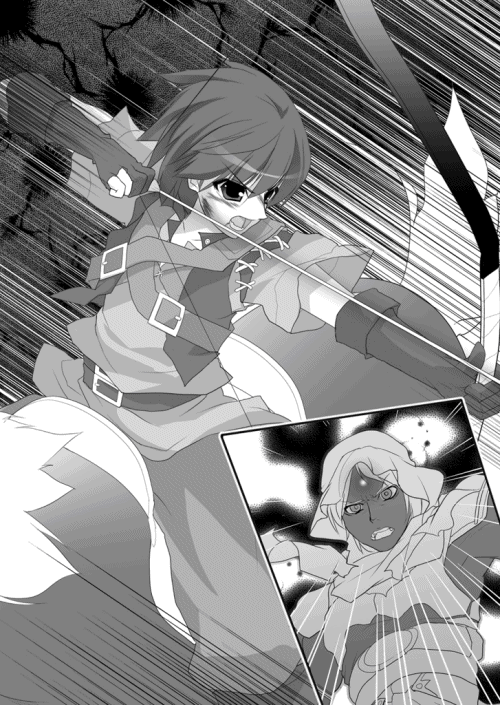
いまムオジネル軍は全面潰走に陥っているが、なんといっても一万八千の大軍だ。彼らが冷静さを取り戻し、新たな指揮官を選んで戻ってきたら、ティグルたちは今度こそ敗れ去るだろう。
おまえたちは負けたのだと、恐怖とともにわからせておかねばならなかった。
「――終わってみると、予想以上にぎりぎりでしたな」
矢を射ち尽くして馬上にたたずむティグルに、ルーリックが馬を寄せてくる。ティグルは厳しい表情を崩さず、無言でうなずいた。
カシムは決して愚かではない。ただ、油断した。より正確には、油断させられていることに最後まで気づかなかった。
ティグルは二度の戦闘にわたって、自分たちが少数であることをカシムに印象づけた。少数ゆえに多数を装い、あるいは変装して混乱を誘ったというふうに。
そのため、カシムは左右や背後を警戒して正面の兵を減らし、自身の位置を前へ移すなど少数の敵に対応した形をとった。だが、まさにそれこそがティグルの狙いだったのだ。
それでも、たとえばティグルが剣士であれば、カシムは兵たちの壁によって己を守り、生き永らえることができただろう。また、ティグルの矢が三百アルシンも飛ぶことがなければ、助かったかもしれない。
弓の得意なブリューヌ人が――それも三百アルシンの距離を正確に飛ばして目標を射抜けるような者がいることを想像するのは、カシムでなくとも不可能だった。
ティグルが先頭に立って姿を見せたのは、そうした方がかえって自分を警戒しないだろうという判断があったからだが、どうしても怒りをぶつけなければ気がすまないという気持ちもあった。無辜の民を殺されて、黙っていられるティグルではなかった。
それでもなお、非常にきわどい状況で掴み取った勝利だった。ティグルがカシムとの距離を約三百アルシンにまで縮められたのは、一つか二つ数えるのがせいぜいの、ほんのわずかな時間だったのだから。そよ風一つで敗北していたかもしれないのだ。
「ルーリック。追撃を任せていいか？」
戦場が徐々に南東――ムオジネル方面へ移動していることを確認したティグルは、ぽつりと訊いた。その表情と声音から、ルーリックはティグルの意図と心情を察する。
「お任せあれ」
ティグルは禿頭のジスタート騎士に礼を言うと、ジェラールと、数人のアルサス兵を連れてその場から離れる。向かったのは、奴隷にさせられていた者たちのところだった。
雪崩のごとき勢いで逃げていくムオジネル兵と、それに追いすがる『銀の流星軍』から身を守るため、彼らは身体を丸めて地面に伏せていた。血飛沫が降り注ぎ、死体がのしかかり、悲鳴と絶叫が、馬蹄の轟きが彼らを怯えさせていた。
ティグルは馬から下りると、彼らに歩み寄る。
「もう、だいじょうぶだ」
落ち着いた声で、呼びかけた。助けに来てくれたの、とそばにいた女性に尋ねられ、ティグルは優しげな笑みを浮かべてうなずく。
驚きと疑い、喜びが無秩序に彼らを包んでいった。助かったと声をあげる者もいれば、信じられないように首を振る者もいる。事態が理解できずに呆然としている者もいた。
「......どうして、もっと早く来てくれなかった!?」
突然、男の一人が責めるような叫びをあげた。
縄でつながれたままのために彼はその場から動くことはできなかったが、滂沱の涙を流し、激しい感情を宿した双眸でティグルを睨みつける。
「今朝、あのときにどうして姿を見せてくれなかったんだ！ 近くにいたんだろう！ あんたが出てくれば、あいつは死なずにすんだ！ それなのに......」
ティグルは目を瞠って、その場に立ち尽くす。
動いたのはジェラールと、アルサス兵たちだった。
「それが――」
助けた者に投げかける言葉なのかとジェラールは言おうとして、言えなかった。
ティグルが手を伸ばして彼を制したのだ。自分を守るように囲んだアルサス兵たちをさがらせて、ティグルは沈痛な表情で男に頭を下げた。
「すまない」
ティグルの態度とその言葉に、男ははっとして息を呑む。無数の言葉が奔流となって彼の中で荒れ狂っていたが、それ以上は言葉を発さず、うなだれて座りこんだ。
彼らの縄を解くようティグルは指示し、また女性には服の代わりになるものも用意するように命じた。ティグル自身も、短剣で彼らの縄を断ち切っていく。
「あの......」
何十人目かの縄を解いたとき、その少女がおそるおそるティグルに声をかけてきた。ティグルと同じくらいの年齢だろう素朴な印象を与える少女だ。無残に引きちぎられた服を手でおさえて身体を隠しながら、彼女はティグルに深く頭を下げる。
「ありがとうございます、助けてくれて......。それに、お父さんの仇をとってくれて」
ぼんやりと、ティグルは理解した。今朝、命を落とした男たちの内の誰かが、この娘の父親だったのだろう。
「ごめんなさい。さっきの人が、その、間違ってるとは思いません。わかるんです、気持ちが。でも......それでも、あたしはあなたにお礼を言いたかった」
娘の真摯な言葉に、ティグルは困ったような、迷うような、複雑な表情を浮かべた。
飾らない、彼女の率直な言葉に救われた気分になったが、そんな自分を咎める気持ちも同時に湧きあがっている。
自分の感情をどう処理するべきか判断がつかず、肩を震わせはしたものの、一筋の涙を見せることもなくティグルは彼女に礼を述べた。
「俺の方こそ、ありがとう」
『銀の流星軍』で追撃に参加した兵の数は千と数百。ほぼ全軍といってよい。
彼らは戻ってくるなり全身を覆う疲労に耐え切れず、その場に座りこんでしまった。数千もの死体が散乱し、無数の血だまりがあるにもかかわらず、だ。寝息を立てている者もいる。力なく倒れているさまは、転がっている死体ととっさに見分けがつかない。
テリトアールからアニエスまで駆けてきたかと思えば、ろくに休む暇もなく砂岩の断崖や丘を四苦八苦しながら歩きまわり、三日続けてムオジネル軍と戦ったのだ。
ティグルはできるかぎり兵士たちに休息を与えていたが、それは充分なというよりも必要最小限に近いものだった。
そして、追撃戦である。武器を振りまわして戦場の端から端まで駆けたようなもので、武具を放り捨ててその場に倒れこんでも仕方のないことだった。
この戦いでムオジネル軍は三千を超える兵を失った。先日までのと合わせれば死者は五千を超え、全軍の四分の一が、アニエスの地に倒れたことになる。
一方で『銀の流星軍』も二百人近い死者を出している。
「生きている者の数ならば千五百と三人。その内、重傷、軽傷問わず負傷者が四百六十二人おります。数字で見れば辛勝でしょうが、現状を考えれば奇跡的な戦果かと」
ジェラールは、彼には珍しく感に堪えないという顔でティグルに報告したものだった。実際、二万の敵を撃退したと思えばわずかな犠牲だったといえる。
しかし、その報告を聞いている間、ティグルの表情は勝者の将に見えないほど重苦しく沈んでいた。決して疲労のせいだけではない。
だが、ティグルやルーリック、ジェラールらには休む暇などなかった。やるべきことは山積みされており、動ける兵をかき集めて戦後の処理にあたった。
敗走したムオジネル軍は食糧や燃料に加え、彼らが奪った金品までも置いていったので兵士と民にそれらを分け与えたのだ。
ジェラールは戦場ではまったくといっていいほど活躍しなかったのだが、ここではその持てる才能を十全に発揮した。『銀の流星軍』が必要な分は確保しつつ、民がとりあえずテリトアールにたどりつくまでの食糧と燃料を分配してみせたのである。
「やっぱり、テリトアールに送らざるを得ないか？」
褐色の髪の若者の報告を聞いて、ティグルはそう尋ねた。ジェラールはうなずく。
「ヴォルン伯爵も彼らから話を聞いたと思います。彼らが住んでいた町や村はことごとく破壊されたと。彼らに住んでいた家に帰れと言うのは、冬の寒さの中、野で暮らしながら自力で家を建てろと言うのも同然ですよ」
「それはわかるが......テリトアールはだいじょうぶなのか？」
すでに多くの町や村の者たちが、戦火から逃れるべくテリトアールを目指している。ティグルの心配は当然だったが、テリトアールの主の息子は肩をすくめてこう答えた。
「二千もの人間を押しつけられるあてが、他にありません」
ティグルは反論できなかった。自領のアルサスで受け入れても、すぐに破綻するのが目に見えている。かといってマスハスの治めるオードではさすがに遠すぎる。
「わかった。そのように手配してくれ」
そう言ったとき、ルーリックがこちらへ歩いてくるのが見えた。
「――ティグルヴルムド卿。お話があります」
普段通りの明るい笑顔だが、どこかぎこちなさがある。疲労はしていたが、ティグルはそれを見抜いた。兵たちに指示を出し、ティグルはルーリックとジェラールを伴ってその場を離れる。歩きながら訊いた。
「どうした？」
「追撃戦において、私はムオジネル兵の何人かを捕虜としたのですが......」
これは、ティグルが命じたことでもあった。彼らの目的やムオジネル王国の様子を知っておく必要があると考えたからだ。ルーリックは作りものの笑顔を消し、ティグルとジェラールが驚くほど陰鬱な表情になった。
「彼らは一様にこう言いました。『自分たちは先遣隊であり、露払いである』と」
ティグルの足が止まる。衝撃が、動く力を奪った。ルーリックの顔を塗りつぶしていた深刻さの陰りが、瞬く間にティグルとジェラールに伝播する。
この数日、寝る間も惜しんで知恵を絞り、多大な犠牲を払ってまで倒した相手が、露払いにすぎないというのか。
「彼らが先遣隊だというなら......」
よろめきかけた身体に喝を入れ、萎えそうになる足に力を込めて、ティグルはどうにか踏みとどまった。かつてない緊張に、心臓が激しく脈打っている。
「本隊は？」
「彼らによれば三万とのことです。確認のため、偵察部隊を向かわせておりますが」
――三万......。
声にならない叫びが、ティグルの体内で無数に反響する。
「......いえ、三万ではすまないでしょう」
ジェラールが息を詰まらせたような蒼白な表情で首を振る。ティグルは難しい顔でうなずいた。自分たちは二万の敵を破ったが、ことごとく息の根を止めたわけではない。
「敗走した兵すべてということはないだろうけど、一万は本隊に合流すると見ていいな」
「......二万の次は四万というわけですか。となれば、向こうも軍を再編成しなければならず、今日、明日ということはないでしょうが」
数日中に、ムオジネル軍はアニエスに姿を現す。四万という大軍で。
しかも、こちらの兵は疲れきっている。せめて今日いっぱいは休息させねば、とても動けない。また、逃げるにしても二千の民を置いていくわけにはいかず、行軍速度の低下は否めない。最悪の場合、アニエスを出る前に捕捉されるだろう。
重苦しい沈黙が三人を包む。それを破ったのは、ジェラールだった。
「どうなさいますか、ヴォルン伯爵」
問いかけられ、ティグルはぼんやりと褐色の髪の若者を見つめる。
「これからのことです。身軽になって逃げれば、あるいは助かるやもしれません」
ジェラールの言葉の意味を正確に悟ったティグルは、怒りを隠そうともせず率直に彼にぶつけた。
「......本気で言ってるのか？」
「――いえ。失言でした、申し訳ありません」
ジェラールは深々と頭を下げる。それに対して動いたのは、ティグルではなくルーリックだった。ジェラールが顔を上げた瞬間を狙って、その頬を殴りつける。褐色の髪の若者はよろめいて一、二歩後ずさった。
ティグルは驚いてルーリックを見たが、すぐには咎めず彼の言葉を待った。疲労もあるのだろうが、いまの一撃はあきらかに手加減してのものだった。ルーリックが本気で殴っていれば、ジェラールはよろめくどころではすまなかったはずだ。
「......貴様、いつまでティグルヴルムド卿を試せば気がすむのだ」
握り拳を固めたまま、ルーリックはジェラールを睨みつける。赤く腫れ上がった頬をおさえながらジェラールはいびつな笑みを浮かべた。
「もうしませんよ。いまのが最後のつもりだったんですから」
その言葉には、さすがにティグルもいい顔をしない。ティグルを試していたことを、ジェラールははっきりと認めたのだから。
「あの口の悪さも、わざとだったのか？」
「いえ、あれは素です」
額に青筋をたててにじりよるルーリックを手で制し、ティグルはやや大げさなくらいに溜息をついてみせた。余裕のない状況だが、だからこそ、いま彼の真意を正確に知っておくべきだと思った。
「俺は、おまえの父上殿には信頼されてると思ったんだが」
「父は父、私は私です」
頬をさすりながら、ぬけぬけとジェラールは答えた。
「私が恐れていたのは、あなたがアルサスを守るためにテリトアールを切り捨てるような事態です。アルサスのことを第一に考えればありえないことではない。だから、あなたという人間を可能なかぎり正確に知っておきたかった」
「それなら、なおのこと暴言は慎み、信頼を得る努力をすべきではないか」
ルーリックに厳しく睨みつけられて、ジェラールは肩をすくめる。
「信頼は、すでに父が得ています。これでヴォルン伯爵の不興を買っても、あとで私が父に斬られればすむことです。息子を斬って毅然とした態度を示す父を、あなたは見捨てないでしょう」
見かけや口調以上に面倒な男だ。ティグルはもう一度、今度は心から溜息をついた。
「ヴォルン伯爵。こんなときに言うことではありませんが、あなたは他人の目に映るご自身の姿について、もうすこしお考えになった方がよろしい」
「他人の目？」
「ブリューヌ人でありながら弓に長け、ジスタートの捕虜になったかと思えば兵を借りて戻ってきて、しかも辺境の小貴族の分際で、大貴族であるテナルディエ公に喧嘩を売る......。あなたの人柄に詳しくない人間がそれだけを聞いたら、どう思うでしょうか」
「喧嘩を売ってきたのは向こうだ」
つい感情的に答えると、ジェラールは受け流すように笑った。ティグルとしてはおもしろくなかったが、彼の言葉にうなずけないわけではない。自分のことながら、たしかにこれでは警戒されても仕方がないだろう。
「まあ、言いたいことはわかった。気をつける」
「お聞き入れくださってありがとうございます。つけくわえるなら、この不毛の荒野とでも呼ぶべき頭のジスタート人はあなたに傾倒しすぎて、とうてい参考にはなりませんよ」
「......ティグルヴルムド卿。これからの話を」
自制心を最大限に発揮して、ルーリックは話を戻し、かつ進めることにした。ティグルも気を取り直してうなずく。ジェラールもだ。
「兵はともかく、民は動けないか？ 少しでも遠くに逃げてほしいんだが」
「彼らもずうっと縄につながれ、歩かされてきて、疲れています。今日は無理かと」
「......じゃあ、男女の数を調べておいてくれ。冷たい言い方だけど、自分の身は自分で守ってもらう。男に女を守らせる形をとって、テリトアールまで向かってもらうんだ。武器はムオジネル兵の死体から槍を奪って、持たせることにしよう」
非情な決断ではあるが『銀の流星軍』とて兵が一人でも惜しい状況なのだ。
それに、二千という数は強力な武器となる。半分が男としても、彼らに槍を持たせて街道を行かせれば、野盗の類ならまず近づいてはこないだろう。
方針を決めると、三人は即座にそれぞれのやるべきことにとりかかる。
一夜明けて、二千の民と『銀の流星軍』は移動を開始した。
左右に無骨な断崖の続く街道を、かつてない緊張感に包まれながら彼らは重い足取りで歩く。ムオジネル軍が再び迫っていることは誰もがわかっていたが、身体がついていかない。一晩の休息では、それまで蓄積してきた疲労は抜けきらなかった。
――まずいな......。
ティグルはルーリックと顔を見合わせる。行軍速度が遅くなるかもしれないとは思っていたが、予想以上だ。かといって、せきたててもどうにもならない。彼らは怠けたりしているわけではないのだから。
変化が訪れたのは昼ごろだ。ムオジネル軍の位置と動きをさぐるために出し続けていた偵察部隊から報告があった。
「ムオジネル軍の騎兵部隊が突出してきます。数は三千から四千といったところです」
ティグルの決断は早かった。
「ルーリック。兵の指揮は任せる。それと、矢を残っている分すべてくれ」
「また、無茶をなさるのですか」
ジスタート騎士は呆れと気遣いの入り混じった顔をする。ティグルは肩をすくめた。
「いくらかでも相手の足を鈍らせないとな。それに、いまは向かい風だ」
それもまた民や兵の進みを遅くしている一因ではあったが、追ってくる敵に矢を射掛けるのであれば、これほどありがたいものもない。
「では、弓の得意な者を何人かお連れください」
それがルーリックにとって譲歩できる条件だった。ティグルは彼に礼を述べると、十騎ほどを引き連れて離れる。砂塵を蹴立てて街道を走った。
四半刻ほど行くと、前方に騎影が見えてきた。戦神ワルフラーン――ムオジネル軍の軍旗もだ。ティグルは弓をかかげて馬を止める。すばやく矢をつがえ、放った。
空に長大な曲線を描いた矢は、風を切って飛んでいく。狙いあやまたず、先頭に立っていたムオジネル騎兵を永遠に落馬させた。ジスタート兵たちもティグルに続いて矢を射放ち、何人かの敵を打ち倒す。
突然の襲撃者に一瞬動きを止めたムオジネル軍だが、すぐに馬蹄の轟きを地鳴りに変えて前進を再開した。彼らも矢を放ったが、充分な距離に加えて逆風もありティグルたちには届かない。
ティグルたちは馬を走らせ、彼らと一定の距離をたもちながら矢を射掛けたが、何人射倒されても彼らは一向にひるまなかった。ティグルのこめかみに、冷や汗がにじむ。
――このままだと、やつらは俺たちを蹴散らしてルーリックの本隊に追いつくぞ......。
そのときだった。突然、馬蹄の轟きが一際大きくなる。敵の増援でも現れたのかとティグルは焦りを覚えたが、それにしてはムオジネル軍が立ち昇らせる土煙に変化はない。
ムオジネル軍もそれに気づいたらしく、馬を止めた。馬蹄の轟きは上、左の断崖から聞こえ、近づいてくる。ティグルははっとしてそちらを見上げた。
――黒竜旗......？
風にひるがえるそれは、まぎれもなくジスタート王国の軍旗だ。黒竜旗と並んではためいているのは、白地に、蒼い槍を斜めに描いた軍旗。ティグルはそれに見覚えがあった。
その騎兵の一団は急な傾斜を巧みに駆け抜け、ティグルたちとムオジネル軍の間に割りこむようにして地上へと降りてくる。
先頭に立って騎兵を率いているのは十五、六歳ぐらいの少女だ。彼女は馬首を巡らせ、呆然としているティグルの前まで馬を進めてきた。
小柄で、青い髪を肩のあたりで切りそろえている。馬を走らせてきたからか頬はやや上気していた。愛らしい顔立ちの中には、鋭さと冷たさを併せ持った氷のような瞳が輝いている。髪の色に合った青い絹服に身を包み、手には柄の短い槍を持っていた。
ティグルの顔を見て、彼女はどこか意地の悪そうな笑みを浮かべる。
「ひさしぶりね。ティグルヴルムド＝ヴォルン」
オルミュッツを治める戦姫。
『凍漣の雪姫』リュドミラ＝ルリエだった。
３ 『異彩虹瞳』
雪がちらつきはじめた。乾いた風は一段と冷たさを増し、冬の野を行く者たちの身体を静かに凍えさせる。灰色の空の下、視界に映る風景は薄ら寒い。
ヴォージュ山脈を抜けたエレンたちはライトメリッツを横切り、まっすぐレグニーツァを目指していた。
「エレオノーラ様。雪が......」
横から声とともにリムの手が伸びて、エレンの髪にかかった雪をそっと払い落とす。青い瞳に自分を気遣う色を見てとったエレンは、彼女を安心させるように笑いかけた。寒さのために頬は赤く染まり、吐く息は白く、一瞬だけ視界を曇らせる。
「ありがとう、リム。私はだいじょうぶだ」
それから、白銀の髪の戦姫はすぐにその表情を真剣なものへと変えた。
「――脱落者は」
「少なからず、出ています。ライトメリッツに入ってからは強行軍ですので」
「一千を切ってもかまわない。この速度を維持したまま行くぞ」
ヴォージュ山脈を越えるまでは難しかったが、自領であるライトメリッツに入れば、多少の脱落者を出しても近隣の町や村に戦姫として保護を頼むことができる。
いまエレンに求められているのは、とにかく急ぐことだった。
ふと、灰色の風景を眺めていたエレンの視線が、何かをさがすように動く。しかし、彼女はすぐに苦笑を浮かべて首を振った。
「......ティグルヴルムド卿のことを考えておいででしたか？」
その仕草から察したらしいリムの質問を、エレンはとっさに否定できずに恥ずかしそうに頬を赤く染める。リムは呆れた顔で溜息をついた。
「彼と別れてから何日が過ぎたとお思いですか。ここはもうジスタート国内ですよ」
つきあいの長い副官の苦言に、しかし、エレンは反省するどころか、口元に意地の悪い笑みをひらめかせた。
「リムこそ、昨夜の軍議における醜態はどう説明するつもりだ？ 四半刻余りの短い打ち合わせだというのに、おまえときたら二度も『ティグルヴルムド卿は』などと言いかけたではないか。私とおまえの二人だけだからよかったようなものの......」
痛いところを突かれてリムは青い目を丸く見開き、言い訳の言葉を考えてあの、その、としどろもどろになる。ついには顔を真っ赤にしてうつむいてしまった。
おおいに溜飲を下げたエレンはこれ以上彼女をからかうのをやめ、感傷をにじませた微笑を浮かべて小さく息を吐く。
「まったく......。秋にあいつと会ってから、まだ半年も過ぎていないというのにな」
そもそも戦場での敵味方という、決して友好的な出会いではなかった。
それなのに、ティグルの存在はエレンの中でもリムの中でも大きなものになっている。
「リムは、あいつの欠点はどういうところだと思う」
「欠点......ですか？」
不思議そうな顔をするリムに、エレンは紅玉の色の瞳を輝かせながらうなずく。
「いくらでも挙げられますが。朝はちゃんと起きませんし、剣や槍を教えるというと何かと理由をつけて逃げますし、軍略の講義が四半刻を過ぎたあたりから集中力が途切れてくるのか冗談を挟むようになってきますし......」
指折り数えてリムは並べ挙げたが、そこで言葉を途切れさせた。エレンがにこにこと楽しそうな表情で彼女の顔を見つめているからだ。
「......私の顔に何か？」
「いや、ただ、欠点を挙げている割に楽しそうだなと思ってな」
エレンの評価にリムは不満そうに口を引き結ぶ。頭の左で結わえた金色の髪が揺れた。
「楽しくなどはありません。もっとしっかりしてほしいと思うだけです。武芸はともかく他についてはやればできる人なのですから、こちらで強く尻を叩いてあげないと......」
「尻といえば、おまえはまだ胸しか見られていないのだったか」
「......何の話ですか」
「うん、どうもあいつは運が悪いというか運がいいというか、ぼうっとしているのか案外抜け目がないのかわからぬが、ひとが水浴びしている最中に踏みこんでくることがあってな。私だけでなくソフィーも......そういえばリュドミラも見られたのだったか」
言ったエレンはとくに気にしていなかったのだが、聞いたリムはまず顔を真っ赤にし、次いで怒りが突き抜けて醒めきった、青白い表情へと変化した。
「......そうですか。帰ったら、ティグルヴルムド卿にいくつか問い質さなければならないようですね。場合によっては講義ではなく教育――いいえ、躾を行う必要が......」
近い未来の予定を頭の中で組みたてつつ、リムは気になったことを主に尋ねた。
「エレオノーラ様から見た彼の欠点は、どういうところでしょうか？」
「そうだな......」
エレンは考えをまとめるように、視線を灰色の空へと彷徨わせる。
「なかなか思いつかんな。浮かばないわけではないが、見方を変えれば美点ともいえる」
後日、これはもしかしたら惚気だったのだろうかとリムは危惧したものだったが、このときは思いつかない。なにより、この話はここで終わってしまった。
視界にちらつく雪の量が、目に見えて多くなってきたのだ。
「――リム。もう少し馬足を速められるか？」
即座に思考を切り替えて、真剣な表情でエレンは尋ねる。リムもすばやく計算した。
これまでエレンは、はやる気持ちを抑えて、急ぎ足ていどにとどめてきた。
馬を急がせてその日の距離を稼いだとしても、次の日には馬が休息を欲して走れなくなる。最悪の場合、潰れてしまう。それを恐れたのだ。
だが、レグニーツァにだいぶ近いところまで来ている。それに、雪に埋もれることはもっと恐ろしい。多少の無理はするべきだった。
「ここから馬を飛ばせば、あと半刻と少しでレグニーツァに入ると思われます。ただ、兵にも馬にもこれまでの疲労がだいぶ溜まっており、さらに脱落者が出るかと......」
「かまわん。レグニーツァの村や町だって立ち寄れないわけではないからな」
エレンは即断した。馬を止め、兵たちを振り返ると馬上から厳しい声で命令を告げる。
「雪が多くなってきたゆえ、馬を飛ばして一刻も早くレグニーツァを目指す！ ついて来れぬ者は置いていく。よいな！」
兵たちは雪風にかき消されないよう、彼らの主に応えて喚声をあげたが、どの顔もていどの差はあれ疲労の色が濃い。
雪をはらいのけ、土煙を蹴立ててエレン率いるライトメリッツ軍は荒野を疾駆した。
――サーシャが病に伏せてさえいなければ......。
七人いる戦姫の中でも、サーシャの強さは一、二を争うだろうとエレンは思っている。それほどまでに彼女は強い――正確には、強かったのだ。
もしもサーシャが健康そのものであれば、他の戦姫がレグニーツァを攻めたとしても、エレンが彼女の身を案じて駆けつけることはなかっただろう。
だが、現在のサーシャは病魔に侵され、一日の内の半分近くをベッドで過ごしている。
戦場に立って兵を率いるなど、無理な話である。
――それと知って兵を向けた以上......相応の覚悟をしてもらうぞ！
紅玉の瞳を激しい怒りで輝かせ、エレンは前へ前へと馬を急きたてる。
レグニーツァに到着したときには、彼女の率いる兵は一千と数百にまで減っていた。
そこで一旦エレンは兵たちと休息をとったが、四半刻後には再び馬上の人となる。
沈みゆく太陽を横目にサーシャの公宮にたどり着いたとき、エレンに従う兵の数はわずか五百余りだった。
いま、エレンとリュドミラの争いを仲裁するのはもっぱらソフィーの役目になってしまっているが、二年前はどちらかといえばサーシャの仕事だった。病が悪化して彼女がレグニーツァから出られなくなったため、その期間はきわめて短いものだったが。
サーシャのやり方はまず喧嘩している二人を引き離し、それぞれの言い分を聞いた上でいくらか冷静になってきた翌日に、サーシャを含めた三人で話して和解させるというものだった。
ただ、一度だけ実力行使に及んだことがある。
王都シレジアの王宮を出てすぐのところにある人気のない広場で、エレンとリュドミラはそれぞれの竜具をかまえて対峙していた。いつもの、という形容詞がつけられそうな二人の喧嘩だった。原因はどちらも覚えていない。
エレンの持つアリファールは風を巻き起こし、リュドミラが手にするラヴィアスは大気を凍てつかせる。凄絶な視線をかわし、間合いをはかり、機を窺う二人の間に突如として厳しい声が割りこんだ。
「――何をやってるんだ、二人とも」
当時、エレンもリュドミラも十四で、サーシャは十九歳だ。また、戦姫になって一年も過ぎていない二人に比べて、サーシャは十五歳のときに竜具に選ばれている。
二人では抗しきれない威厳と凄味があった。
「こいつが......！」
異口同音にエレンとリュドミラは相手を指す。サーシャは呆れたように溜息をついた。
「わかった。君たち二人の相手を、僕がしよう」
サーシャの竜具は、腰の左右に帯びた双剣だ。通常の剣よりも拳二つ分ほど短いその刀身は、それぞれ金色と朱色に輝いている。それを音もなく、彼女は抜き放った。
サーシャには『煌炎の朧姫』『刃の舞姫』などといった異名があるが、彼女の第一印象は物静かで温厚、落ち着きがあるというものだ。
黒髪は肩にかかるぐらいで切りそろえており、細面でどこか中性的な印象を与え、その風変わりな一人称もあって優男に見えなくもない。肌は白く、やや痩せている。
口調も穏和で、相手を威圧する類のものではない。
にもかかわらず、エレンとリュドミラは双剣をかまえた彼女に怯み、たじろいだ。
「どうした？ 剣を抜き、槍先を相手に向けるほど暴れたいんだろう？」
「あ、あなたには関係ないでしょう」
リュドミラが口をとがらせて言い立てる。エレンも激しくうなずいた。
「これはあくまで私とこいつの話だ。サーシャは下がっていてくれ」
しかし、むろんというべきかサーシャは引き下がらなかった。
「言っても聞かない子に、力ずくでわからせてあげると言ってるんだ。そうでもしないとおとなしくなりそうにないからね。二人とも」
金色の刀身をエレンに、朱色の刀身をリュドミラに向けて、サーシャは静かに続ける。
「面倒だから二人そろっておいで。もしどちらかの刃が僕にかすりでもしたら、負けを認めるよ。二度と君らの喧嘩に口を出さないし、今日一日二人の言うことを何でも聞こう」
大盤振る舞いもいいところである。
エレンとリュドミラの戦意に火が灯ったかと思うと激しく燃えあがった。
二人とも十四という年齢で竜具に選ばれただけのことはあり、己の技量には自信がある。サーシャの台詞は、彼女らの自尊心を強く刺激した。ようするに、癇に障ったのだ。
さきほどまでのいがみ合いはどこへやら、二人はすばやく視線をかわして地面を蹴る。左右から同時に襲いかかった。サーシャはその場から動かない。
刹那、一つの音が虚空に響き、それが鳴りやまぬ内に二つめの音が重なる。
冷たく見下ろすサーシャの視線の先、エレンとリュドミラは地面に転がり、這いつくばっていた。攻撃を弾かれ、体勢を崩して派手に転倒し、あるいは膝をつかされたのだ。
竜具を持つ手には痺れが走っており、落とさないようにするのが精一杯だった。
「――まだやる？」
エレンもリュドミラも力なく首を横に振る。二人がかりで、渾身の一撃をそろって弾かれたのだ。圧倒的な実力の差を、高すぎる壁の存在を感じずにはいられなかった。
サーシャはそう、と呟くと双剣を静かに鞘に納めた。それからエレンとリュドミラを順に助け起こし、身体についた土を払ってやる。
「君たちはまだ若いから、多少の喧嘩は仕方ないとしよう。でも、刃を相手に向けては駄目だよ。取り返しがつかなくなる。ましてや竜具をね......」
十九歳の台詞とは思えない分別くささだが、そう言ったときのサーシャは、二人の見慣れたいつもの彼女だった。一瞬前のサーシャは幻ではないかと思ってしまうほどの。
しかし、二人の右手の痺れはいまだ解けていない。
後日、エレンがソフィーにこのことを話すと、彼女は目を細め、おかしさをこらえるような微笑を受かべたものだった。
「そういえば、あなたやミラには話したことがなかったわね。一年前にサーシャはね、練習試合で三人の戦姫を同時に相手どって、完勝したことがあるのよ」
そのうちの一人はわたくし、と自分を指さしてソフィーは波打つ金色の髪を揺らした。
「あなたたちも年齢を考えれば充分に強いけど、サーシャはずうっと上でしょうね。本来戦姫同士の戦いは、一対一でも相手に勝つことは難しいんだから」
サーシャの公宮は、砂色の石を積み上げた中にところどころ白大理石が混ざっていて、それが妙な味わいを与える。公宮そのものの造りは堅実とも地味ともいえるものだ。変わったところこそないが、誰もが落ち着いて生活を送れるように設計されていた。
エレンを見知っている者は多く、すぐに中へと通される。
雪が降っているため、中庭と公宮外れの神殿を借りる。中庭で馬を、神殿で兵を休ませると、エレンとリムは従僕に連れられ、等間隔に篝火の焚かれた回廊を通り抜けてサーシャの部屋の前に立った。
「サーシャの具合はどうだ？」
「あまりよいとはいえませぬ」
主であるサーシャよりも長くこの公宮に勤めている老いた従僕は、しわがれた声ではあったがはっきりとそう答えた。
「積もる話もあることと存じます。アレクサンドラ様もお喜びになるでしょう。ですが、半刻ほどで一旦お話を止め、その後、アレクサンドラ様にはお休みいただいてまた夕食のあとにでも、ご様子を見ながらお願いいたします」
エレンはうなずいた。まず従僕がサーシャの部屋に入り、確認をしてすぐに出てくると二人に一礼する。
「剣は預けなくてよいか？」
念のためにエレンは聞いてみたが、従僕は首を横に振った。
「竜具はいかなるときも戦姫のそばにあるものと認識しております。なにより、あなた様はアレクサンドラ様の大切なご友人。リムアリーシャ殿もその信頼厚い方ゆえ」
言葉に、重みがあった。この老人はエレンの三、四倍の長さを生き、サーシャの先代にあたる戦姫にも仕えているのだ。従僕に礼を言って、エレンは扉を押し開ける。
簡素な部屋だった。ほとんど最低限の家具しか置かれておらず、窓際に飾られた冬菫だけが、室内に少ない彩りを添える。壁の一画には煉瓦造りの暖炉が設置され、炎が赤々と燃えていた。
「――ひさしぶりだね」
『煌炎の朧姫』サーシャはベッドに身体を起こし、エレンたちを微笑で迎えた。その膝の上には二本の剣がある。金色と朱色の刃を煌めかせ、二本で一対となる双剣。
煌炎バルグレン。『討鬼の双刃』の二つ名を持つ竜具だ。
「すまないね。来てもらって」
エレンはその言葉にすぐには答えなかった。足を踏み入れるや大股でベッドへ歩いていき、サーシャの前に立つ。
「当り前だろう。私が、おまえを助けに来るのは」
懐旧と安堵の想いを純粋な喜びに変えて、エレンも素直に笑顔で言った。
――悪くはなっていない......か。
前に会ったのは夏のはじめごろだ。肩のあたりで切りそろえられた黒髪には艶がなく、やや乱れている。肌の色は、以前よりも病的な白さを増したように思われた。
ゆったりとした白い服から伸びた手は肉づきが薄く、エレンはとっさに握ることをためらったあと、貴重なものを扱うようにそっと両手で挟みこんだ。
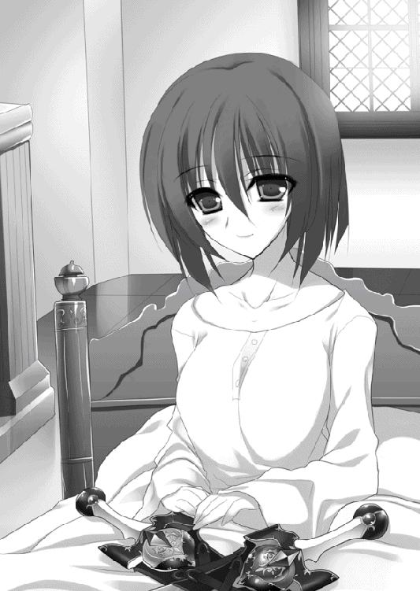
「好みは相変わらずみたいだな」
サーシャの服の好みは、黒か白だ。黒一色、あるいは上下とも白の装いをした彼女の姿を、エレンは何度か見たことがあった。当人に言わせると気分次第らしいが、エレンの見るかぎりでは戦場に立つときは黒、そうでないときは白の割合が高い。
「寝ているときは白い方が落ち着くだろうって部下が用意してくれてね。ありがたく着させてもらっている」
サーシャは椅子を勧め、エレンとリムはベッドのそばに並んで座る。二人の戦姫の邪魔をしないよう、リムは椅子に腰を下ろしたあと、無言で一礼をするだけに留めた。
「話したいことは山ほどあるが、重要なものからいこう。この地に土足で踏みこんできた礼儀知らずについてだが――」
エレンの双眸が強い戦意を帯び、不敵な光を放つ。目の前の親友に害をなす者を許すつもりはないが、詳しい事情を含めてサーシャから聞いておかねばならない。
サーシャはすぐには答えなかった。ためらったというよりも、エレンがわずかでも落ち着くのを待ったという風情でゆっくりと口を開く。
「エリザヴェータだ」
その名前を耳にした瞬間、エレンの表情に怒気がみなぎった。椅子から腰を浮かせかけた紅玉の双眸の戦姫を、横からリムがそっと手でおさえる。
「エレオノーラ様。アレクサンドラ様のお話はまだ終わっていません」
淡々とした声音が、かえって激発寸前の主をなだめようという心情を伝えた。エレンは白銀の髪を揺らして座り直す。
「やはり、か」
「知っていたの？」
軽く目を瞠るサーシャに、エレンは首を横に振ると、無愛想な表情で重い息を吐いた。
「このレグニーツァに近い戦姫の公国は二つ。私の治めるライトメリッツと、やつの治めるルヴーシュだ。あとは消去法だな。ソフィーはジスタートに戻ってくるまでいっしょだった。リュドミラがここまで来るには私の領内を通過しなければならん」
右手を開き、エレンは戦姫の名を挙げながら指折り数えていく。
「オルガは自分の公国を出て行方知れずと聞くし、ヴァレンティナとおまえは公国も離れていれば、接点もない。ならば、エリザヴェータだろうと思った」
口の端を吊り上げてエレンは得意げな笑みを浮かべてみせる。
サーシャには言わないが、実はもうひとつエレンにはそう考える理由があった。
――エリザヴェータはテナルディエともガヌロンとも親交があるらしいが......。
たとえば、自分をジスタートへ帰還させるために、どちらかがエリザヴェータを動かしたという可能性はないだろうか。
他の戦姫ならば動かないか、義理を欠かないていどの動きは見せるというところだろう。
――だが、エリザヴェータは......あの『異彩虹瞳』なら、私に打撃を与えられるというだけの理由でやりかねん。
しかし、そんな内心の思索は微塵も顔に出さず、エレンはサーシャに尋ねた。
「やつとて、何の口実もなく兵を向けたりはしないだろう。何と言ってきたんだ？」
サーシャはかすかな苦笑を浮かべてリムにそっと視線を向ける。リムは申し訳ないという意思を込めてうなずきを返した。仕方のないことかもしれないが、すでにエレンの頭の中ではサーシャが正しく、エリザヴェータが悪ということになっている。
「エレン。冷静になって聞いてほしい」
そう前置きをして、暖炉の火を眺めながらサーシャは説明をはじめた。
「――夏の半ばのことだ。僕とエリザヴェータは協力して、沿岸の海賊討伐を行った」
サーシャの治めるレグニーツァと、エリザヴェータの治めるルヴーシュはともにジスタート王国の北西にあり、海に面している。
こういう場合は二人の連携が肝要で、海賊退治に乗り出したのがどちらか一方のみだった場合、海賊は動かなかった方に逃げだし、潜伏して機会を待つ。完全に掃討するためには協力するのが当然だった。
「海賊退治そのものは滞りなくすんだ。僕も彼女もけっこう悩まされていたからね。僕はこんな身体だから現場に足を運ぶことはできなかったけれど......」
問題が起きたのは事後処理の段階になってからだった。
「彼女は苦情を述べてきた。僕の軍が、ことさらに海賊をエリザヴェータの軍の方へ誘導して、彼女の軍により負担を強いたと言ってきたんだ」
「それは事実なのか？」
「部下たちは、もちろんそんなふうにはしていないと言っている。ただ、報告書を見るかぎりではどちらとも言えない」
サーシャは虚空に指を伸ばして、おおまかな地形と軍の動きを描く。エレンとリムはそれぞれ難しい顔になった。二人とも海賊討伐の経験はないが、戦場の流れや兵たちの動きについてはよくわかっている。
だからこそ、どちらとも言えないというサーシャの言葉に納得し、エリザヴェータの主張を否定することはできなかった。
「この海賊討伐については、事前に彼女にここに来てもらい、話しあって契約書を作ったんだ。だけど、僕も彼女もこの事態は想定していなかった」
「だが、こちらに悪意があったという明白な証拠はないのだろう。他人事のような言い方になってしまうが、戦場ではこうした流れは珍しいことではない」
「うん。僕も悪意がないことは言ったよ。だけど、彼女は納得しなかった」
「他に何か、揉め事になるようなことはなかったのですか？ 戦利品の分配とか......」
そう尋ねたのはリムだ。軍勢を率いて攻めてくるのだから、もっと他に理由があると考えたのだ。しかし、サーシャは首を横に振る。
「調べ直したけれど、他には何も出てこない。彼女もそれ以外のことは言い立ててこないしね。夏の終わりごろに僕は調子を崩して、それからは手紙でやりとりしていたんだけど、秋の半ばでそれが途絶えた」
そして、エリザヴェータは兵を率いてきたというのだった。
「気の短い、などというものではないな」
だからあの女は嫌いなんだ、と言外に含ませてエレンはしかめっ面で腕を組む。
「こういう事情だから、彼女の言うこともわからないではない。僕としては穏便にすませたかったんだけど」
サーシャは沈痛な表情でエレンに答えると、膝の上の双剣にそっと手を置いた。
「僕が動ければよかったんだけどね。あるいは――」
翳りのある微笑を浮かべてその鞘、鍔、柄を愛おしそうに撫でる。
「この子たちが、僕に戦姫の資格なしと判断して離れてくれれば。そうすれば、君を頼らずにすんだはずなんだ。でも、この子たちは僕から離れなくてね......」
手のかかる子供にかけるような台詞に応えたのか、煌炎の鍔が一瞬光を放つ。見た目は変わっていないが、熱を発して主を暖めようとしているのだと、エレンにはわかった。
「気に入られて、よかったじゃないか」
励ますようにそう言うと、エレンの腰にある銀閃が音もなく風を起こして白銀の髪をそよがせた。自分もそうした気持ちでは負けていないというところだろう。エレンは長剣の鞘を軽く叩くことで己の竜具に感謝の意を伝えた。
「いま、エリザヴェータはどこにいる？」
「いちばん新しい報告では、ボロスローだね。彼女は北東の国境に近い城砦を一つ落としたあと、それ以上内側へ踏みこんでくるようなことはなく、城砦にたてこもりもせずに後退したらしいんだ。村や町が襲われたという報告も、いまのところはない」
思案顔でのサーシャの説明に、エレンとリムは不審そうな視線をかわした。
「......やつは何を考えているんだ？」
たとえばレグニーツァ兵たちが奮戦してエリザヴェータ軍を押し返した、などということはありえない。圧倒的な兵力差やよほどの策略でもないかぎり、戦姫のいる軍を、戦姫のいない軍が止められるはずがないのだ。
「ごくふつうに考えるなら、奪った城砦を取引材料にして交渉というところでしょうが」
「だが、サーシャの話からすると、城砦が落ちたあともやつからの使者はないのだろう。だとすれば、癇癪を起こしたこどもが腹いせに暴れているようにしか見えん」
リムの意見に、エレンが腕を組んで疑問を呈する。その言い方に苦笑を浮かべたサーシャは、白銀の髪の親友を諭すように優しく語りかけた。
「エレンがそう思うのはわかるよ。でも、エリザヴェータは十七という年齢を考えても、かなりしっかりした考えを持つ子だ。君の評価は低いけれどね」
「つまり、他に何か狙いがあると？」
「僕にはわからないけど、もしかしたら」
憂いを帯びた彼女の表情を見て、エレンは覇気と戦意に満ちた顔で笑いかける。
「安心しろ、サーシャ。私が来た以上は問題ない。あの馬鹿をレグニーツァから叩きだして、もう一度おまえと話しあうようにさせてやる」
戦の原因、理由は、突き詰めていくと単純なものが多い。国境をまたぐ山の土砂崩れを理由に戦が起こることもあれば、凍結した川の使用をめぐって血を流すこともある。
まれに学者などがそんな理由で、などと呆れたり嘆いたりするが、そこで生きる民にとっては、死活問題なのだ。たった一粒の麦、一滴の水をめぐって争いが起きることを、エレンは実体験で知っている。
エリザヴェータにも彼女なりの理由があるのだろうが、いずれにせよ、兵をもって攻められたからには兵を率いて撃退するべきだった。
「すまないけれど、頼む」
おそらくはエレンに心配をかけないようにという配慮からだろう、サーシャも微笑を浮かべてうなずく。それから話題を変えた。
「ところで、最近は何やらおもしろいことをやっているそうじゃないか。ソフィーの手紙で知ったけど、ブリューヌに行っていたんだって？」
「ああ。ちょっと頼りない男がいてな。見捨てるのもしのびないので手を貸している」
「時々手を貸してもらっている気もしますが」
すかさずリムが横やりを入れ、エレンは子供のように頬をふくらませて拗ねてみせた。
「他人事のように言うが、おまえだってあいつに助けられたことはあっただろう。――胸を吸われたりとか」
最後の台詞に、リムは反射的に自分の胸をおさえ、顔を真っ赤にして白銀の髪の主を睨みつけた。
「な......いきなり何をおっしゃるんですか」
大声を出さなかったのは、病人の前にいるという自制心を最大限に働かせたためだ。
「事実だろう？ 思えば、あれからティグルに対するおまえの態度がそうとうに軟化した気がするぞ」
「そ、そんなことは......。私なりに、こう、あの方の努力を、評価したというだけで」
「暇を見つけては熱心にいろいろと教えているものな。半端な愛情ではできないだろう」
「......エレオノーラ様が、あの方のせめて半分でいいから、熱意をもって私の講義を聞いてくださったらと思うことはありますね。ちょっと目を離すと、すぐに城下へお忍びに行かれてしまいますから」
容赦のない反撃が来て、エレンはとっさに言葉に詰まる。サーシャが苦笑を浮かべた。
「エレンのさぼり癖は相変わらずなのかな」
「視察は重要な政務だ」
何ら恥じることはない、と言いたげな顔で堂々とエレンは即答する。
「どの店の串焼きがよりおいしいのか、とかパンには苺のジャムと葡萄のジャムと蜂蜜のどれがもっとも合うか、などを調べることが重要だと本当にお考えですか？」
「僕は葡萄かな」
「私は蜂蜜だな。ティグル――ああ、私が手を貸してやっているやつだが、あいつは苺がいいと言った。それもパンやら何やらを用意して山に入り、採ったばかりのものを潰して蜂蜜と混ぜて塗ると、苺の酸味にまろやかな――」
「お二人とも、脱線しています」
エレンの話を興味深そうに聞くサーシャを見て、リムは呆れた顔で止めに入る。エレンは少し不満そうだったが、話したいことの多さに比べて時間はあまりないのだ。白銀の髪をかくと、ティグルとの出会いからいままでのことを順序よく語った。
ただ、黒弓のことだけは伏せた。病身の彼女に、思いわずらわせたくなかったのだ。
「......エレン。よく兵を貸す気になったね」
まずそのことに、サーシャは呆れた顔になる。
「テナルディエ公の軍を追い払いつつ、ブリューヌの状況を知る。最初はそれだけのつもりだったのだがな。いろいろあって、こんな状態だ」
「ブリューヌの状況を知るのは重要だけれど......そんなに気に入ったの？ その子」
「会えばわかるが、おもしろいやつだ。おまえも会って話をすれば、きっと気に入る」
エレンはどこか誇らしげに、嬉しそうに答えた。リムもその言葉にうなずき、淡々とした口調で、辛辣さの中に好意をにじませた返答をする。
「欠点は少なくないですし、こちらが呆れることも多々あります。ですが、手を貸さなければと思わせてくれる方です。仕方ないか、という部分はあるにせよ」
「そうなんだ。おもしろそうなひとだね、会ってみたいな」
エレンの話と二人の評価とで、サーシャはティグルに興味を抱いたようだった。
「ブリューヌでの戦いも、春までには終わる。終わらせる。そうしたらティグルを連れてこよう。おまえになら、貸してもいい。楽しいぞ」
自慢の玩具を語るような口調でエレンは胸を張る。言葉の端には、同時に親友の快癒を願い、励まそうという心遣いがあった。
「そうだね......。僕ももう少し、がんばってみようかな」
サーシャが微笑んだとき、外から扉を叩く音が聞こえた。刻限がきたのだ。次にエレンがこの黒髪の戦姫と会うのは、エリザヴェータを討つために公宮を出るときだろう。
「......本当に、時間というのは短いときにはとことん短く感じるものだな」
サーシャの差しだした手を、エレンは力を入れすぎないようにそっと握る。煌炎の上に置いていたからだろう、彼女の手はほのかな熱を帯びていた。手の薄さと指の細さがエレンには気になったが、生命力がまだ息づいているのを漠然と感じとって内心で安堵する。
「おかげで楽しい一時を過ごせたよ。ありがとう、エレン。リムも」
「そう言ってもらえると助かる。それではゆっくり休んでくれ」
エレンは彼女の手をゆっくりと離した。リムも丁寧に会釈をする。
そうして、二人はサーシャの部屋をあとにした。
エレンとリムが部屋を辞したあと、サーシャは膝の上の竜具に視線を落とす。常に熱を帯びている双剣を。
「......おまえも諦めが悪いね」
苦みを多分に含んだ微笑を浮かべて、サーシャは双剣の柄を握る。まっすぐ前へと腕を伸ばした。筋力の衰えた腕に、二本の刃は重い。
『討鬼の双刃』と呼ばれるこの双剣を、かつての自分は自在に操った。その気になれば一晩でも二晩でも振るい続けられるとさえ思っていた。
だが、いまは四半刻すらもたない。
「おまえが僕を早々に見限ってくれれば......」
愚痴がこぼれた。エレンは、レグニーツァが襲われているから助けに来たのではない。自分が動けないから駆けつけてくれたのだ。
竜具は、彼女の弱音を聞き流さなかった。柄を通してサーシャの手に熱が伝わる。むろん火傷するようなものではないが、それがこの竜具の叱咤であり、激励であることをサーシャは確かに感じ取った。
「わかったよ。僕もこの若さで死ぬつもりはないしね。身体を休めて、もうすこし足掻いてみよう」
左右の剣を再び膝の上に置く。竜具は黒髪の主を応援するかのように、再度、ほのかな熱を伝えたのだった。
◎
ブリューヌ王国南東のアニエスでは『銀の流星軍』にとっても、そして侵略者であるムオジネル軍にとっても奇妙な事態が起きていた。
突如現れたジスタート軍四千騎が『銀の流星軍』に合流したのだ。彼らはそのまま街道から動かず、ムオジネル軍としては一度後退せざるを得なかった。
三万に、敗残兵一万余りを加えた計四万のムオジネル軍。その総指揮官をクレイシュ＝シャヒーン＝バラミールという。ムオジネル国王の弟で『赤髭』という異名を持つ。
「......ジスタート軍だと？」
金と銀をあしらった豪奢な天幕で、今年三十七歳になる王弟はその報告を受けた。
中肉中背ながら引き締まった体躯を派手な色彩の絹服に包み、頭部を包む絹布には虹色の巨大な羽根を差している。目は大きくくぼんで、鼻と耳は長い。異名の由来である赤髭は顎を覆い、胸元まで伸びていた。
悪相とまではいわないが、奇相ではある。これが奇抜な服装とあいまって、王族というよりは道化師に見えた。
だが、彼は外見通りの男ではなく、王族の指揮官にありがちな『お飾り』でもない。兵からは信頼を、側近たちからは尊敬と畏怖と、いくばくかの不安を寄せられていた。
「ブリューヌの何とかいう小貴族に、ジスタート軍が味方をしているという話は聞いていたが、ふむ......意外だったな」
クレイシュの考えるその種の味方とは、友軍であると言い張りながら、まるで盗賊のように略奪に勤しんで国内を荒らしてまわり、面倒な戦は極力回避して、奪った金品で懐が重くなってきたら引きあげる。そういう類のものだったからだ。
ムオジネル軍が攻めてきたら、暗黙の了解の内に略奪する地域がかぶらないようにし、それぞれ欲望のままにブリューヌ王国を蹂躙するだけと思っていたのだ。それが、ムオジネルにとってもジスタートにとっても実りの多い道のはずである。
――だが、カシムの率いていた先遣隊はブリューヌとジスタートの混成軍に敗れた。
そして、今日現れた四千騎のジスタート軍。その奇妙な動きからして増援かどうかはわからないが、彼らはアニエスに立ちはだかってこちらの侵攻を阻む姿勢を見せている。
「数千もの兵を投入する。それだけの理由が、ジスタートにはあるのか。ブリューヌから得られる富を独占するつもりか、それとも多大な貸しを作るのか......」
考えていても明確な答えは出ない。クレイシュはひとまず行軍を止め、ジスタート軍に使者を派遣することにした。
「我らの目的はブリューヌ南部であり、その一帯を束ねているネメタクムだ。あなたがたが他の地域を狙っているのであれば、おたがいに不要な干渉は慎み、もしも同じ獲物を欲しているのであれば、馬乳酒でも酌みかわしながら話しあおうではないか」
そういった内容の手紙を使者に持たせると、クレイシュは赤髭を撫でながら言った。
「もし戦姫とやらが評判通り美しかったら協力を持ちかけよ。たいしたことがなければ手ぶらで帰ってきていいぞ、はっはは」
楽しそうに笑っているのは王弟だけで、側近も兵も真面目そのものだ。王族の冗談というのは、ひとつ対応を誤れば容易に死に直結する。クレイシュは寛容な人柄で知られているが、万が一にでも機嫌を損ねてしまったらと思うと、迂闊に反応はできない。
ともかく、使者はこうしてジスタート軍の幕営に向かったのだった。
一方『銀の流星軍』である。ジスタート軍のおかげで絶体絶命の状況からは免れたものの、それは一時的なものでしかないというのは誰もがわかっていた。
現在、両軍の間に設置された幕舎で、それぞれの総指揮官が椅子に座り、テーブルを挟んで向かいあっている。すなわち、ティグルとリュドミラだ。
リュドミラが用意したこの幕舎は羊の毛皮を張りあわせた布を二重に使ったもので、アニエスの街道に満ちている冬の大気などまったく入ってこない。敷かれている絨毯も上質のもので、地面の冷気を完全に遮断している。
ティグルは暖かさに、むしろ痒みすら覚えたほどだった。
幕舎の中には、リュドミラの淹れる紅茶の音だけが静かに響いている。
「――どうぞ」
ことりと、湯気を立ち昇らせた白磁のカップがティグルの前に置かれた。その紅茶に手をつける前に、ティグルはリュドミラに深々と頭を下げる。
「まずは、助けてくれてありがとう」
「――減点一」
リュドミラのそっけない声がティグルの頭部に浴びせられた。不思議そうな顔で彼女を見たティグルに、青い髪と瞳を持つ戦姫は憮然とした顔で冷たい言葉を投げかける。
「とくに親しいわけでもない私があなたを助けに来たと......そう言ったわけでもないのに早合点して礼を述べるのは失敗よ。相手によってはすかさず見返りを要求されるわ」
「親しいわけでもない、って......でも、こうして紅茶を淹れてくれたじゃないか」
「話しあいの場では、気に入らない相手であっても淹れることがあるわよ。――破談にするとき、相手の顔に中身をぶちまけるためにね。あなたはどうかしら、ティグルヴルムド＝ヴォルン。ああ、爵位は取り上げられたのだったわね、ティグルヴルムド卿？」
言い直しながら、リュドミラは自分の前に置かれた白磁のカップに紅茶を注いだ。酷薄にさえ見える笑みを浮かべて、自分の持つカップをゆっくりと傾けてみせる。ティグルは笑みを返したが、自分でもわかるほどに引きつっていた。
「......勉強になったよ。ありがとう」
「あなたに講義をするためにこの場を設けたわけじゃないわ」
礼の言葉まではねつけられて、ティグルは困惑を隠せない顔でくすんだ赤い髪をかく。
「じゃあ聞くけど......君はどうしてここに現れたんだ？ それも四千もの騎兵を連れて」
「どうしてだと思う？」
はぐらかされた。あきらかにリュドミラはこの状況を楽しんでいる。ティグルは腕を組んで首をひねり、必死になって考えた。
――このアニエスは、ブリューヌとムオジネル、ジスタートの三国の国境が接している。そこにムオジネルの大軍が現れたから、警戒して様子を見にきたと考えるのが妥当だ。
だが、それだけならばリュドミラはもっと少ない数で現れ、離れたところからムオジネル軍がブリューヌへ向かうのを見届けるべきなのだ。
四千という数はかえってムオジネルを刺激するだけだし、こうまであからさまにティグルに接触しては、敵意を疑ってくれというようなものである。
結局、自分を助けてくれる以外の答えが出てこない。
――でも、それはいくらなんでも都合がよすぎる......。
答えられずにいると、リュドミラは紅茶に口をつけながら上目遣いにティグルを見た。
「――欲しい？」
唐突な質問に、今度はうろたえさせられる。身体が熱くなり、ティグルの顔は赤く染まった。その反応を意地悪く楽しんでから、リュドミラはゆっくりと付け加える。
「私と、私の配下の四千を、欲しいかどうか聞いてるのよ」
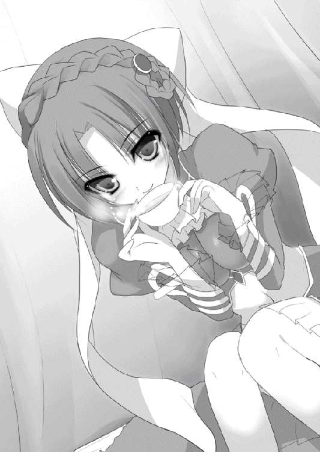
「欲しい」
「減点二」
なりふりかまわず即答したら、即座に駄目出しをくらった。
「状況はわかるけど、がっつきすぎ。相手に足元を見られるわよ。――言っておくけど、私は馬鹿とは組みたくないの」
ティグルの額に汗がにじむ。幕舎の暖かな空気と熱い紅茶のせいばかりではない。
減点二。つまり、ティグルがこれ以上失点を重ねたら、リュドミラは愛想を尽かして部下とともに砂岩連なる断崖の向こうへ引きあげるということだろう。
そうなったらムオジネル軍が進軍を再開し『銀の流星軍』と二千の民は卵を馬車で轢き潰すかのごとく粉砕されてしまう。
かといって、ティグルは巧言令色とは縁のない人生を送ってきた男だ。とっさに上手い言葉が出てくるはずもない。
結局、頭を下げること以外の行動を思いつかなかった。カップをテーブルに置き、居住まいを正してからあらためて頭を下げる。
「助けてくれ」
それから、ムオジネル軍が攻めてきたこと、エレンがここにいないこと、自分たちの行動と現在の状況を説明する。
「いまの俺に、出せる対価はない。ただ、テナルディエ公爵との戦いが終わるまで待ってもらえるなら、報酬は払えるかもしれない」
「あなた自身は？」
「......俺の所有権は、エレンにある」
ためらったが、ティグルはそのことも正直に答えた。頭を垂れる。額に浮かんでいた汗がテーブルの上に落ちた。結局、彼女を満足させられるような言葉は出てこなかった。
舌に苦味が走り、頭痛を覚える。自責の念がティグルの全身を苛んだ。
「――顔を上げなさいな」
どこか気の抜けたような声が、上から響いた。最初、ティグルはそれが自分に向けられたものだとは思わなかった。のろのろと身体を起こすと、しかたないと言いたげな苦笑を浮かべたリュドミラが自分を見ている。
「馬鹿正直と馬鹿じゃ、どちらがよりましなのかしらね。成長はしていないようだけど、酷くなっているわけでもない、か。もともとあなたの誠実さを買ったのだし、おまけで及第点にしてあげるわ」
「......手を貸してくれる、のか？」
ティグルはまだ事態をよく呑みこめなかった。リュドミラは笑顔でうなずく。
「実際、聞くまでもなく、あなたの状況はだいたいわかっていたもの。てきとうな対価をでっちあげて下手な駆け引きを持ちだしてきたら、帰らせてもらうつもりだったけど」
再び、ティグルの背中を汗が伝った。そんなことを言う彼女の笑顔は楽しそうでとても魅力的なのだが、まともに見ることができない。
「安心するのは早いわよ。まだ交渉は終わっていない。こちらから、対価を提示させてもらうというだけ」
空になったカップに新たな紅茶を注ぎながら、リュドミラは静かに言った。ティグルも腕で汗をぬぐって彼女の言葉を待つ。
「タトラ山は覚えてる？」
ティグルはうなずいた。エレンの行動を牽制するように動いていたリュドミラに対処するべく、自分とエレンが彼女と戦った地だ。山頂に堅固な城砦があり、ティグルとエレンは苦戦を強いられたものだった。
「あなたたちが城砦の裏手にまわりこんで、城門を破壊したことは？」
ぎくりとした。リュドミラが何を要求するつもりなのか、ティグルにはわかったような気がしたのだ。だが、ここはうなずくしかない。
ティグルの反応を見たリュドミラは妖艶な笑みを浮かべて、そうと呟いた。幼さの残る顔にその笑みは不思議なほどよく似合っており、尋常でない緊張をティグルに与える。
「その城門だけど、誰がどうやったのか、まあるくくり抜かれていたのよ。鉄板を三枚用意して、その間に樫の板を挟みこんだ城門がね。それも、ひとが楽々と通り抜けられる大きさの穴を開けられたの」
猫がネズミを確実に追い詰めていくかのようだった。ティグルというネズミは部屋の隅まで追いこまれ、逃げ場は完全にリュドミラという猫にふさがれてしまっている。
「あのときは何かと慌ただしくて、気づいたのはあなたたちが去ったあとだったわ。そのあと、城門を修復してから私は公宮に戻って調べたの。銀閃を用いてああいう真似ができるのかどうか。私の母も戦姫で、エレオノーラの先代の戦姫とはよく争ってたから、資料はたっぷりあったわ。城壁上の兵士からも話を聞いた」
ティグルの膝が意識せず震え、かたんと椅子が揺れた。
リュドミラの紡ぐ台詞は一言一言が強い呪力を持っているかのようで、ティグルは目に見えない縄が自分を縛り上げていくのを感じずにはいられなかった。
脳裏に、エレンの怒った顔が浮かぶ。弓のことを他の者に喋ったと知ったら彼女は間違いなく憤慨するだろう。まして、その相手がリュドミラとなれば。
「あなたの仕業ね？ エレオノーラに口止めされてる？」
「城門に穴が開けられたのは見たけど......」
言い逃れられるとは思えなかったが、それでもティグルは必死に抵抗を試みる。
「君の言ってることは半分くらいしか......。前にも話したけど、俺はブリューヌの辺境を治めていた、弓が少しばかり得意な田舎貴族だよ」
カップに残っていた紅茶を一気に飲み干して、ティグルは落ち着いた態度と口調でそう答えた。冗談として受け流そうと肩をすくめてみせる。
「――ティグルヴルムド卿」
リュドミラはにこりと笑って、空になったティグルのカップに新たな紅茶を注いだ。彼女の傍らに置かれている氷の槍――ラヴィアスから冷気が放たれる。それは空中を漂い、ティグルの頬から耳までをさっと撫でた。
エレンのアリファールが好意から吹きつけてくる風とはまるで違う、恫喝じみた凍気だった。ティグルがもう少し敏感だったならば、その冷気に、主の興味を惹く男への若干の嫉妬が混じっていることに気づいたかもしれない。
リュドミラはかわいらしく小首をかしげて、笑顔をそのままにとどめの一撃を告げる。
「以前、私はあなたの誠実さを買った。ぜひ今回も、あなたの誠実さを買わせていただきたいのだけど......いかがかしら？」
ティグルは敗北した。
ルーリックを呼んで、ティグルは黒弓を持ってこさせる。
「言っておきますが、ティグルヴルムド卿。オルミュッツの連中の手を借りるのに、頭を下げることなんてありません。ふんぞり返って、俺に協力する権利をやろう、と言ってのけるくらいがちょうどいいのです」
「それをやったとして、紅茶を顔にぶっかけられるのは俺なんだが」
ティグルの言葉の意味がわからないらしく、ルーリックは首をかしげた。ティグルはそれ以上何も言わずに黒弓を受け取る。
ルーリックの気持ちもわからないではない。エレンやリュドミラの話を総合するに、ライトメリッツとオルミュッツの対立は先代の戦姫か、それ以前から存在するものだ。
彼らの力を借りなければ現状を打破できないという状況は、ライトメリッツの騎士であるルーリックにしてみれば歯がゆいなどというものではないだろう。
彼に礼を言って幕舎に戻ると、ティグルは待っていたリュドミラに弓を見せた。
「洗練という言葉の対極にあるような弓ね」
それが青い髪と瞳の戦姫の第一声である。
「一応、俺の家の家宝なんだ。慎んでくれとはいわないが、もう少し言葉を選んでくれ」
一応などという言葉をつけたのは、ティル＝ナ＝ファのことが脳裏をよぎったからだ。自分の先祖は何というものを家宝にしてくれたのだろうか。
ティグルの言葉を無視して、リュドミラはしげしげと黒弓を観察する。彼女の竜具たる凍漣を近づけてみたりもした。
「どことなく不気味な感じはするけれど......何の変哲もない弓に見えるわね」
「俺もそう思ってたよ」
秋に、エレンの銀閃の力を借りて飛竜を撃ち抜くまでは。
ティグルはこの弓を用いた際に起きた出来事を、一つずつ丁寧に説明した。リュドミラは真剣な表情で聞き、時折気になったことを尋ねる。
エレンのことを考えると重苦しい後ろめたさと、それに数倍する申し訳なさがティグルを苛んだが、とにかくいま欲しいのは兵だ。覚悟を決めるしかない。
ティグルの表情からそれを察したのか、リュドミラはくすりと笑った。
「もしエレオノーラに見離されたら、私のところでしばらく生活させてあげるわ。まあ、そんなことにはならないだろうけど」
「......そうか？」
ティグルは不思議そうな目でリュドミラを見る。たしかにエレンならば許してくれると思うが、それをこの戦姫が言うのは意外だった。
「あなたの言うことが本当だとして。戦姫がもう一人いるようなものよ、これは。他の六人に対して圧倒的に優位に立てる。手離すくらいなら、他の戦姫が確保する前に始末するわね、私なら」
恐ろしいことを平然と言われ、ティグルは苦い表情で手にある黒弓を見つめる。
しかし、ティル＝ナ＝ファの神殿で見せられたあの不思議な光景や、自分がこの弓で撃ち抜いてきたものを考えると、仕方がないかという諦観の念も生まれた。
気を取り直して、ティグルはリュドミラに向き直る。
「俺が出せるものは、これで本当にすべてだ。協力してもらえるか？」
「足りないわね。エレオノーラの下を離れて私につきなさい。そうすれば協力してあげる」
「――俺がエレンに対して負っている借金も、すべて背負うのか？」
挑発的な口調で言ってみたが、リュドミラはおかしそうに笑った。
「そのていどで引き取れるならいいわよ。その代わり、私に忠誠を尽くしなさい」
金額も聞かずに平然と返され、ティグルは開いた口がふさがらなかった。リュドミラは出来の悪い弟の面倒を見る姉のような顔で、呆れ混じりの笑みを浮かべる。
「百人の兵を指揮する場合と、一万の兵を指揮する感覚は別のものよ。大軍を動かす場合は相応の感性を要求される。力についても同じこと。あなたの大事な家宝を使い続けるなら、その価値について一度しっかり考えなさい」
――この弓の価値......。
黒弓を見つめて、すぐにティグルは理解した。戦姫がもう一人いるようなものだとリュドミラが教えてくれたばかりなのに、まだ自分はわかっていなかったらしい。
「すまなかった。申し訳ないけど、さっきの言葉は訂正させてくれ」
「よろしい」
満足げにうなずくと、リュドミラは静かに椅子から立ち上がった。
「今回の件は、給金に経費、それからあなたへの貸しひとつということにしておいてあげるわ。あなたが死んだら、不履行とみなして帰る。死なないようにがんばりなさい」
――これから戦をするというのに、無茶な要求をするなあ......。
そう思ったものの、また別の考えも湧いてくる。死ななければいいのだ。戦場にあってそれは、ひどく難しいことだが、他の難題に比べればまだましなもののように思えた。
「あらためて――よろしく頼む」
ティグルも立ち上がり、リュドミラに手を差し出す。固く握手をかわしたのもほんのわずかで、二人はすぐ実戦的な話をはじめた。
二人だけの軍議を終えて、ティグルは幕舎を離れた。
気づかなかったが、かなり長い時間話しこんでいたらしい。日は断崖に隠れて西の空へ沈もうとしており、空には夜の気配が色濃く漂いはじめている。どちらの幕営にも、いくつもの篝火が灯されていた。
さきほどまで暖かい幕舎の中にいたからかやたらと寒く感じ、見上げると、白い月が徐々に銀色の輝きを帯びつつある。
ティグルは幕舎から十数歩ほど足を進め、ようやく緊張が解けて肩を落とし、溜息をついた。エレンと再会したときのことを考えると胃が痛い。
とはいえ、リュドミラが差し伸べてくれた手を振り払ったら、今度こそ兵も民もおしまいだ。そう思うことで自分を慰めるよりなかった。
『銀の流星軍』の幕営に戻ると、ティグルの姿を見つけてジェラールが駆け寄ってきた。
「どうでした？」
挨拶もなしに開口一番尋ねる。よほど気になっていたのだろう、表情に余裕がない。
「とにかく協力をとりつけることはできた」
そう答えるとジェラールは緊張を解いて、安堵の溜息をついた。それから珍妙な生き物を見るような目をティグルに向ける。
「しかし、あなたはいったい何者なんですか？」
「何者って......どういう意味だ？」
わけがわからず聞き返すと、ジェラールは今度は呆れたような溜息をつく。
「戦姫が、ジスタート王国で国王に次ぐ存在だというのは私でさえ知っています。エレオノーラ＝ヴィルターリアといい、あの青い髪の戦姫といい、どうしてあなたは彼女らの協力を得ることができるのですか？」
「人徳だな」
自分でも信じていないことをぬけぬけと言ってティグルは肩をすくめる。ジェラールはつまらない冗談を聞かされたという顔をしたが、追及しても無駄だとも悟ったらしい。あやかりたいものです、と皮肉っぽく返した。
「ところで俺が離れていた間、何かあったか？」
「ええ、まさしく」
ティグルに訊かれ、ジェラールはその質問を待っていたかのように大きくうなずく。
「ムオジネル軍と戦う前、あなたが偵察ついでに拾ってきた娘がいたでしょう」
「ああ、あの子か。どうした？ 目を覚ましたのか？」
ムオジネル兵に襲われていた、旅人と思しき娘のことだ。よほど衰弱していたのかこの数日、彼女はほとんど眠ったままだった。
とはいえ『銀の流星軍』もまた、ムオジネル軍の目をくらますために幕営を常に移動させていたので落ち着いて休める場所でもなかったのはたしかだ。
ティグルも多忙の合間を縫って一日に一度、様子を見に行くことぐらいしかできず、彼女についてはいまだに名前すらわかっていなかった。
「ええ。さきほどですが。それで、これも聞きたかったことなんですが、あなたがあの娘を助けたときはどのような状況でした？ 彼女は我々をひどく警戒しているというか、異常なほど怯えていまして......」
「怯える？」
「現在の損害は一皿分のスープに、私の親指とひとさし指の火傷、といったところです」
ティグルは考えこむように首をひねった。
「念のために聞くけど、兵の誰かが彼女に何かをした、なんてことはないだろうな」
考えたくないことだが、軍は当然ながら男だけの集団だ。しかも、ここ数日はとくに緊張を強いられる日々が続いている。たがの外れた者が出てきてもおかしくはない。
ティグルにとってありがたいことに、ジェラールは首を横に振った。
「彼女の看病をしている者は信頼できます。また、あなたが助け、時折様子を見にくるような娘とあっては兵たちも恐れ多くて近づきやしません。そんな余裕もありませんし」
実際に彼女を見てみれば、何かわかるかもしれない。とにかく会おうとティグルが歩きだすと、一歩分遅れてジェラールもついてきた。
まずティグルは輜重部隊へ足を運び、葡萄酒と、それから小さな籠にパンやチーズ、果物を詰めてもらった。
「スープはあるか？」
「冷めきってるんで少しばかり時間をもらえますかね。篝火で温めます」
「こんな状況で無理を言ってすまないが、多めに頼む」
「まあだいじょうぶでしょう。ムオジネル軍の食糧をほとんどちょうだいしたんで、多少は余裕がありますから」
ぞんざいな口調の調理担当の兵にティグルは礼を言うと、あとでスープを二人分持ってきてくれるようジェラールに頼んだ。
「とりあえず、俺ひとりであの子に会ってみる」
「お願いします。どう見ても旅人ですし、たいした話もないでしょうが、個人的にはスープ一皿分の収穫はほしいところです。敵の物資が手に入ったとはいえ、戦場では豆一粒さえ貴重なんですから」
真顔で言うジェラールに肩をすくめると、ティグルは食事の入った籠を抱え、彼女が休んでいる幕舎へと向かった。
幕舎の前には一人の兵士が寒そうに立っている。彼はティグルの姿を認めると、待ちかねたかのような顔になった。娘の看病をしていた兵だ。
「彼女の様子は？ 起きているのか？」
「ええ。何か怖いのかえらく我々を警戒してまして。刺激しないために外に出とります」
四十代半ば、小太りのその兵士は、白い息を吐き出しながら笑って腹を揺らした。
「手間をかけてすまないな。彼女の様子は俺が見るから、しばらく休んでくれ」
輜重部隊がスープを温めているはずだと教えると、その兵士は喜んで歩いていった。彼を見送り、ティグルは帷幕をくぐる。
幕舎の中には、金色の髪の少女が身体を起こして座っていた。一瞬顔を強張らせてこちらを睨みつけたが、ティグルだとわかると安心したように表情を緩める。
――助けたときのことを覚えているのかな。
薄明るいランプの灯りの下、自分と少女の他は誰もいない。置かれているものもせいぜい薬草を詰めた袋や煎じるための道具、水を張った桶と手拭ぐらいだ。
藁の上に毛皮を敷いたものに少女は寝ており、その上に厚手の毛布をかけていた。上等ではないが、戦場ではましな方だろう。
「食事を持ってきたんだが、食べられるか？」
笑顔で聞いてみると、少女はこくりとうなずいた。
噛みつかれることはなさそうだ、などと考えながらティグルは彼女のそばへと歩いていき、腰を下ろす。籠の中からザクロの実を取りだし、割って渡した。少女はザクロの実を受け取ったものの、どこか不思議そうな顔で手の中のそれを見つめている。
――食べたことないのか？
「そのままかぶりついていいんだ。内側にある赤い種は、汁が飛び出るから気をつけて」
説明し、彼女から実のひとかけらを受け取ってかじってみせる。それを見て、彼女はおずおずとザクロを口に運んだ。酸味に顔をしかめたものの、食べられないということはないらしく、小動物のように少しずつかじる。
彼女の顔にはまだ疲労の色があるが、それでもはじめて会ったときに比べればだいぶ回復しているように思えた。ぼんやりとしているが、碧い瞳には生命と意志の輝きがある。
「パンとチーズもある。葡萄酒も。ただ、無理はしないように少しずつ食べよう」
籠を少女の前に押しやると、彼女はザクロをかじりながらこくんとうなずいた。ジェラールの話から想像していたよりもはるかに素直な反応に、ティグルは内心で首をひねる。
――それに、はじめて見たときにも思ったけど、やっぱりどこかで見た覚えがある。
しかし、必死に記憶をさぐっても、どうにも明確な像が現れない。
「君の名前は？」
当たり障りのなさそうなところから聞いたつもりだったのだが、少女は両手で持ったザクロにかじりついたまま動きをぴたりと止め、碧い双眸でじっとティグルを見つめた。
ややあってザクロから口を離し、呟くような小さな声で答える。
「レ......レギン」
「レギンか。よろしくな。俺は――」
「――ティグルヴルムド＝ヴォルン」
名のるより早くレギンが言った。あのとき、ちゃんと聞いていたのかとティグルは感心しつつうなずいてみせる。
「そうだ。長いと思ったならティグルでいい」
「......ティグル」
反応がどこかたどたどしい。口をもごもごと動かして、レギンは反芻するようにティグルと何度か呟いている。まだ体調が万全ではないからだろうとティグルは考えた。
「ありがとうございます、ティグル」
ぺこりとレギンは頭を下げる。乱れ放題の短い金髪が揺れた。ようやくまともな会話ができたことにティグルは心の底からほっとして、レギンに笑いかける。
「少なくともここにいる間は、俺が君のことを守る。だから安心してくれ」
こくんとレギンはうなずくと、再びザクロをかじりはじめた。だが、その間もティグルから目を離そうとしない。何ら感情らしきものが浮かんでいない茫洋とした表情ながら、碧い瞳にはどこか母親を無心に頼る子供のような彩りがあり、ティグルを戸惑わせた。
――たしかにこの子を助けたのは俺だが......。
ただそれだけで、ここまで懐かれるものだろうか。ティグルの顔にも腕にも細かい傷があり、砂塵と垢にまみれ、服には血飛沫がこびりついて他の兵たちとそれほど違いがあるとは思えない。だが、それを気にするより他に聞くべきことがあった。
「レギン。君はどこから来たんだ？ このあたりに住んでいたのか？」
「......もっと遠くから来ました」
嘘だと決めつけられはしないが、彼女の表情といい、答えるまでのわずかな間といい、言葉を慎重に選んでいるのはあきらかだ。
「その、遠くからどうしてこんなところに？」
すると、レギンはうつむいて黙りこんでしまった。ティグルが静かに待っていると、しばらくしてごめんなさい、と呟いて彼女は力なく首を振る。
「いや、話したくないなら無理に話さなくてもいいよ。事情があるんだろうから」
慰めるように言うと、レギンはうつむいたまま上目遣いでティグルを見つめた。
「あなたは、どうしてここに？」
彼女の疑問を、軍隊がなぜアニエスにいるのか、という意味でティグルは受け取った。小さな子供に説明するように、単純化して説明する。
「ムオジネル――南東にある国だけど、そこが兵を率いて攻めてきたんだ。彼らを追い払うために、俺たちはここにいる」
「アルサス領主のあなたが？」
一瞬の沈黙。緊張が走り、二人はまったく同時に目を瞠ったが、レギンのそれは自分の失言に対するものであり、ティグルのそれは彼女の発言に対する驚きからだった。
レギンを問い詰める複数の言葉が喉元まで出かけたが、寸前でティグルはそれを呑みこむ。これまでの反応を考えても、彼女が素直に話すとは思えない。むしろ、よけいにかたくなな態度をとってしまうだろう。
「......君とは、前に会ったことがあるのかな。アルサスに立ち寄ったことがあるとか」
努力の末にティグルは笑顔を繕ってレギンに言った。その配慮が伝わったのか、レギンは目を丸く見開いたあと、儚げな微笑を浮かべる。
「全然違うところ。――あのときも、あなたは優しかった」
会ったことはあるらしい。だが、困ったことにティグルはさっぱり思いだせない。
「ヴォルン伯爵。スープをお持ちしました」
外からジェラールの声がした。レギンに笑いかけてティグルは立ち上がる。
「他に何かほしいものはあるか？ 何でも用意するとはいえないけど」
尋ねると、レギンはいくばくかの逡巡ののち、うつむいて恥じらうような声を発した。
「それでは......手桶一杯ほどの湯と、手拭をお願いします」
身体を拭きたいということか、とティグルは納得した。自分たちは平気だが、彼女は女の子だ。気持ちはわからないでもない。幕舎の外に顔と手を出すと、ジェラールは湯気を立ち昇らせているスープを二皿渡しながら、真面目くさった顔で訊いてきた。
「どうです？ 噛みつかれたり引っかかれたりしましたか？」
「警戒されちゃいるけど、長年飼われている犬なみにおとなしいぞ。おまえ、いきなり立ち入ったことを聞いたりしたんじゃないか？」
ティグルが意地悪い笑みを見せると、ジェラールは不思議そうに首をひねる。
「話どころではなかったんですが。――あるいは、あなたの才能かもしれませんね」
「才能？」
「美女をたらしこむ才能ですよ。人徳などよりもはるかに貴重と思いますが、揉め事だけは避けてください。英雄が女で身を滅ぼすことは珍しくありませんから」
「......お客人は手桶一杯の湯と手拭が欲しいとさ。駆け足で頼む」
言いたいことを言って逃げようとした褐色の髪の若者の背中に、ティグルはすかさず反撃を打ちこんだ。ジェラールは背を向けたまま右手を振る。了解したということらしい。
ティグルはレギンのそばまで戻ってくると、スープ皿の一つを彼女の前に置いた。
「熱いから気をつけて」
言って、自分もスープをすする。残りものだけあって具材はほとんどないが、この寒さでは温かいというだけでもありがたいし、肉の脂や煮崩れて溶けこんだ野菜がスープの風味を増していた。ほどよく塩のきいた旨味が、熱とともに全身へ行き渡る。
二口目を匙ですくいかけたところで、ティグルはレギンが自分のスープをじっと見つめていることに気がついた。
「どうしたんだ？」
「そちらのスープをいただけませんか？」
小さな声で、しかしはっきりと彼女は言った。さすがにティグルも困惑する。
彼女のスープに何か問題でもあったのかと思ったが、そもそもレギンは、自分のスープを手に取ってすらいない。
「すでに俺が一口飲んだものだぞ？」
かまわないというふうにレギンはうなずいた。仕方なく、ティグルは彼女のスープと自分のものを交換する。レギンはとくにためらう様子もなくスープをすすった。
「温かい......」
愛らしさを凝縮した、はにかむような笑顔になり、レギンは満足げな息を吐く。忙しく木匙を動かして、ティグルよりも早くスープを飲み終えてしまった。
「こんな温かいものを食べたのは、何年ぶりでしょうか」
――何年!?
ティグルは木匙を危うく取り落とすところだった。さきほどからこの少女はいちいち言動がおかしい。
このスープは特別なものではない。大雑把に切ったジャガイモと玉ねぎと塩漬けの豚肉をまとめて鍋に放りこみ、煮こんだだけのものだ。軍の食事としても、庶民の食事としてもありふれている。
――そんなに貧しかったのか。いや、でもその割には......。
声は小さくとも言葉遣いは丁寧で品がある。そんなティグルの驚愕に気づかず、レギンはこちらに顔を向けてにこりと笑った。
「ありがとうございます。昔を思いだしました」
それはよかった、とティグルは作り笑いで答える。それからしばらくは、二人はとくに会話らしい会話もせずパンやチーズを食べ、葡萄酒を飲んだ。
ティグルは彼女に何を聞けばよいのかわからなかったし、レギンも何度か碧い瞳を向けてはきたものの、積極的に話しかけてこなかった。籠の中がほとんど空になったところで二人は満足げな顔を見合わせて食事を終える。
「お湯を運んできましたよ」
外からつっけんどんな声がした。ジェラールだ。
ティグルはさきほどと同じように幕舎の外に顔と手だけを出し、手拭と木桶を受け取った。さすがに二度も運び役をさせられて、彼は不満そうである。
「何か進展はありましたか？」
ティグルは首を横に振った。彼女の言葉や態度には衝撃を受けたが、あれは進展といえるものではない。
「せめておとなしくするようには言っておいてください」
わかったと答えてジェラールを見送ると、ティグルはレギンの前に湯を満たした木桶と手拭を置いた。籠を持って幕舎を出ようとすると、彼女がティグルを呼び止める。
「あの......」
レギンは言いよどんだが、呼吸二つ分ほどの間を置いたあと、意を決したようにティグルを見上げた。
「お願いします。身体を拭くのを、手伝ってくれませんか」
「......何だって？」
ティグルは一瞬、自分が何かを聞き間違えたのだと思った。だが、レギンは羞恥で顔を赤く染め、声をさきほどより小さいものにしながらも同じ台詞を述べる。
「その......全身を拭いてほしいとまでは言いません。たとえば、背中、とか......私の手の届かないところをお願いしたいのです」
「それなら誰か他の者を......」
そこまで言いかけて、ティグルは現在の『銀の流星軍』にあてがまったくないことに気がついた。ムオジネル軍と戦うことだけを目的にそろえた男ばかりの集団である。
かといって、テリトアールからアニエスまでの移動や、断崖に身を潜めたこの数日を考えると、ティッタを連れてこなかった自分の選択は正しい。妹のような、あの健気な少女を過酷な状況に置くような真似を、ティグルはできるかぎり避けたかった。
リュドミラの軍にはもしかしたら、彼女の身のまわりの世話をする侍女が従軍しているかもしれないが、些細なことでも彼女に借りをつくるのは、怖い。
――そういえば、アニエスに住んでいた男女二千の民が......。
ようやくそこに思考が行き着いたとき、レギンは驚くほど強い口調で言った。
「あ、あなたでなければ......。あなたでないと嫌です」
頬をいっそう紅潮させ、意志の固さを示すように口を引き結んで、碧い双眸に強い感情を湛えて彼女はティグルを見上げている。
「どうして俺なんだ？」
訊いてもレギンは答えない。ティグルは困惑を覚えつつ、頭の片隅で考えてみた。
――この子は、恥ずかしがっていないわけじゃないんだよな......。
彼女はティグルのことを知っている。だから、恥ずかしいのを堪えてまで頼んでいる。さきほどのスープにしても、ティグルが口をつけたものだから信用したのだろう。
やがて、溜息をついてティグルは折れた。彼女に背を向ける。
「服を脱いで、背中を向けたら呼んでくれ」
ごめんなさいという小さな声がティグルの背中に当たった。
ほどなくしゅる、という衣擦れの音が耳に届く。妙なことになったと思う半面、自分に近い年齢の美しい少女が背後で服を脱いでいるという状況にティグルは緊張を隠せなかった。周りは静かで、他の音が一切しないというのも熱情を煽りたてる。
「お願いします......」
恥じらいを含んだ、震える声が聞こえて、ティグルは彼女を振り返った。
ランプの灯りに照らされた、肉づきの薄い、白い背中がそこにある。抱き上げたときの印象通りの、華奢な体格だった。肩も、わずかに覗く尻も小さい。
美しさと艶めかしさにおもわず唾を飲むと、その音が聞こえたらしいレギンは首筋まで赤くして、ぎゅっと身を縮こませた。レギンの反応で我に返ったティグルは、慎重な足取りで彼女に歩み寄り、座りこむ。
どうもここ最近、女性の裸体を幾度か間近で目にしてしまっているが、何度見ても落ち着かない。いつか見たエレンの裸体が脳裏をよぎりかけ、ティグルは慌てて振り払った。
――変なことを考えるな。いまはレギンに集中しろ。
それにしても、せめて腰から下は何かで覆ってほしかった。だが、それを指摘するとおたがいに恥ずかしい思いをしそうなので、なるべく下を見ないように気をつける。
手拭を湯で絞り、そうっと彼女の肩にあてた。びくりとレギンは身体を震わせたが、続けてくださいと、か細い声で訴える。
力を入れすぎないよう気をつけながら、丁寧にティグルはレギンの背中をこすり、汚れを拭い去っていく。
いまの俺は間違いなく変な顔になっている、とティグルはどうでもいいことを思った。顔中が熱く火照り、鼻や頬の筋肉に妙な力が入っている。絶対に見られたくない顔だ。
手拭越しでも彼女の肌の柔らかさは充分に伝わり、心臓が暴れ、緊張と興奮が手を取り合って理性を突き崩そうとする。ティグルは左手を握りしめて必死に衝動に耐えたが、そのせいで一度加減を間違えた。切なげな、艶めいた吐息がレギンの口から漏れる。
ティグルは五つ数えるほどの時間、手を止めて彼女の背中から顔をそむけ、己の欲情を抑え込むのに全力を傾けねばならなかった。身体の一部が過剰な反応をしているのはもう諦めて放置する。どうせ外に出れば寒さで元に戻るのだ。
主に己との苦闘の末に、ティグルはどうにかレギンの背中を拭い終えた。
「......こんなものかな」
何でもないふうを装って言ったのは男の見栄である。
「その......も、もう少し下のあたりも、お願いします」
見栄は一瞬しかもたなかった。レギンの言葉が示すのは、ティグルがなるべく目を向けないようにしていた腰から下の位置だ。
自制心が効いているうちにと、言われるがままにティグルは手を動かし、レギンに二度ばかり甘やかな声を漏らさせたものの、どうにか作業を終える。
彼女の背中は痩せ気味ながらも女性特有の弾力を有していたが、腰から下はそれ以上に柔らかい感触をティグルの手に残した。
「......あとは、自分でできるな？」
言いながらティグルは手拭を木桶に引っかけて立ちあがり、彼女に背を向けていた。疲労感が全身にのしかかり、身体の熱を冷ますためにも一刻も早く立ち去りたい心境だ。
「ええ。ありがとうございました」
ほっとしたような口調での、感謝の言葉が返ってきた。ティグルもやっと終わってくれたという安堵感に包まれる。
幕舎の外へ出ようとしたとき、レギンの声が背中にぶつかった。
「ごめんなさい」
おもわずティグルは振り返りかけたが、肩越しに彼女の白い背中が見えたので慌てて幕舎を出る。それから食事の入った籠を置いてきてしまったことに気づいたが、放っておくことにした。
――どういう意味だ......？
幕舎を出る直前の、レギンの言葉を考える。身体を拭かせたことに対する謝罪ではないだろう。では、素性を何も話さないことについてだろうか。
――まあいいか。いずれ彼女の方から教えてくれるだろう。
投げやりにティグルは結論を出す。四万ものムオジネル軍やリュドミラのことなど、ただでさえ考えなければならないことが多すぎるのだ。
新たな厄介ごとを抱える前に、まず目の前の課題をかたづけなければならなかった。
◎
レグニーツァの公宮に一室を与えられたエレンとリムは、サーシャとの話が終わったあとはすぐに食事をすませ、早々に眠りについた。
二人が目を覚ましたのは、夜が明けるより一刻ほど早いころだ。公宮の外れにある神殿で休んでいる兵たちにも、起きるよう命じる。同時に数も確認した。
報告を受けたリムが、それを伝える。
「昨夜までに神殿にたどり着いた者は、一千三百ほどです」
「やはり全員とはいかないか......」
甲冑を用意させつつ軍装に着替えながら、エレンは難しい顔になった。サーシャの話では、エリザヴェータは四千ほどの兵を率いているという。
「サーシャは三千の兵を用立ててくれると言ったが......」
単純な兵力を比べればこちらがわずかに上というところだが、エレンとしては短期で決着をつけるためにももう少し兵が欲しかった。
「夜更けすぎに到着した者を含めれば、一千七百ほどにはなりますが」
「その者たちは休ませておけ。疲れきった兵を戦場に向かわせたところで犬死にするだけだ。動けるようになったら偵察か何かに使おう」
「かしこまりました。では、そのように」
リムが主に微笑で答えたそのとき、廊下に通じる扉が外から叩かれた。エレンより三つ年上の副官が応対に出ると、老いた従僕が立っている。
「どうかされましたか？」
無表情の中にも礼節をたもってリムが尋ねると、従僕も謹厳な態度を崩さず一礼した。
「恐れ入ります。この公宮に勤めている者で、ぜひともリムアリーシャ様にお声をかけさせていただきたいという者がおりまして。お忙しい身であることは承知しておりますが、何卒聞き届けていただけぬでしょうか」
従僕の言葉にリムは首をかしげた。この公宮を訪れたことははじめてではない。エレンとともに幾度か足を運んでいる。
その際、白銀の髪の主の助けに少しでもなればと、部隊長や侍従長を訪ねて軍務や政務について教えを乞うたこともあった。だから、この公宮でリムに知己と呼べる者がいないわけではないのだが。
――しかし、あの方々がこういう状況で私を呼びだしたりするでしょうか。
彼らは病身のサーシャを助け、このレグニーツァを支えている者たちだ。事態をわかっていないはずがない。
「リム、行ってこい」
訝しい顔をするリムの背中を明るい声で押したのはエレンだった。
「ここはサーシャの公宮だ。どういった用件かは知らんが、私やおまえを害するものであるはずがない。ただ、忙しいから手短にすませてもらうようにな」
エレンの表情には一切の陰りがなく、紅の双眸に宿る輝きは純粋にサーシャと、そしてリムを信頼しているものだった。確かにその通りだとリムは考え直し、従僕に向き直る。
「それでは、案内をお願いします」
客室を出たリムは従僕に先導されて、篝火が灯る夜明け前の回廊を歩く。何度か角を曲がったところであることに気がついた。
――ここは昨日通ったところですね。ということは......。
予想はまもなく現実のものとなり、リムはサーシャの部屋の前に案内されていた。
「――ここはアレクサンドラ様のお部屋では？」
「いかにも」
従僕は短い返事でリムの言葉を肯定し、一礼することで扉を開けるよう促した。
「わざわざ来てもらってすまないね」
昨日訪れたときと何一つ変わらない部屋の中。やはり昨日と同じように、サーシャが身体を起こしてこちらを見ていた。リムは一礼して中へと足を踏み入れ、彼女の前に立つ。
「アレクサンドラ様。どのようなご用件でしょうか」
自分だけを呼んだということは、エレンには聞かせたくない話なのだ。
――あるいは、エレオノーラ様もそれを察しておられたのかもしれませんが。
サーシャは一つうなずくと、生真面目すぎる表情でリムを見上げた。
「エレンを守ってあげてほしい」
リムは驚いて黒髪の戦姫をまじまじと見つめた。そんなことは言われるまでもない。エレンが戦姫になるより前から、リムは彼女とともにあり、守り、守られてきたのだ。それをサーシャが知らないはずはない。
リムはそうした感情の揺れを表に出さなかったが、サーシャは読み取ったらしい。彼女は静かな声音で続けた。
「君にいまさら言うことでもないのはわかっている。それでも、あらためてお願いしておきたかった。相手がエリザヴェータではね」
エレンとエリザヴェータの間には、因縁がある。
およそ一年前の秋のことだ。ジスタート王国内のとある村で、疫病が発生した。その村は王家の直轄地にあったのだが、エリザヴェータの治めるルヴーシュにも隣接していた。
彼女は疫病の拡大を防ぐため、村そのものを疫病で死んだ者たちごと焼き払い、疫病にかかっていない者たちについても疑いありとして、その一帯を隔離する形をとった。
そのとき、隔離された者たちの面倒を見たいとエレンが申し出たのだ。
「まだ私が戦姫になる前、その村で一時期暮らしていたことがある。私も彼らを助けたいのだ。手伝わせてもらえないか？ おまえに迷惑はかけないようにする」
しかし、エリザヴェータはエレンの頼みをはねのけた。
「この村は王家の直轄地。事情は理解したけれど、それでも戦姫が複数介入すべきではありませんわ。疫病でなければ――ルヴーシュに被害が及ばないものであれば、私だって関わらなかったもの。まして、戦姫であるいまのあなたには関係のないこと」
エリザヴェータの言葉は柔軟性に欠けるものではあったが間違ってはおらず、エレンは引き下がるしかなかった。
だが、隔離された者たちの大半は、その年の冬を越せなかった。
疫病からは逃れられても家族や知り合いを数多く失ったことや生まれ育った村を捨てたこと、外界との接触をほぼ閉ざされたことなどが心身ともに打撃を与えたのだろう。また村人同士でのいざこざも何度か発生したようだった。
春になったとき、ただでさえ少なくなっていた村人の数は半分以下になっており、彼らは村を立て直すことを諦めて離散した。他の村に受け入れてもらえた者もいたが、野盗や山賊に鞍替えした者も少なくない。そうしなければ生きられなかったのだろう。
このことを知ったエレンは、エリザヴェータを責めた。自分の申し出を断っておいてこの結果は何だと憤りたくなるのも、彼女の心情を考えれば仕方のないことではあった。だが、この結果に心を痛めたのは、エリザヴェータとて同様だったのだ。
彼女も決して手をこまねいていたわけではない。隔離した村人たちが冬を越せるよう資材と食糧、さらに医師の手配まで行い、村の再建についても援助すると彼らに伝えた。己の領内ではないにもかかわらずだ。
この一件でエレンとエリザヴェータの間には見えざる亀裂が走ったのだが、ほぼ同じ時期にその亀裂を深く押し広げる事件が起こった。
ライトメリッツの近くに領土を持つ、ロジオンという貴族が問題を起こしたのだ。
彼は、民が納めた税の何割かを着服して王国には虚偽の報告を行い、また領内の食い詰め者をひそかに組織して野盗集団をつくり、近隣の領土を襲わせたのである。
被害を受けた貴族たちはそろって国王に訴え、調査を命じられた戦姫ソフィーは数日でロジオンが首謀者であると見抜き、証拠まで揃えてみせた。
国王はロジオンの領土にもっとも近いエレンに討伐を命じたのだが、このとき自分に任せてほしいと進み出たのがエリザヴェータだった。
「ロジオンは私の父。私が説得してみせます。然るべき罰を受け、罪を償うようにと」
「――戦姫になったからには、父親など関係ないのではないか」
エレンはそう皮肉ったものの、エリザヴェータの願いを受け入れた。
ところが、ロジオンは話しあいに応じるどころかジスタートからの逃亡を図ったのだ。エレンが兵を率いて彼を追い、討ち果たして事件は解決した。
問題があったのはロジオンである。エレンは国王に命じられ、やるべきことをやっただけだ。エリザヴェータはそれをわかっていたが、胸中に激しい感情が渦巻くのを抑えることはできなかった。
その後、エリザヴェータはエレンに決闘を挑み――まるでかなわず、敗北した。
「――あの二つの出来事について、僕は、どちらが正しいとも間違っているともいえないと思っている。二人とも、やるべきことをやった。それだけだとね」
「アレクサンドラ様は、エレオノーラ様のお味方をしてくださると思っておりました」
リム自身は言うまでもなくエレンの味方だ。それに、疫病で滅んだ村にはリムも滞在していた。白銀の髪の主同様、エリザヴェータを責める気持ちはある。
「エレンが正しいと思ったときは、いつでも、どんな状況であっても味方するつもりでいるよ。あいにく、いまの僕では難しいけれど」
己の胸に手をあてて、サーシャは寂しげな表情を浮かべた。しかし、すぐに真面目な顔つきになってリムを見上げる。
「戦姫を止められるのは戦姫だけ。ただ、エリザヴェータと対峙したらエレンは虚心ではいられないと思う。エリザヴェータにまっすぐ向かっていくだろう。激しい感情はよい方向へ動くこともあるけど、悪い方向へ動くこともある」
リムはうなずいた。それに、二人の間にある深い確執とは別に、エレンがエリザヴェータに怒りを抱く理由が二つある。
一つは、親友であるサーシャの公国を蹂躙しているということ。
もう一つは、サーシャを助けるためにブリューヌから――ティグルのそばから離れるという決断をさせたことだ。
「それと、ティグルヴルムド＝ヴォルンだったね。彼のこと」
怪訝そうな顔をするリムに、サーシャは静かな口調で続けた。
「昨日の話で、エレンが彼を大切に想っていることがよくわかった。友情なのか好意なのかまでは判別できなかったけれど......。数か月前に戦場で会った他国の男性、にしてはずいぶんな気に入りようだね」
「アレクサンドラ様がそう思われるのもご無理はありません。私も、彼が捕虜としてライトメリッツにいたころは、生かしておくべきではないと考えておりました」
いまは違う。成り行きとはいえ彼の補佐を務め、言葉をかわし、その行動をそばで見続けた。ティグルという人間の為人を知り、惹かれた。
だから、自信を持ってリムは言葉を続けた。
「ですが――ティグルヴルムド卿は、エレオノーラ様の信頼を得るにふさわしい器量を持ち、短い期間の内にそれを示し続けてきたのです」
リムが口を閉じると、室内に沈黙が訪れる。サーシャの気遣わしげな表情は変わらず、彼女を安心させることができなかったかという不安と後悔がリムの胸中をよぎった。
「エレンは、だいじょうぶかな？ 彼のもとへ急いで帰らなければと、焦らずにいられるだろうか」
「それは......」
サーシャの問いかけに対し、とっさにリムは答えられなかった。テナルディエ公爵の治めるネメタクムまであと数日の距離に居座り、しかもグレアスト軍、ナヴァール騎士団を立て続けに撃退してその武威を見せつけたのだ。何も起こらないはずがない。
このとき、まだリムも、そしてエレンもムオジネル軍の侵攻は知らない。だが、他国の侵略の可能性については想定し、一刻も早く戻らねばとも考えていた。
「一年前、エレンは彼女に勝った。でも、怒りに焦りが加わればどうなるかわからない。だから、彼女が傭兵だったころからずうっとそばにいる君に頼んでおきたかった」
どうかエレンを守ってあげてほしい。
サーシャはもう一度そう言い、粛然としてリムは頭を垂れた。
「非才なる身の全力をもって」
この身に代えてでも、と言いたかったが、すんでのところでリムはそれを抑えた。自分が暗殺者の毒に倒れたときのことは記憶に新しい。自分が死ねば、エレンを悲しませてしまう。それはやはり避けたかった。
「ひとまずの別れになるな」
リムが戻ってくるのを待って、エレンは彼女を伴いサーシャのところへ行った。
「昨日も話したが、私は他に助けてやらねばならないやつがいる。エリザヴェータをこの地から叩きだしたら、そのままそちらへ向かうつもりだ」
エレンの後ろで、リムは無表情で立っている。さきほど会ったことなどおくびにも出さない。それはサーシャも同様で、差し出されたエレンの手をそっと握った。
「エレン、一つ頼みがある」
親友の手を握ったままエレンが首をかしげると、サーシャは静かな声音で言った。
「もし迷うようなことがあったら、僕やレグニーツァにこだわらないで。君のやるべきことを優先してほしい。ここに来るのでさえ時間がかかっているんだから」
ティグルのことかとエレンは察し、彼女を元気づけるよう力強く笑ってみせた。
「おまえは朗報を待って寝ていろ。エリザヴェータは私がしっかり叩きだしておく」
そして夜明けとほぼ同時。東の空を明るく照らしはじめた白い陽光を背に、エレンとリムは四千数百の兵を率いて公宮を発った。まだ空は暗く、吐く息は白く、大気は冷たい。
ありがたいことに雪は降っておらず、公宮の周辺は除雪作業が滞りなく行われて楽に進むことができる。だが、自分たちが向かうボロスローの地面は雪に覆われているだろう。
「リム。ボロスローでの戦いについてだが」
隣で馬を進める副官に、エレンは厳しい表情で話しかけた。
「私はライトメリッツから連れてきた者たちにサーシャの兵二千を加えた数で、正面からエリザヴェータにあたる。おまえはサーシャの兵一千を率いてやつの側面か背後を衝け」
「エレオノーラ様......！」
おもわずリムは金色の髪を振り乱して大声をあげそうになる。自分はエレンを守ると約束したばかりだ。それなのに、これではそばにいることすらできなくなってしまう。
気色ばむ反応を見せたリムを、エレンはむしろ不思議そうな目で見た。
「おかしいか？ ボロスローに流れる川は、この時期は完全に凍結しているらしい。とすれば、近くに丘があるだけの平原ということだ。それに、サーシャの兵の士気も高い」
肩越しに振り返ってみれば、レグニーツァの兵たちは誰もが黙々と歩みを進めながら、その顔には尋常でない闘志を秘めている。
自分たちの住む地を襲われたのだ。それも、主が病身だというのに。卑劣なるルヴーシュの兵どもをことごとく叩き潰してくれる、という彼らの意思が、無言の叫びとなって聞こえてくるかのようだった。
「ああいう連中は真っ向勝負をさせた方がいい。エリザヴェータの相手は私以外に務まらないし、別働隊の指揮を任せられるのがおまえぐらいしかいない。妥当な策だと思うが」
リムは反論できずに歯噛みする。兵力はこちらが上だが、正面からのぶつかり合いで圧倒できるほどには多くない。策として正しいのだ。
三つ数えるほどの時間、リムは迷った。もっと時間があればじっくり考えただろうが、主の訝しむ視線がそれを許さない。ためらいつつも口にした。
「エレオノーラ様は......怒りや焦りを抱いておられませんか」
サーシャが心配していたことは、伏せる。まるで自分が考えたことのように言うのは気の進まないことだったが、わざわざ自分を呼びだした彼女の配慮が無になってしまう。エレンは一瞬驚いたような顔をしたものの、すぐに穏やかな笑みを浮かべた。
「確かに私は怒っている。後ろにいる兵たちと同じように。それに、ティグルのことを案じてもいる。だが、それで考えを曇らせたり、動きを鈍らせたりはしない」
それでもリムは許容できないとばかりにエレンから目を離さない。エレンは顔をしかめて渋々といった口調で訊いた。
「では、どうすればよいというのだ？」
「私の部隊が敵を奇襲するまで防御に徹することが条件です。大きな声では言えませんが......アレクサンドラ様の兵が暴走しないよう、しっかり抑える意味もあります」
士気の高すぎる兵たちが指揮官の命令を無視して猛り狂い、冷静な敵に打ち崩されたという例は枚挙に暇がない。
「心配性だな、リムは」
なおも気遣う表情のリムに、エレンは紅玉の瞳を煌めかせて笑いかけた。
「だが、一理ある。おまえを心配させないためにも、今回はそうしよう。ただし――」
微笑を、冗談と真剣さを混淆させたものに変えてエレンは続ける。
「急げよ？ やつに別働隊の存在が気づかれると厄介だからな」
本来の策としては、エリザヴェータにそれを悟らせないためにエレンは積極的に攻勢に出る必要がある。兵の構成についても、エレンがライトメリッツとレグニーツァの兵をまとめて統率しているのはそのためだった。
「微力を尽くします。エレオノーラ様もお気をつけて」
リムにとって、これが精一杯の言葉だった。
次第に雪が深くなってくる。雲行きも怪しくなり、粉雪が舞い落ちてきた。
彼女らがボロスローに到着したのは、翌日の昼直前のころだった。
◎
一人の少女が、馬のたてがみに背を預けるようにして、寝そべっている。
手には、馬上で用いる漆黒の短鞭。それを虚空に向かってかざしながら、彼女はぼんやりと自分に落ちては溶けて消える雪を眺めていた。馬が騎手によく馴れているとはいえ、優れたバランス感覚だ。
太陽は中天にだいぶ近づいているはずだが、空は雪雲のヴェールに覆われている。
ふと、彼女は左目をつぶって金色の右目だけで空を見上げる。かと思うと、今度は右目をつぶって碧い左目だけで見た。
何かの拍子にそうして片目だけでものを見るのは、物心つく前からの彼女の癖だ。
――瞳の色が違っても、見える景色は変わらない。
そんなことは、幼いときからわかっている。それでも、いつか変化が訪れるのではと心のどこかで期待している。
『異彩虹瞳』。この少女――エリザヴェータ＝フォミナのような、左右で異なる色の瞳を持つ者をジスタートではそう呼ぶ。ただし、それに対する解釈は地域ごとにばらばらだ。
彼女が生まれ育った地域では不吉なものとして扱われていたし、戦姫として統治しているルヴーシュでは吉兆として尊ばれている。
エリザヴェータは十七歳。鮮やかな赤い髪は腰まで届き、身にまとっているのは紫を基調として布地を幾枚も重ね、フリルやレースをふんだんに用いたドレスだ。豊かな胸と細い腰を強調し、派手ではあるが決して下品ではない作りだった。
しかし、彼女を見る者の視線は、まずその特異な双眸に向けられる。紅の髪でも、瞳より目立つように作らせたはずの華美なドレスでもなく。
近づいてくる馬蹄の音が、エリザヴェータを我に返らせた。彼女はむくりと身体を起こす。見ると、側近を務める騎士がこちらへ向かってくるところだった。
年齢は三十代半ば、エリザヴェータが戦姫になるより前から騎士としてルヴーシュで務めている男だ。髭がないために若く見える顔には、労苦をにじませる皺が刻まれている。
「戦姫様、偵察隊より報告です。南の方角に三千ほどの騎影を発見したと」
「軍旗は？」
紅の髪をかきあげてエリザヴェータは問う。予想していたのだろう、騎士は即答した。
「二つあります。黄地に朱色と黄金の刃が斜めに交差したものと、黒地に銀の剣を描いたものとです」
その報告を耳にした瞬間、エリザヴェータのあでやかな唇の両端が吊りあがり、凄絶な笑みを描く。一つめはサーシャのものだが、これはどうでもいい。彼女にとってはもうひとつの軍旗こそが重要だった。
――来たわね、エレン......！
「ご苦労でした。それでは、手はず通りの配置についてちょうだい。くれぐれも、戦姫を見かけたら戦おうなどと考えずに後退すること。私が引き受けますわ」
「ですが......もし相手が二人いたら、どうなさるおつもりです。アレクサンドラ様が病身をおして現れる可能性も」
「無用の心配ね。もしアレクサンドラが望んだとしても、エレオノーラが許しませんわ」
紅の髪の戦姫は明快なほどに断言する。彼女は馬から下りると、足元に置いていた鞍を拾い上げて雪を払い落とした。
ゆるやかな起伏がどこまでも続くボロスロー平原は、一面の雪に覆われている。決して深くはないが、ただ歩くていどで地面が露出するほどでもない。風がないのは、ここにとどまっている四千のルヴーシュ兵にとってはありがたいことだった。
「海賊討伐から今日まで、あなたたちには苦労をかけましたわね」
鞍を馬の背に置きながら、エリザヴェータは騎士にねぎらいの言葉をかける。彼女の倍以上の時間を生きている騎士は首を横に振った。
「あなたが戦姫としてルヴーシュにおいでになられてから三年。口はばったいことを申しあげますが、戦姫様が民のため、公国を富ませるためにお力を尽くされてきたことは誰もが存じております」
ありがとうとだけ答えて、エリザヴェータは騎乗する。ドレスにはさまざまな工夫がほどこされており、裾をまくったり横乗りにならずに、彼女は鞍にまたがることができた。
二騎は雪を踏みながら、本陣へと馬を進めていった。
エレン率いるレグニーツァ、ライトメリッツ連合軍と、エリザヴェータ率いるルヴーシュ軍とが対峙したのは昼過ぎのことだ。
両軍あわせて七千の兵がボロスローの野に展開し、二人の戦姫はそれぞれの軍の先頭に立って強烈な視線をぶつけ合う。
「そのように整然と並んでいるということは――」
先に口を開いたのはエレンだ。
「我々がここに来るのを知っていたのだな？ よくも逃げなかったものだ」
「それはもちろん、あなたに会いたかったからですわ、エレン」
エレンの怒気をはらんだ鋭い声を、エリザヴェータは優しげな笑みを浮かべて受け流してみせた。口調はあきらかに馬鹿にしたものだが、言葉そのものは嘘ではない。そうでなければ、こんなところからはさっさと立ち去っている。
「......貴様に、私をそう呼ぶことを許可した覚えはない」
エレンの声が雪さえ凍てつかせるほどの冷気を帯びて一段と低くなった。
「私のこともリーザと呼んでくれてかまいませんわよ、エレン」
エリザヴェータは手に持った短鞭をくるくる振りまわして楽しげに応じる。
――許せ、リム。
紅の髪の戦姫の挑発に、エレンはあえて乗ることにした。心の中でリムに謝罪する。
挑発に乗ったと思わせておけば、リムの率いる別働隊の存在をより隠せるだろう。それに、レグニーツァの兵たちの忍耐も、決壊が間近に迫っていた。
腰の長剣に手をかける。エレンを励ますかのように、あるいはせきたてるかのようにアリファールが風をそよがせた。
「一度だけ機会をやる。――いますぐ馬を下りて雪の中に這いつくばり、許しを請え。私ではなく、レグニーツァの民にだ」
「お断りしますわ」
「ならば――くたばれ」
腰の長剣を抜き放ち、振りかざし、振り下ろす。刃の先端は、まっすぐ紅の髪の戦姫へ。
「突撃！」
およそ七千人分の鬨の声が、灰色の空に響き渡った。馬蹄の轟きが大地を揺るがし、雪を蹴散らす。舞い散る雪は人間たちに触れるよりも早く彼らの熱で蒸発した。
正面からの激突となれば、数の多いエリザヴェータの軍が有利に思われる。
だが、戦意はレグニーツァの兵たちが圧倒的に高い。自分たちの公国を蹂躙されたという恨みを、彼らは武器にこめて敵に叩きつけた。
ルヴーシュの兵たちも肩を寄せ合って盾を並べ、その隙間から槍で突きこんで必死に応戦する。冷気に曇っていた刃は熱と血を浴びてたちまちの内に赤く染まり、鈍く輝いた。
飛び交う矢は甲冑に弾かれ、あるいは肉体に突き刺さって不吉な音を兵たちの耳に絶えず送りこむ。怒りにまかせて振るった戦斧が敵の兜を頭蓋ごと叩き割り、まっすぐ突きだされた剣が相手の腹部を貫き、臓腑をえぐりだす。
ここにあるのは、阿鼻叫喚に包まれたこの世の地獄だった。わずか半刻前の、雪と静寂に包まれた幻想的な銀世界を思いだすことは、もはや誰にとっても不可能だろう。
その中で先頭に立ってぶつかりあったのが、エレンとエリザヴェータだった。
「――大気ごと薙ぎ払え！」
馬を走らせて距離を詰め、エレンは一切の躊躇なく竜技を放つ。長剣から放たれた巨大な風の刃は、雪を吹き飛ばし、凍てついた大地を削りながらエリザヴェータに迫った。
エリザヴェータもまたためらうことなく己の馬を捨てた。鐙から足を離し、鞍を蹴って高く飛翔する。衝撃波と見えざる刃を帯びた小さな嵐は、馬を直撃した。ぱっと血風が吹き上がる。悲鳴をあげることすらできず、馬は骨までずたずたに引き裂かれて砕け散った。
その上空で、エリザヴェータはドレスの裾をふわりと広げながら、短鞭をかかげる。
刹那、漆黒の鞭が金色の光を帯びた。それは大気を弾きながら蛇のようにのたうち、曲がりくねる。エリザヴェータがエレンを狙って振り下ろしたとき、彼女の手にあるものは長さが四十チェート（約四メートル）はあるだろう長大な雷光の鞭と化していた。
その尋常ならざる破壊力を、エレンはよく知っている。『異彩虹瞳』ではない、戦姫としてのエリザヴェータの異名である『雷渦の閃姫』にふさわしい光景だった。
己の操る風でそらすことはできない。やむなく馬を捨てて地面へ跳躍、雪をまとわりつかせながら転がった。音に近い速さで光の鞭が大気を引き裂き、鋭い衝撃音を響かせる。
一転して立ちあがったとき、エレンの視界に飛びこんできたものは太い首を切断されて倒れる馬の死体だった。
「あまり抵抗すると、痛くなってしまうわよ、エレン？」
雪の中に軽やかに降り立ったエリザヴェータが、手首をひねって鞭で地面を叩く。それに応えるかのように、光の鞭が無数の小さな火花を大気に青く散らした。
「私も、この雷渦も手加減はとても苦手なんですから」
それがエリザヴェータの持つ竜具の名。
雷渦ヴァリツァイフ。『砕禍の閃霆』とも呼ばれる雷撃を操る鞭だ。
「その言葉、そっくり返してやる」
エレンが強気に言い返したそのとき、ひとりのレグニーツァ兵が怒声をあげてエリザヴェータの背後から襲いかかった。彼にしてみればエリザヴェータは敵の総指揮官だ。しかも、彼女はエレンに注意を向けて、無防備な背中を見せている。
しかし、彼の突きだした槍がエリザヴェータに届くことはなかった。『異彩虹瞳』の戦姫は彼に背を向けたまま軽く手首を返したのだ。
光の鞭が地面を跳ね、その先端が槍の柄を粉砕する。間髪を入れず、鞭は空中を舞うようにのたうって兵士の手首に巻きついた。
血と泥にまみれた雪原の一隅に、凄惨な光景が現れた。鞭から放たれた雷撃が、その兵士を撃ったのだ。大気の薄膜を何重にも破裂させたような破壊音とともに、人間の耐久力をはるかに超えた熱と光と衝撃が兵士を蹂躙し、容赦なく焼き尽くす。
苦痛は一瞬であったに違いない。絶命がほぼ一瞬だったのだから。
躯となって倒れた兵士を振り返りもせず、エリザヴェータは慎重にエレンとの間合いをはかる。一方、エレンは無造作に距離を詰めたかと思うと、腰を低くして地面を蹴った。
「――風影」
呟きと同時に風がエレンの身体にまとわりつく。白銀の髪をなびかせ、雪の上であるにもかかわらずエレンはおそるべき速さで駆けた。エリザヴェータの顔から笑みが消え、彼女は色の異なる目を瞠る。とっさに光の鞭を繰りだしたが、エレンには当たらなかった。
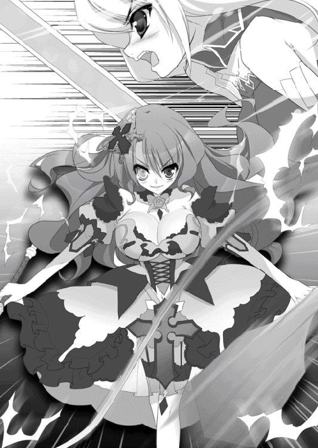
鞭の軌道を読んだ、とは言い難い。エレンの動きは最少どころかひどく大雑把なものだった。ただ圧倒的な速さだけで雷渦をかいくぐって、肉迫してみせたのだ。
「そんないいかげんな動きで......！ 鋼鞭！」
歯噛みしながらも、エリザヴェータは急いで雷渦を変形させる。植物の蔓のように踊りくねっていた光の塊は半分以下の長さとなり、まっすぐな棒状の武器へと変化した。
直後に、激突。硬質の音を響かせて、白銀の暴風と金色の閃光が激しく噛みあう。風が巻き上げた氷の粒子を、雷の熱が瞬く間に蒸発させる。二人の周囲からは雪が消え去って地面が露出したが、それすらも剣戟の余波で引き裂かれた。
エレンはそのまま力で押し切ろうとせず、さまざまな角度から嵐のように攻めたてた。上段から斬りつけ、下段からすくいあげ、瞬きする間すら置かずに薙ぎ、叩き、払う。
隙を見せれば、エリザヴェータの周囲に漂っている指先ほどの稲妻がすかさず牙をむくだろう。雷撃を放つ余裕すらない状態にまで、彼女を追いこまなければならなかった。
何合目かの衝突の瞬間、エレンの身体はすさまじい衝撃によって吹き飛ばされた。
とっさに空中で姿勢を整え、無事に着地することには成功したが、長剣を握りしめる両手には痺れが伝わっている。
――何だ、いまのは？
斬撃を、鋼の鞭で弾き返されたのだと理解するのに一つ数えるだけの時間が必要だった。そして、その際に雷撃の余波を浴びたらしい。エレンの頬や腕に、火傷にも似た赤い痕が走っている。
フリルのついたスカートをひるがえし、雷渦を再び鞭状に変えてエリザヴェータが地面を蹴る。エレンは迫りくる彼女を迎え撃とうとして、直前で考えを変えた。
エリザヴェータが腕を振るうたびに雷光の鞭は無軌道に乱れ狂い、大地を割り、大気を裂いてエレンへと襲いかかる。エレンは鞭の軌道を読むことを、すぐにあきらめた。
紅い髪の戦姫がほんの少し手首をひねるだけで鞭はその動きを大きく変え、エレンの死角から凝縮された雷撃が飛んでくるのだ。とても読めるものではない。
矢継ぎ早に繰りだされるエリザヴェータの猛攻を受け止め、あるいは受け流す。
反撃どころか、近づくことすらできない。鞭の風を切る音が、大気を走る電流が、エレンの目と耳を圧迫した。
強烈な一撃を長剣で受け止め、エレンの身体はその姿勢をたもったままふわりと宙を舞う。十数歩分ほど後方に着地した。エリザヴェータの鞭に吹き飛ばされたように見せて、風をまとって距離をとったのだ。
エレンもエリザヴェータも額に汗をにじませ、息を弾ませていた。だが、エリザヴェータの表情には余裕が感じられるのに対し、エレンの顔には危機感が色濃く浮かんでいる。
一度でも直撃を受ければ、ただではすまない。鞭そのものの打撃に耐えきれても、雷撃が続けてエレンの身体を襲う。
――アリファールの風の守りでも、あの雷撃を完璧に防ぐことはできん。
身体に衝撃が走って、痺れさせられ、動けなくなる。敗北は必至だ。
「さきほどまでの勢いはどうしたのかしら？ 反撃の一つもないと興醒めですわ」
「呆れていたんだ。貴様の攻めがあまりにも粗雑なのでな」
『雷渦の閃姫』に皮肉を返して『銀閃の風姫』は彼女を睨みつける。エリザヴェータの猛打に耐え続けたエレンの手の痺れは、さきほどよりもひどくなっていた。危険を冒してでも跳躍して後ろへと下がったのは、そのためだ。
「そういえば、貴様にまだ聞いていないことがあったな」
エレンの言葉に、エリザヴェータは足を止める。このとき、二人は戦場からだいぶ離れていた。
「誰の差し金でこんな真似をやらかした？ テナルディエか？ ガヌロンか？」
「......何のことかしら」
ごまかそうとして、エリザヴェータは失敗した。反応が遅れ、声まで上ずった。
「私をジスタートへ戻させるために、このレグニーツァを襲ったのだろう」
「何を言いたいのかわからないけれど......私は国王陛下のお言葉にのっとって、ジスタートの国益のために動いているだけですわ」
しらを切り通すことにしたらしい、肩をすくめてエリザヴェータは苦笑を浮かべてみせた。そうしながらも、エレンに対する警戒は緩めない。一瞬でも気を抜けば、この白銀の髪の戦姫は風をまとって鋭く斬りこんでくることをわかっているのだ。
「他国の悪党に使嗾されている身が、ジスタートの国益か。笑わせるな」
「あなたに言われたくありませんわね。噂では、うだつのあがらない捕虜にずいぶんといれこんでいるとか。あなたらしいといえば、らしいけれど」
口元を手でおさえながらのエリザヴェータの嫌味を、エレンは鼻で笑い飛ばした。
「その言いぐさには腹が立たないでもないが......何も知らぬ者の言葉と思えば、いっそ哀れみさえ感じるな」
それに対してエリザヴェータが言葉を返す前に、エレンは話題を変えた。
「もうひとつ、聞くことがある」
長剣をかまえ直して、エレンはまっすぐエリザヴェータに突きつける。
「――いまのろくでもない怪力はどこで手に入れた？」
エレンを吹き飛ばした強烈きわまる一撃。エレンが彼女と決闘を行ったのは一年前だが、そのときからは考えられない剛力だった。
「どこでも何も......自分を必死に鍛えあげた結果ですわ」
艶然として微笑むエリザヴェータに、エレンは馬鹿にするように口の端を吊り上げる。
「そんな戯言で私をごまかせるとでも思ったか？ これでも六歳のころから剣を握り続けているんだ、こっちは」
「――知ってるわ」
ふだんの口調とは異なる彼女のその呟きは、エレンに対するものにしては小さすぎた。エリザヴェータの色の異なる双眸に、過去を懐かしむ穏やかな感情がよぎる。だが、それは一瞬のことでしかない。そのことに気づかず、エレンは続けた。
「私は一年前のおまえの力量を知っている。どうやっても、たった一年でそのような力が身につくはずがない。なにより鍛えあげたという割には攻め方が何一つ変わっていない。だから接近を簡単に許すし、私を捉えきれない」
雷渦を握りしめるエリザヴェータの手が、震えた。金と碧の目に激しい感情が揺れる。
「でも......それでも、私が力であなたを上回っているのは事実......ですわ」
「だからどうした」
エリザヴェータと対照的なほどに、エレンは冷静そのものだった。アリファールに風をまとわせながら一歩、あるいは半歩と足を進めて慎重に隙をうかがう。
一方、エリザヴェータも雷渦を長鞭状へと変化させて手首を返した。雷をまとった光の鞭は、彼女を守るように幾重にも取り巻いて鮮やかな螺旋を描く。それは、近づく者をことごとく撃ち倒す雷の蛇だ。
「勝ち誇りたければ――勝ってみせろ」
エレンのかかげた銀閃が、周囲の大気を巻きとっていく。雪の欠片を含んだ冷気をもまとめて取り込み、氷の粒子が光を反射して彼女の身体は燦然と輝いた。頭上で唸り声をあげる嵐の刃は、さきほど放ったものよりもはるかに大きい。
エリザヴェータの雷渦もまた、主の意志に応えて眩いばかりの光を放つ。膨れ上がった雷撃が周囲の大気に悲鳴をあげさせ、無数の放電が生じた。
彼女が振り上げた瞬間、鞭は柄の先から九本にわかたれる。常人なら直視した瞬間に目を灼かれるであろう地上の雷光が、そこにあった。
「――大気ごと薙ぎ払え！」
「――天地撃ち崩す灼砕の爪！」
咆哮をあげて猛々しく襲いかかる九つの稲妻と、触れるものことごとくを引きちぎる嵐の刃が衝突した。『砕禍の閃霆』の生みだした雷撃は嵐の渦を食い破らんとし『降魔の斬輝』の織りあげた風の大鉈は雷火を吹き散らさんとせめぎ合う。
竜具をかまえて対峙する二人にも、その衝撃の余燼は届いていた。
一瞬ごとにエレンの身体には赤い火傷の痕が走り、電撃が弾けて激痛と痺れを与える。エリザヴェータのまとうドレスも暴風によってぼろぼろに引きちぎられ、白い肌にはかまいたちにも似た裂傷が刻まれていった。
轟音が大地を揺るがす。おたがいを喰いあい、削りあっていた風と雷が、同時に消滅したのだ。あとに残ったのはすり鉢状にえぐられた地面で、その中央には風が小さな渦を巻き、雷の残り火であるかのような微量の電撃が大気の中で弾けている。
空高く舞い上がった雪と泥の粒が、音もなく二人に降りかかる。それを払いもせず、エレンが不敵な笑みを浮かべて長剣をかまえた。全身にみみず腫れのような火傷を負いながらも、苦痛の声一つ漏らさない。
エリザヴェータもまた、身体中に負った裂傷を気にとめる様子もなく鞭を握り直した。
「ご......」
互角だったと言いかけて、エリザヴェータは言葉を呑みこむ。おたがいの竜技を繰り出す直前の位置からエレンは一歩も動いていないのに対し、彼女は二歩、後退していた。
――私の......。
戦場で新たな変化が起こったのはそのときだ。ルヴーシュ兵たちの左側面に現れたリムの部隊が、強烈な猛撃を加えたのである。喚声が湧き起こり、敵味方の兵が入り乱れて軍旗が激しくはためいた。
「――私の負けのようですわね」
その光景を遠くに眺めて、エリザヴェータは歪んだ笑みを浮かべる。半ばは虚勢だ。感情的な部分をおもわずさらけ出してしまったが、エレンに対して、己の弱い部分をエリザヴェータは見せたくなかった。
「まだおまえの首は落ちていないが」
エレンは銀閃をかざして一歩踏み出す。エリザヴェータは鞭をかまえるでもなく艶やかに微笑むと、用意していたらしい言葉をゆっくりと口から滑り出させた。
「あなたには急ぎの用事があるのではなくて？ エレン」
エレンの足がぴたりと止まる。目を丸く見開いた彼女の脳裏を、一人の若者の顔がよぎった。長剣をかまえたまま、エレンは紅玉の色の瞳に戦意と葛藤をにじませてエリザヴェータを睨みつける。その反応に、満足げな笑みを湛えて『異彩虹瞳』の戦姫は続けた。
「テナルディエ公爵もガヌロン公爵も、とうに兵を動かす準備はできていた。これまではおたがいに牽制しあっていただけ。でも――少なくともガヌロン公は、兵を動かすことを決めましたわ。誰に向けてかは知りませんけれど」
エレンは沈黙したまま動けない。ガヌロン公爵がティグルに向けて兵を進めることなどありえない、とそう断定できるだけの根拠を彼女は持っていなかった。また、テナルディエ公はティグルに息子を殺されている。ガヌロンと一時休戦して、ティグルに狙いを絞ってくることは充分にありうることだった。
「もうひとつ。ムオジネルがブリューヌへ攻めこんだそうですわ。何万という規模で」
一瞬、エレンの呼吸は止まった。
――ムオジネルが？
衝撃に、心臓の鼓動が激しさを増す。ティグルがどのように動くかはわからないが、巻きこまれないはずがない。位置を考えれば、最悪の場合テナルディエやガヌロンよりも先に、ムオジネル軍とぶつかる羽目になる。
「いま一刻を争うのは、私とあなたのどちらかしら。どうしても私の首がほしいというのなら続けてもいいけれど――私も、私の兵も一刻や二刻で倒されてはあげませんわ」
――そんな戯言に......！
エレンは歯を食いしばり、なおも戦意を奮い立たせようと試みたが、うまくいかなかった。強靭な鋼のようだった意志は、目の前の敵と遠くの味方とに引き裂かれつつある。
二人の力量差が一年前のままだったならば、エレンは迷わず彼女を打ち倒すことを選択しただろう。しかしいま、紅の髪の戦姫の技量はエレンとほぼ互角といってよい。
それでもエレンは雑念を払うように首を振ると、エリザヴェータを睨みつけた。
「いま貴様を討たねば、またいつ襲いかかってくるかわかったものではないだろう」
「それなら誓約書でもかわしましょうか？」
「......誓約書？」
「アレクサンドラへの城砦の返還......無償とはいきませんけれど。海賊討伐の件についての交渉再開。とりあえず一年ほどの不可侵条約――こんなところかしら？」
楽しげな笑みを浮かべて、これ以上戦いを続ける意思がないことを示すようにエリザヴェータは雷渦の形状を短鞭へと変える。くるくると振り回した。
エレンは困惑を露わに『異彩虹瞳』の戦姫を見つめる。
「貴様......本当に何が目的だ？」
「教えてあげることはできませんけれど、達成はしましたわ」
しばらくの間、二人はその場から動かなかった。エリザヴェータは武器を下ろして悠然とかまえていたが、実のところ態度ほどの余裕があったわけではない。このまま戦い続ければ、いずれ敗北を喫するという確信が、彼女にはあった。
一方でエレンも複雑な葛藤を抱えている。
ここでエリザヴェータを討てば、事態はより長引き、かつ面倒なものになってしまう。
さすがに王都へ説明に赴かねばならなくなるし、雷渦が見出した新たな戦姫が好戦的な人物だった場合、レグニーツァとライトメリッツを巻きこんだ内戦が勃発するかもしれない。ジスタートの歴史において、過去にそのような戦姫が現れたことは何度もあった。
「......さきほど貴様が言った条件に、一つ付け加えろ」
やがて、長剣を下ろしてエレンは言った。紅の双眸でエリザヴェータを見据えながら。
「何かしら？」
「詫びろ」
簡潔で率直な要求には、膨大な感情が封じこまれている。それを、鋭い声音からエリザヴェータは感じ取った。正確には知覚させられた。
「這いつくばれ、とまでは言わん。真摯に、誠実に、謝罪しろ」
「......承知しましたわ」
「もしも違えることがあれば――今度こそ潰す」
エレンがエリザヴェータの提案に乗ったのは、サーシャの言葉を思い出したからだった。
自分やレグニーツァにこだわるな、という彼女の台詞はこの事態を予期してのものではないだろう。だが、このまま戦いを続ければ、あの黒髪の戦姫は口には出さずともひそかに胸を痛めるだろうことを、エレンはわかっていた。
「それでは、私は行くぞ」
エレンは長剣を腰の鞘に収めると、彼女に背を向けた。いつのまにかだいぶ離れてしまっていた戦場へ足を進める。エリザヴェータは黙ってその背中を見つめていた。
ライトメリッツ、レグニーツァの連合軍とルヴーシュ軍は一進一退の攻防を繰り広げていたが、二人の戦姫が指揮に戻ると、呼吸を合わせて徐々に距離を置きはじめた。
エレン指揮下の軍はあるていどのところで立ち止まったのに対し、エリザヴェータの率いるルヴーシュ軍は逃げ散った兵を収容して陣形を再編成しながら、なおもさがっていく。
ボロスローから十ベルスタ（約十キロ）以上離れたことを確認してから、ルヴーシュ軍はようやく後退を止めた。
エリザヴェータは兵に休息をとらせ、負傷者の手当てを命じる。また、斥候も派遣した。自軍の死体を回収して埋葬し、遺品を遺族へ届けてやらねばならないからだ。
各部隊の指揮官を呼び集め、状況を報告させる。六百と数十という戦死者の数字を聞いて、彼女は色の異なる瞳を両方とも曇らせたが、口に出してはこう言った。
「ご苦労でした。あなたたちのおかげで、目的は達成できましたわ」
エリザヴェータの目的は、二つ。エレンをここまでおびきよせることと、彼女と戦って自分の力量を試すことにあった。前者に関してはエレンが指摘した通り、ガヌロンとテナルディエの依頼によるものであり、その二人から報酬を受け取って軍を動かしている。
もっとも、エレンが相手でなければ、彼女が軍を動かすことはなかっただろう。
また、サーシャにつけこむ隙があったことも幸いだった。
海賊討伐において、サーシャの部下はいくつかの失敗を犯した。エリザヴェータは寛容さでもってそれを許すこともできたが、しかける好機と捉えたのだった。領内の、貧しい村の者たちに、稼ぐ機会を与えるという理由もあった。
そして、二つめの目的。いまの自分が、エレンと戦えるかどうか。
――一年前はまったくかなわなかったことを思えば、あれに触れた甲斐はあった。
その名前を、思い浮かべる気にすらなれない存在。それに接触して、エリザヴェータは人間を超越しうる強大な力を手に入れたのだ。まだその力の一割ほども扱いきれていないが、それでも、膂力にかぎってはエレンを圧倒できた。
――それにしても、さすがはエレオノーラだわ......。
エリザヴェータ自身も迂闊だったとはいえ、力だけが強くなったことを正確に見抜かれた。そして、悔しいことではあるが、まだ彼女に及ばないということも認識させられた。
もっと強くならなければ。もっと、この力を使いこなせるようにならなければ。
――今後は、もっと慎重に動かなければ駄目ね。
指示を終えて指揮官たちを解散させると、エリザヴェータはふと空を見上げる。依然として白い空からは、やんでいた雪が再び降りはじめていた。
――はじめてエレオノーラに会ったのも、雪の日だった。
空から舞い散る白く冷たい花びらが、彼女の胸中に懐かしい過去をよぎらせる。
七年前、エリザヴェータは自分が貴族の落胤だとは知らず、田舎の寒村で日々を過ごし、エレンはその村に宿泊した傭兵団の下働きだった。
いつものように、色の異なる瞳のことで村の子供たちにいじめられていたエリザヴェータを、通りかかったエレンが助けたのが二人の出会いだった。
もっとも、エレンはそのことを覚えていないか、そのときの少女がエリザヴェータだとは気づいていないらしい。次に顔を合わせたのは二年前。おたがい戦姫となってだったが、エレンは自分に、はじめて会ったかのように接した。
仕方のないことだ。あのとき話した時間は短いものだったし、何より当時のエリザヴェータは右目を眼帯で隠していた。
彼女が両目とも隠さなくなったのは、戦姫としてルヴーシュの統治をはじめてからだ。
だが――エリザヴェータは七年前のあの日、エレンが自分に差し伸べた手と、紅玉の瞳の輝きを忘れたことはない。
「私は負けない......」
遠い日の記憶にひたっていたエリザヴェータは、自分の名を呼ぶ部下の声で我に返った。
「戦姫様。もしお疲れのようでしたら四半刻ほど行動を遅らせて......」
「いえ。だいじょうぶですわ」
エリザヴェータは紅い髪を揺らして首を横に振る。部下の報告を受け、新たに指示を出す。日が傾く前に、戦死者の埋葬を終えることができそうだった。
「......そういえば」
ふと、エリザヴェータはあることを思いついた。
「ティグルヴルムド＝ヴォルン、でしたわね。たしか」
自分と戦っていたときのエレンの葛藤を見るかぎり、政事や戦略の都合だけで協力しているとは思えない。
「ひとまず贈り物でもして、反応を見てみようかしら」
エリザヴェータの治めるルヴーシュは、テナルディエ公爵やガヌロン公爵と親交があるが、それは彼女より前の戦姫の政策によるものだ。エリザヴェータとしては、損ではないから、ていどの理由でそれを継承していたに過ぎない。
――テナルディエ公やガヌロン公が勝つと決まったわけではないし......。
ティグルが勝ったときのことを考えて、いまのうちにつながりを持っておくのは悪いことではないだろう。
「そう。私は、負けない」
今度は強い口調ではっきりと言って、エリザヴェータは色の異なる瞳で空を睨む。
彼女のために、そして彼女を支えてくれるルヴーシュの民のために、エリザヴェータは新たな策を考えはじめていた。
一方、ライトメリッツとレグニーツァの連合軍である。
エレンも敵手であるエリザヴェータ同様やらなければならないことは多かった。
一刻も早くブリューヌに急ぎたい気持ちはあったが、戦姫としてそれを放り出していくことは許されなかったし、エレン自身そんなつもりはない。兵の忠誠も、民の信望も、彼女が戦姫としての責務を果たせばこそのものだ。
ところが、ありがたいことに事後処理の大半はレグニーツァ軍が引き受けてくれた。
「エレオノーラ様をあまりこの地に引き留めるようなことになりますと、私どもが戦姫様からお叱りを受けてしまいます。どうぞ、安んじてブリューヌへ向かわれますよう」
事情を知っているレグニーツァ軍の指揮官はそう言ってエレンに一礼した。
「おまえたちの気遣い、ありがたく受け取ろう。サーシャによろしく伝えてくれ」
戦死者を埋葬し、怪我の大きな負傷者はあとからライトメリッツへ戻るよう命じて置いていく。そうして翌朝には、エレンはリムとともに一千余りの兵を率いてボロスローの地をあとにした。
早朝から降り続く雪に、街道の左右に広がる草原は白く覆われている。川は凍りついて道となり、遠くに見える針葉樹の森も、はるかかなたの山麓も雪の色に染まっていた。
「これからどうされますか、エレオノーラ様」
毛皮を二重に使った防寒具に身を包んだリムが、エレンの隣に馬を寄せる。正面を見据えながら、エレンは厳しい表情で答えた。
「必要なのは休息。欲しいのは情報だ。まずはライトメリッツまで急ぐぞ。それからムオジネルの動向をつかむ」
エリザヴェータがまったくの嘘を言ったとは思えないが、どこまで真実かも怪しい。
「本当にムオジネルが攻めてきている場合、ティグルがじっとしているとは思えん。あいつはそういうとき、無茶ばかりするからな......」
リムは同意を示して小さくうなずいた。
「あの方も、もうすこしご自分を大切になさればよろしいのですが......」
「だが、ティグルのそんなところをおまえは好きなのだろう？」
紅玉の色の瞳を横に向けて、エレンはからかうように笑う。内心を指摘されたリムはおもわず顔を赤く染めた。冷気が肌を突き刺しているにもかかわらず、頬が熱い。
しかし、彼女は顔をそむけて素直に認めようとはしなかった。
「べ、別に好きというわけでは......。いえ、その、評価しないというわけではむろんありませんが、なんというか美点でもあり、欠点でもあり......」
「わかったわかった。いまのうちに、ティグルにかける言葉でも考えておけ」
呆れたように笑う主を、唇をとがらせて拗ねた顔で見やって、リムは尋ねた。
「エレオノーラ様は、すでに考えておいでなのですか」
「私ほどの者になれば、相手の顔を見た瞬間に必要な言葉が出てくるものだ」
「考えておられないのですね」
胸をそらして威張ってみせるエレンに、リムは冷たい視線を投げかける。
「......百日かけて考えた長広舌に、その場で思いついた一言が勝ることもあるだろう」
エレンはきまり悪そうな顔で言い返したが、往生際の悪さはどうにも拭えなかった。
――だが、実際何を言ったものやら、という感じではあるな。
雪の降る空を見上げて、ぼんやりと考える。真っ先に『帰ったぞ』という言葉が浮かびかけて、慌ててそれを打ち消した。
――うん、それはおかしい。
ティグルのいるところが自分の居場所なのではない。自分が彼を迎えに行くのだから。
――戻ったぞ、あたりか？ ただいま、とか？ いや、これではあまり変わらん。どれを言ってもティグルの反応は......。
おかえり、といつものように呑気そうな、穏やかな笑みで返すのだろう。公宮に勤める者たちのようなお帰りなさいませ、ではなく。
自分の部下たちの態度と言葉の方が、正しいのだ。それはわかっている。彼らが守るべき礼節を守って自分に接してくれるからこそ、戦姫の権威も、威厳も、公宮――ひいてはライトメリッツの秩序も保たれる。
だが、だからこそエレンは、ティグルが返すであろう言葉を貴重なものと思った。
４ 終結
「――一戦よ」
ひとさし指を立てて、険しい表情でリュドミラは告げた。
「一度の戦いで、ムオジネル軍を打ち破る」
ここは『銀の流星軍』の幕営にある、総指揮官用の幕舎の中だ。数枚の地図を囲んで、ティグルとリュドミラ、ルーリックの三人が座っていた。
リュドミラがわざわざこちらへ出向いたのは、ティグルの部下たちを安心させるという意味合いが強い。ライトメリッツの兵たちはあまりいい感情を抱いておらず、ブリューヌ兵にしても突然現れた相手に戸惑いを隠せなかったからだ。
「できるのですか？」
「できるかどうかじゃないわ。やるしかないのよ」
懐疑的な視線を向ける禿頭の騎士に、青い髪の戦姫は傲然と言葉を返した。
――エレンに似てるな。
リュドミラの態度と表情に、ティグルはそんな感想を抱いた。リュドミラが聞いてもルーリックが聞いても怒るだろうが、彼女の大胆なまでの決断力と、揺るぎなさとはエレンに共通するものがある。そして、ティグルはふとエレンと、リムのことを考えた。
――二人とも無事かな。エレンは、親友を助けることができたんだろうか。
連鎖的に、ティッタや側仕えのバートラン、マスハスにオージェの顔までが思いだされる。周辺の助けは正直なところ期待していないが、避難はうまくいっているだろうか。
再び、エレンの笑顔が脳裏をよぎった。いま彼女がそばにいてくれたなら、どれほど心強いだろうか。戦力としてももちろんだが、それ以上に――。
「――減点」
言葉と同時に冷気が顔に噴きつけられ、ティグルは我に返った。憮然とした表情のリュドミラが、凍漣を手に自分を睨みつけている。
「疲れているのはわかるけれど、重要な軍議の最中に上の空、というのはどういうことかしら？ 何を考えていたの？」
エレンのことだと正直に答えたら、リュドミラはその瞬間にここから去るだろうことは明白だった。ティグルはひたすら平身低頭して許しを請い、ルーリックは渋い顔でそれを眺める。幸いというべきか、聞こえよがしの溜息一つでリュドミラは許してくれた。
「話を戻しましょうか。――あなたたちの兵、一戦しかもたないでしょ」
その指摘にティグルは苦い顔になった。リュドミラは厳しい表情のまま言葉を続ける。
「責めているわけじゃないわ。二千足らずで二万もの軍勢を撃退するなんてことが、そもそも無謀なのよ。一日休んだていど......ましてや戦場での休息ではね」
「しかし......一戦で、と言うからには何か策があるのか？」
困惑を隠さない表情でティグルが訊いた。あいにくティグルにはない。いざとなれば、いよいよ弓の力に頼るべきかというところまで追いつめられている。
それは、ティグル自身も心身ともに疲労の極みにある証拠だった。
「基本的には、あなたが二万の敵にやったことと同じよ」
碧い瞳に値踏みするような輝きを彩らせて、リュドミラはティグルを見る。
「兵を無視して将を狙い撃つ。圧倒的多数の敵に対してできることって、食糧か総指揮官のどちらかを狙うしかないもの」
「食糧を狙わないのはなぜでしょうか？」
「その場合は、徹底する必要があるからよ」
腕組みをするルーリックに、そんなこともわからないのかと言いたげな顔でリュドミラは鼻を鳴らした。
「まず、敵をもっと奥深くまで誘いこむ。次に、敵の進路上にある町や村を空にして焼き払う。夜風をしのぐ環境すら与えない。相手が食糧の備えを怠るような愚物でもないかぎり、ここまでやらないと効果は見込めないわ。そして、相手は愚物どころじゃない」
「相手について知っているのか？」
リュドミラの緊張した表情を見て、ティグルは率直に尋ねる。凍漣の雪姫は忌々しげに顔をしかめて答えた。
「クレイシュ＝シャヒーン＝バラミール。『赤髭』の異名を持つムオジネルの王弟よ」
ティグルとルーリックは怪訝そうに顔を見合わせる。
「......有名なのか？」
「この言い方からすると、おそらく」
「知らないのはあなたたちが無知だからよ」
怒気と冷気をはらんだ視線で睨まれ、ティグルは困ったように頭をかいて弁明した。
「アルサスは、そういう話とは無縁のところなんだ。すまないが教えてくれないか」
「まったく......エレオノーラはあなたに何を教えていたのかしらね」
憮然とした表情でそう不満をこぼしながらも、リュドミラは説明する。
「十年ほど前だったかしら、ザクスタン軍が一千隻もの船団を仕立ててムオジネルに攻めこんだの。そのとき、わずか二百隻で迎え撃ったのがクレイシュよ」
「話の流れからすると、クレイシュが勝ったのか」
「圧勝よ。そして、その強さに恐れおののいたザクスタン軍は、畏敬をこめて『赤髭』と彼を呼んだの。ザクスタン語で、バルバロッサと。それがムオジネル語で少し訛ってバルバロスになったというわけ」
ティグルとルーリックはげんなりした顔を見合わせた。二人とも、海戦についての知識はほとんどないといっていいが、五倍の敵に対して、異名をつけられるほどの圧倒的な勝利をおさめた男が相手と思うと胃が重くなる。尋常どころではない強敵だ。
しかし、逃げるわけにはいかない。民を、兵を、置いていけるはずがない。
「まず、アニエスで戦うことは無理ね。後退するわ」
地図の一枚を取りあげて、青い髪の戦姫はティグルとルーリックに見せる。アニエスをブリューヌ方面へ抜けた先にある、オルメア平原だった。
起伏の緩やかな草原が広がり、その中に一本の街道が延びている。街道は半ばで北西に向けて大きな湾曲を見せ、そのそばに二つの丘がある。それ以外には説明することもない平坦な地だ。
「断崖だらけのアニエスよりよほど、大軍に有利な戦場ではありませんか」
ルーリックの声には棘がある。ティグルはなだめるように彼の肩を叩くと、できるだけ穏やかな調子でリュドミラに尋ねた。
「わざわざここを選ぶのは、理由があるんだろう」
当然だ、という表情でリュドミラはうなずく。
「説明してあげてもいいけど......その前に二人とも、今回の四万の敵と、あなたたちが破った二万の敵の違いについて説明してみなさい」
背筋を伸ばして二人を睥睨するリュドミラは、小柄な身体ながら不思議な威圧感をまとっていた。ティグルは素直に感心し、ルーリックは気圧されながらも渋面を作る。
「まず、数が違うな。だから軍の厚みが違う」
彼女の要求に応じることにして、ティグルは指折り数えながら挙げてみた。ルーリックも、リュドミラに言われたからというよりはティグルのためだろう、思考を巡らせる。
「先遣隊と、本隊という違いもありますな。先遣隊が得た情報は、ほぼすべて本隊に渡っていると考えてよいでしょう」
アニエスの地形はそうとう調べられていると思ってよい。つまり、ティグルが使った手は、彼らにはまず通じないだろうということだ。
「その二点でいいわ。それだけで充分だから」
リュドミラの青い瞳が、二人の男を鋭く射抜いた。
「敵は地形も、こちらのおおよその数も把握している。その上で、警戒している。だからここでの小細工にはまず引っかからないし、奇襲をかけても敵将の首には届かない」
「それを、オルメア平原でならなんとかできると？」
「一つだけ考えはあるわ。でも、私たちだけじゃ数は足りない。二千人ばかり難民がいるでしょ。彼らにも手伝わせなさい」
その言葉にはティグルも息を呑んだ。何の感情も窺わせないリュドミラの顔をしばらく凝視したあと、苦い薬を飲み下したような顔で訊く。
「......彼らに何をやらせる気だ？」
「囮よ」
リュドミラは地図の何ヵ所かを指で示して説明し、ティグルとルーリックを驚かせた。
――たしかにこれなら、勝機はある。でも......。
青い髪の戦姫の提案した策を己の中であらためて吟味したあと、ティグルは硬い表情でリュドミラを見つめた。感謝と緊張、困惑と疑問、他にもさまざまな感情が入り混じってどんな顔をすればいいかわからなかったのだ。
「......危険な策だな」
「怖気づいた？」
挑発的な声音で聞いてくる凍漣の雪姫に、ティグルは静かに首を横に振る。恐怖はいまさらだ。ただ、気になったことがあった。
「君はどうしてそこまでしてくれるんだ？」
リュドミラの返答は明快だった。
「あなたがそう思うほどの貸しができるからよ」
なるほど、と納得する。大きな借りになりそうだ。ティグルは彼女から視線を外し、幕舎の隅にたてかけてある漆黒の弓に目を向けた。この弓の力で、返しきれるのだろうか。
――いや、それなら俺自身の力で返すことも考えるべきだ。
「あなたなりのやり方で、私を満足させてちょうだい。期待しているわ」
思ったのと同時に、リュドミラがいたずらっぽく笑ってそう言った。ティグルはおもわず彼女をまじまじと見つめると、活力を取り戻した笑みを浮かべてうなずく。
「ああ。ありがとう」
軍議を終え、オルミュッツ軍へ帰っていくリュドミラを見送ると、ティグルは難民たちのところへ向かった。彼らに、協力を頼まなければならなかったからだ。
「私もいっしょにまいりましょうか。ティグルヴルムド卿にこのようなことを申し上げるのは心苦しいですが、彼らが暴発しないとも限りません」
「いや、俺一人でいい」
ルーリックの申し出を断り、ティグルは黒弓だけを持って歩きはじめた。彼がいてくれれば心強いのはたしかだが、難民を脅迫するような形になってしまうことをティグルは恐れたのだ。
また、このことについては、なるべく他の者に責任を負わせたくなかった。
◎
ムオジネル軍の総指揮官であるクレイシュ＝シャヒーン＝バラミールは、ジスタート軍に派遣した使者の帰還を、黙って待っていたわけではない。軍隊というものは一日動かさなくても、糧食も水も燃料も一日分減るのだ。
彼はとくに迷うこともなく、砂岩の断崖に挟まれたアニエスの街道へ軍を進めた。
四万の兵はひとかたまりではなく、五千五百ごとに一つの軍として組織されている。中央に三千、左右にそれぞれ一千ずつ、後方に予備兵力として五百だ。
この数ならば、街道のより狭いところでも動きに支障をきたさず、円滑に動けるだろうという陣容だ。先遣隊の総指揮官だったカシムが作り上げた地図をもとに、クレイシュが考案したのだった。
そうして計七つの軍を作ると、赤髭の王弟は一定の距離をおいて街道を進ませた。残った兵は予備兵力として最後方につく。
クレイシュは最初、この七つの軍に名称をつけようとした。
「どうせ一時的な名だ。赤牛軍、青牛軍、緑牛軍......と呼んでみようと思うのだが」
「一時的ならば、いっそ数字で呼んだ方が兵たちにとってもよろしいかと存じます」
部下は慇懃にそう答えて、クレイシュはその進言を受け入れた。思いつきで言ってみただけで、とくにこだわりはなかったらしい。
そうして第一軍から第七軍までができあがり、クレイシュは第七軍を本隊とした。
――さて、ジスタートでもブリューヌでもよいが、どう出てくるかな。
しかし、クレイシュのあては外れた。アニエスの街道を抜ける間、ムオジネル軍には何の妨害も行われなかったのだ。
およそ一日をかけて街道を抜けると、緩やかな起伏の続く草原が広がっている。いまは冬であるため土の色が濃いが、いずれ春が来れば緑が芽吹き、やがては草色の絨毯を敷き詰めたような風景が展開するのだろう。はるか遠くには小高い丘も見える。
灰色の空から舞い落ちてきた雪をてのひらで受け止めたとき、クレイシュのもとに慌ただしく部下が報告に訪れた。ジスタート軍に派遣していた使者が戻ってきたのだ。
「ジスタート軍の総指揮官である戦姫リュドミラ＝ルリエ殿からお言葉をいただいてまいりました。口頭にてお伝えせよ、とのことで、これより復唱いたします」
使者は汗を拭きつつそう述べる。クレイシュは鷹揚にうなずいて続きを促した。
「......我々が故国を離れてこの地にいるのは、ブリューヌ王国の要人に助けを求められてのこと。無法に他国の地を侵している貴君の軍とは違う。お疑いなら、ティグルヴルムド＝ヴォルンに聞いてみればよい。貴君と積極的に争う気はないが、我々の行動を妨害するのであれば、致し方なし。願わくば、まいられた道を通って無事に帰られんことを」
以上でございます、と小さく息を吐いて使者は一礼する。
「つまり......痛い目を見たくなければさっさと帰れ、ということか」
リュドミラの言葉を大雑把に要約して、クレイシュはくぼんだ目を大きく見開いた。
――疑うのならブリューヌの小貴族に聞け、とは言ってくれたものだ......。
ティグルはリュドミラに有利な返答しかしないに決まっている。面倒なのは、こちらに大義名分がないということだろう。無法に他国の地を侵す、とリュドミラは自分たちを弾劾しているが、まったくもってその通りで申し開きのしようがない。
――だが、ブリューヌ人ならともかくジスタート人に言われるのは腹が立つな。
「こちらにはまだ四万もの兵が残っている。戦姫に脅されたからなどという情けない理由で逃げ帰るわけにもいかぬ。リュドミラ＝ルリエの名は知っている。いいだろう。どちらが痛い目を見るか試してみようではないか」
クレイシュは笑うと、使者に休むよう言って下がらせる。
しばらくして、帰還した偵察部隊が報告に訪れた。
「我々がいまいる位置から街道に沿って西へまっすぐ進みますと、小高い丘が二つあります。その内の手前の方に、敵は陣を敷いているようです。ブリューヌ、ジスタートの軍旗をともに確認いたしました」
「北西に二千人ほどの集団を発見しました。身なりからして、先遣隊が捕まえていた奴隷たちであると思われます」
クレイシュと彼の側近たちは報告を聞きながら地図を作り上げる。街道はしばらく西へまっすぐ伸びたあと、丘のあるあたりでゆるやかに北西へ曲がっているようだった。
このあたりには、その二つの丘以外に変わった地形はないらしい。森も、山も、湿地もなければ川も細い。
そこまで確認してから、クレイシュは側近たちに意見を求めた。
「足手まといになる奴隷どもを逃がしつつ、丘の上に居座って我々を牽制する、といったところではないか」
「我々が奴隷を追えば、やつらは丘を下って退路を断ちにくるわけだな」
「この状況では他に手もないだろうからな。偵察部隊の報告によれば、やつらの数は五千余り。一日でたいした仕掛けや備えを用意できるとも思えぬ」
クレイシュもだいたいは彼らと同じ考えだった。
「よろしい。では、第一から第四までの四つの軍で敵のいる丘を包囲せよ。そして、残った三つの軍で奴隷どもを追い、捕らえる」
奴隷を捕らえるのには、理由がある。まず、丘の上にいるブリューヌ兵たちに対し、人質として有効であろうということ。また、一度は奴隷にした者に逃げられたままとあってはムオジネル軍の体面にかかわるという事情。
何より、彼らにとって戦場で奴隷を得ることはごく自然な行いだった。
実のところ、クレイシュにはもう一つ目的があるのだが、それは諸将には話さない。
「リュドミラ＝ルリエは守りの戦に長けると聞く。積極的に丘を攻める必要はない。封じこめてやれ」
雪が降りはじめた、朝と呼ぶには遅く、昼にはまだ早すぎるころ。
のちに『オルメア会戦』と呼ばれる戦いがはじまった。
ムオジネル軍の動きは迅速で、見事な連携がとれていた。一つの軍につき五千以上、合計二万を超える四つの軍は近づきすぎず、離れすぎないように丘へ向かって進む。彼らの動きを横目に、他の三つの軍は街道を進んだ。
「丘の様子はどうだ」
街道を進む三つの軍の中央で、クレイシュは側近に尋ねる。この男は通常の倍以上の偵察部隊を用意し、四方八方に頻繁に向かわせては逐一状況を把握し、その変化も正確につかんでいた。
「確認できた軍旗は四種類ございます。紅馬旗と黒竜旗、それから......」
リュドミラの軍旗とヴォルン家の軍旗を兵士は報告する。
「丘のいたるところに柵や濠が備えられ、槍のきらめきがあり、馬のいななきが聞こえと小さな城砦のごとくです。近づきすぎた部隊などは投石と矢を浴びせられました」
「その者たちに怪我は？」
「いえ。幸いほとんど命中はしなかったので」
ご苦労、とクレイシュは兵士にねぎらいの言葉をかけた。
「もう一つの、奥にある小さな丘はどうだ？」
「そちらは雪をかぶって真っ白なものです。敵の姿らしきものは見当たりません」
「そうか。では、丘を包囲する軍にあらためて通達せよ。包囲だけに留めて、中へは決して踏みこんではならぬと」
分厚い灰色の雲に阻まれて人間の目には見えないが、太陽はゆるゆると中天を目指す。昼と呼ばれる刻限が近づいたころ、ムオジネル軍は二千近くの難民たちを視界に捉えた。両者の距離はもはや一ベルスタ（約一キロ）ほどしかない。
「丘に動きは？」
クレイシュはそれを確認し、ないという返答を得ると、旗下の三つの軍に足を速めるよう命令を下した。
「名を馳せる戦姫も、さすがにこれだけの数には対応できなかったと見える。いや、ああして丘に立つことでブリューヌへの義理を果たしたということか？ 戦など、しょせんは政事だからな......」
しかし、クレイシュの読みは外れた。兵士の一人が慌ただしく報告に現れたのだ。
「閣下、敵が現れました！ 数はおよそ三千」
「もっとも近い軍に迎え撃つよう伝えよ。それと――どこから来た？」
クレイシュは微塵も動揺する様子を見せず、それだけを訊いた。突然湧いて出る敵など存在しない。どこかに隠れていたに決まっている。
兵たちの報告を総合するに、三千の敵は無人と思われた丘、その陰に潜んでいたらしいとクレイシュは見当をつけた。
――そうか。兵どもは、敵が立て籠もっている丘の方に注意を向けすぎたな。
むろん、無人の丘を放置することまではしなかっただろうが、勇気を振り絞って接近することもなかったのだろう。あまりに深入りすれば丘の上にいる敵が向かってくるかもしれないからだ。そこまで考えて、敵は丘ではなく、その陰に身を潜めていたのだ。
――守りの戦いに長けるリュドミラ＝ルリエ。その勇名に引っかけられたか。
クレイシュは幾通りもの可能性を考えてはいたが、基本的にリュドミラは、噂に聞く通り丘の上で防衛戦に徹すると思っていたのだ。
――まあよい。攻めてきたときの対応策もある。何より、こちらは一万六千以上。たかだか三千でどうにかなるものではない。
そのとき、新たな報告がもたらされた。
「逃げていた奴隷どもが、こちらに向き直って襲いかかってまいりました！」
クレイシュの周囲をかためる側近たちが顔を見合わせてざわめきだす。一方、ムオジネル王弟は赤髭を撫でながら、呑気に頭上の軍旗を見上げた。金色の兜と剣の戦神ワルフラーンが風にひるがえる。
「さて、戦神は性悪な竜と馬を狩れるだろうか。それとも馬蹄と爪に蹂躙されるか」
ムオジネル軍は、第一軍から第四軍までが丘を包囲し、第五、第六、第七軍が奴隷を追って街道を進んでいる。第五軍が先頭に立ち、その後ろに第六軍と、本隊でもある第七軍が並ぶという形だ。
その第五軍に、丘の陰に身をひそめていた『銀の流星軍』とオルミュッツ軍が雪を蹴立てて襲いかかったのだ。オルミュッツ軍の先頭にはリュドミラが立ち、その隣にはティグルが馬を並べている。
ムオジネル軍は長槍をかまえ、矢の雨を浴びせてこれを迎え撃った。雪の舞い散る空に数千もの矢の雨が混じる。
しかし、それらはただの一本もリュドミラに当たることはなかった。リュドミラに迫った矢は、彼女に命中する前に凍りつき、粉々に砕け散って地面に溶けるのだ。常識で推し量れない現象に、ムオジネル兵たちの間から悲鳴があがる。
「それ......竜具の力か？」
飛んできた矢が紙のように崩れ去る光景を横目で見たティグルが、彼女に問いかけた。
「大きな声では言わないでね」
問いかけを、リュドミラは軽やかに笑うことで肯定した。ティグルはうなずき、手にした黒弓に数本の矢をつがえる。今度はリュドミラが目を瞠る番だった。
弓弦を力強く引き絞り、長槍と盾をかまえるムオジネル兵たちの中へティグルはまとめて射放つ。矢の群れは黒い影と化して飛んでいき、褐色の兵たちの頭部か腕にことごとく突き立った。整然と並んでいた穂先の群れに綻びが生じる。
「やるじゃない」
短い称賛の言葉を残して、リュドミラは勇敢に馬を踊りこませた。氷塊と水晶を削りあげたかのような槍を両手で振り回し、ムオジネル兵を次々に薙ぎ倒してティグルがこじ開けた道を押し広げて突き進む。
噴きだした血は一呼吸の間に凍りつき、折り重なって倒れる死体の上に雪が落ちては溶けて消える。剣が折れ、槍が折れ、弓は叩き壊されて死体と死体の間に転がり、あるいは地面に突き刺さった。
ムオジネル兵は軽装だったが、たとえ鉄の甲冑に身を包んでいても彼女の猛撃を止めることはできなかっただろう。
槍兵たちが複数の角度から一斉にリュドミラへと突きかかったが、彼女はその内の半分を己の凍漣で打ち払い、残りを馬上で巧みに姿勢を変えることで回避する。次の瞬間、彼女の手から繰り出された槍は、閃光を思わせる速さでムオジネル兵たちを次々に貫いた。
どよめきと怒号がムオジネル軍を包む。一瞬ごとに彼らの仲間を打ち倒しているのは、まだ十代半ばの小娘なのだ。
その隣では、少女とそう変わらないだろう年齢の若者が漆黒の弓を握りしめ、矢を射放っては離れたところにいる部隊長を狙ったかのように射倒していく。
「あなた、怖くないの？」
槍を振るう手は止めず、呆れた顔でリュドミラが尋ねる。
「そう思うなら守ってくれ」
ティグルはやや乱暴な口調で返した。一言でも喋るのが惜しいといった風情で、腰に提げた矢筒から新たな矢を引き抜く。もう残り少ない。心得たように、革鎧だけをつけたジェラールが後ろからティグルにそっと近づいて矢筒を外し、新たな矢筒を結びつけた。
ティグルは礼代わりに新たな矢筒を軽く叩く。
「この状況で、よく敵の部隊長を狙えるわね」
リュドミラが感心した目をティグルに向けた。戦場は狂乱の渦に包まれ、視界は揺れてろくにさだまらない。しかも雪が降っていて、敵の部隊長がかぶっている鉄兜は認識しづらい。狙って矢を射るなど、至難どころではないはずだ。
だが、ティグルはこともなげにこう答えた。
「頭に黒い布を巻いてないのが、指揮官。そう考えればわかりやすい」
他の者がこの理屈を聞いたなら、気でも狂ったかと思うだろう。実際、この話を聞かされたルーリックなどは、考え、想像し、首をひねったあと再度説明を求めたほどだ。
アニエスから続く戦いで、ティグルはムオジネル兵の軍装を正確に把握している。そして、考えたことを実行できるだけの技量と視界の広さが、ティグルにはあった。
思いがけない敵の奇襲と、獲物だと思っていた難民たちの反撃、さらにリュドミラの勇猛とティグルの狙撃によって、ムオジネルの第五軍はごく短い時間で瓦解した。
潰走する第五軍を蹴散らしながら、ティグルとリュドミラに率いられた奇襲部隊と、難民たちが合流する。
「ティグルヴルムド卿、ご無事ですか！」
叫び声をあげて、ルーリックが馬を寄せてきた。ティグルも呼吸を整えつつ笑みを返す。
「おたがい、まだだいじょうぶみたいだな」
街道に沿って逃げ、ムオジネル軍が追いかけていたものは、難民ではなかった。
難民に偽装した『銀の流星軍』とオルミュッツ兵だったのだ。彼らは武器を隠して逃げ続け、ティグルとリュドミラが第五軍を襲うのに呼吸を合わせて攻撃に転じたのだ。
本物の難民たちはいま、ムオジネル軍二万に包囲された丘の上にいる。
一昨日の夜――すなわちリュドミラとの軍議を終えて、難民たちのところへ向かったとき、ティグルには結局彼らを説得する言葉は浮かばなかった。
ほぼ間違いなく囲まれるだろう丘の上に待機し、敵を見かけたら矢や石でてきとうに攻撃しろというのだ。
敵が丘の上へ踏みこんでこないという根拠は、リュドミラの語った戦略以外にない。
「もしムオジネルが攻撃してくるとしても、難民たちを捕捉してからよ。そうすれば人質を使ってこちらを脅迫することができるでしょ。それに今後のことを考えれば、彼らは戦いを避けたいはず。ましてブリューヌではない相手とはね」
その説明を、すでに疲れきっている難民たちは理解できるだろうか。また、理解したとして納得してくれるだろうか。
その自信を持てないまま、ティグルは難民たちの幕営を訪れた。彼らのいまの状況は兵たちと変わらない。幕舎を設置し、篝火があちこちに焚かれている。ただ、柵や濠を備える体力まではない、というぐらいだろうか。
「――伯爵さま」
ティグルに気づいた難民の少女が、小走りに近寄ってきた。伯爵という肩書が知られてから、ティグルは彼らにそう呼ばれている。ティグルはくすんだ赤い髪をかきながら彼女にうなずきを返すと、難民たちの代表を呼んでくれるよう頼んだ。
難民と一言でいっても、その数は二千と多い。ティグルは彼らに十人単位、百人単位での集団を作るよう指示を出し、最終的には十人の代表を選出させ、組織としてまとめあげていた。このあたりは、小なりといえども領主としての仕事で慣れている。
幕舎を一つ借りて、そこに代表たちを集めたティグルは詳細は伝えず、大枠だけ状況を説明した。迫る敵を迎え撃つために自分たちは戦うが、どうしても人手が足りないので協力してほしい。具体的には、こちらの指示に従い、丘の上に集まって待機してほしいと。
予想通りというべきか、難民たちは難色を示した。
「俺たちは戦なんぞせずに、ふつうに暮らしていたんだ。急に戦えとかいわれても困る」
「そもそも、信じられるのか？ 俺たちを丘の上に置き去りにして、その間に自分たちが逃げようっていうんじゃないのか」
「こっちは家もない。財産ももうない。まともじゃない食事が何日も続いて、毎日寒さに震えてる。それなのに、まだ私たちに何かをしろっていうの？」
――彼らに捕まれば、また奴隷にされるぞ。
その言葉が喉元まで出かかったが、ティグルはどうにか自分を抑えつけた。自分はこの人々を脅迫に来たのではない。説得に来たのだ。
彼らが口々に不安や懸念を主張し、それがおさまって場が静かになるのを待って、ティグルはようやく口を開いた。
「おまえたちの心配はわかる。だが、どうか聞き入れてくれないか。より多くの者を助けるために、これはどうしても必要な......やってほしいことなんだ」
「だったら、あなたも丘の上に来てくれ。そうだ、あなたが俺たちといっしょに行動してくれるなら信じようじゃないか」
そう言った難民の意図を察し、ティグルの表情に苦い感情がにじむ。
「それはできない。何万もの敵に挑む以上、戦える者は一人でも惜しいんだ」
「それなら別の案を考えていただけないでしょうか。ほら、敵と話しあうとか。私たちでは無理でしょうが、お強い伯爵さまなら敵だって話に乗ってくるでしょう」
――そんなことができたら、とっくにやっている。
リュドミラを通して知ることができたのだが、敵の基本的な方針は略奪である。
それに、リュドミラに使者をよこしても、こちらに使者を派遣してこないあたりムオジネル軍の総指揮官は無駄なことをしない男だ。最悪の場合、交渉に乗ろうと言いながら軍をまっすぐ進めてくるだろう。
「そもそも、国王陛下や騎士団や他の貴族の方々は何をなさっているんですか？ 伯爵さまのお力で何とか頼んでもらえんのですか」
それに対して、いいかげんうんざりしたティグルが答えようとしたときだった。
「――俺は、伯爵さまに従う」
野太い声が、静かな威圧感をまとわせて幕舎に響いた。
発したのは代表のひとりで、まだ若い男だ。ティグルはその顔に見覚えがあった。
カシムたち先遣隊を撃ち破り、縄につながれていた彼らを解放したとき、ティグルを激しく責めた男だった。それを覚えていた数人が、驚きの眼差しで男を見る。ティグルも意外さを隠せず男を見つめた。
「伯爵さまはここよりずいぶん遠いとこから来たんだろう」
「でも、あたしたちを助けるためとはかぎらないじゃないか」
別の者がそう言い募ったが、男の一睨みですぐにおとなしくなった。それを確認してから男は続けた。
「あんたが俺たちを助けてここまで連れてきてくれたのは、事実だ。それに、俺たちは一度もやり返してねえ。俺たちの家族を殺し、家を叩き壊したあの連中に」
男はそこで一旦言葉を切ると、他の代表たちをぐるりと睨みつけるように見回した。
「俺たちは戦えねえ。正面切ってやりあったら、すぐに首を刎ねられちまうだろう。けどよ、伯爵さまの指示に従えば――助かる上に、やつらに一泡吹かせられるんだろう？」
怒りと緊張と恐怖とが混じりあって、男の声が震える。ティグルは彼の意思に答えるように、ぐっと力強くうなずいた。
「全力を尽くして、守ってみせる」
◎
ムオジネル軍の偵察兵が、丘の上にいるのが難民であることを見抜けなかったのには理由がある。リュドミラがおよそ半日で偽装をほどこしたからだった。
「城砦の堅固さや備えをじっくり調べることなんて、ふつうはできないわ。だから、偵察兵には城砦の何ヵ所かをすばやく観察して把握する能力が求められるんだけど......逆に言えば、その何ヵ所かをしっかりできているように見せれば、一日ぐらいはごまかせる。それならたいして時間も手間もかけずにすむわ」
守りの戦いに長けるリュドミラならではの仕掛けに、ムオジネル軍は見事に引っかけられたのだった。
第五軍が壊滅したという報告を受けても『赤髭』クレイシュはまったくうろたえなかった。敵はたしかに目と鼻の先にいるが、クレイシュのまわりには五千の兵がおり、すぐ隣にはもう五千の兵がいるのだ。
まわりにいる側近たちも迫る敵の気配にうろたえかけたものの、泰然としているクレイシュを見て落ち着きを取り戻す。
「第四軍へ伝令を飛ばせ。――予定通り、丘は第一から第三軍で包囲する形をとり、第四軍は援軍として急ぎこちらへ向かうように、とな」
クレイシュは戦端を開く前に何通りかの状況を想定し、その内の可能性の高いものについては、それぞれの軍の指揮官にも伝えておいたのである。
『銀の流星軍』とオルミュッツ軍の連合軍が、クレイシュの直接指揮する第七軍と衝突した。赤馬と黒竜が並んで爆走し、黄金の武装で身を固めた戦神に喰らいつく。
その瞬間を狙って、クレイシュは第七軍に後退を命じた。
後退する第七軍を逃がすまいと『銀の流星軍』とオルミュッツ軍が追いすがる。ムオジネル軍の第六軍が方向を変えて急進したのは、まさしくそのときだった。
「やはり、そう来たか......！」
遠くに蠢く第六軍を睨みつけて、ティグルは吐き捨てた。汗をぬぐう暇も、飛び散った血を払う暇もなく、それらと冷気とでくすんだ赤い髪は奇妙な形に固まっている。
『銀の流星軍』の中の、ブリューヌ兵だけで構成された一千余りの部隊に、ティグルは第六軍の迎撃を命じた。第六軍の動きは、予想の範疇だったのだ。
降り積もる雪を蹴散らしてこちらに向かってくる第六軍を正面から食い止めるのではなく、ぐるりと小さく迂回して側面を衝く。そうして彼らの動きを止めている間に、リュドミラとティグルの指揮する残りの兵たちが敵の総指揮官であるクレイシュを討つ。
だが、そうはならなかった。
一千のブリューヌ兵たちは、第六軍に襲いかかる直前で崩れたのだ。
「......どうしたの？」
リュドミラもティグルも、一瞬の半分ほどの間ではあったが呆然としてその光景を見つめた。ティグルはまさか、と思い、次いで確信した。
――限界が来たんだ......。
このブリューヌ兵たちは、テリトアールからティグルにつき従ってきた者たちだ。リュドミラに「一戦が限界」と称された兵たちである。
ティグルはどうにかもつだろうと判断し、彼らも残った体力をそれこそ一滴も残らないほど振り絞っていた。だが、今朝から降り続く雪の冷気と、地面に降り積もって一歩を重くさせる雪が、ぎりぎりもたないていどに彼らの体力を削り取っていたのだ。
ブリューヌ兵たちの攻撃は数百で行われ、それも散発的なものにとどまり、期待通りの成果をあげることはできなかった。
そして、ムオジネルの第六軍は微弱な攻撃をはねとばして『銀の流星軍』とオルミュッツ軍の側面に喰らいつく。リュドミラとティグルの猛撃も、さすがに止まった。
「あと一歩というところで......！」
氷の槍を振るって殺到するムオジネル兵を革鎧ごと貫き通し、あるいは馬上から叩き落としながらリュドミラは悪態をついた。彼女の青い髪は乱れ、肌にも絹服にも血の飛沫がこびりついている。呼吸は荒く、すでにどれだけの敵を屠り去ったかは判然としない。
その隣で弓弦を響かせては敵を射倒すティグルも、彼女と同様だった。
弓を握る左腕も、弓弦を引き絞る右腕にも痺れを感じるようになっている。矢筒は何度替えさせたのか覚えていない。
一方で、ムオジネル軍総指揮官クレイシュは満足げな笑みを浮かべていた。くぼんだ目を明るく輝かせ、膝を叩いて見えざる敵手に喝采を送る。
「はっはは。短い時間で二転三転したが、見事だったぞ、リュドミラ＝ルリエ。守りの戦いで名高い戦姫が、まさか猛将のごとく果敢に攻めてくるとは。もう少しで私の首は胴と分かたれていたやもしれぬな」
念のために第七軍の後方に自分の位置を退がらせながら、クレイシュはうそぶいた。
「そうそう、敵は戦姫だけではないのだったな。三百アルシンの距離からカシムを討ち取った、おそるべき弓の使い手がいる」
あとは第七軍と第六軍を左右に広げさせて敵を包囲し、殲滅するだけだ。
「周辺諸国に名高い戦姫を我が前に引きずり出してくれよう。なに、国王に次ぐといわれる者だ、捕虜の辱めは与えぬ。賓客として手厚くもてなすとも。手厚くな」
クレイシュが勝った気になったのも、仕方のないことではあった。『銀の流星軍』もオルミュッツ軍も、まさしく絶体絶命にあったのだから。
合計すれば一万を超える自軍が、六千以下の敵を二方向から攻め立て、あまつさえ半包囲しつつあるのだ。誰が見てもムオジネル軍の勝利は動かぬと思っただろう。
剣を振り上げ、あるいは槍をかまえて殺到するムオジネル兵を、リュドミラは次々に打ち倒した。首を刎ね、胸を貫き、駆っている馬で跳ね飛ばす。雪と泥と兵の死体が積み重なり、凍結して地面をいびつなものへと変えていった。
ティグルも幾つめかの矢筒を空にし、後ろにいるはずのジェラールを振り返る。
オージェ子爵の息子は悪態をつく余裕もなく、髪を振り乱して矢の詰まった矢筒を二つティグルに押しつけた。いつにない苦渋の表情で、褐色の髪の若者は言った。
「残りを、いまからさがしてまいります......」
いま手元にあるのは、この二つですべてということだ。しかも、彼が数字を把握できないほどに戦況はひどくなっている。
頼む、と彼に短く言うと、ティグルは矢をつかみながらリュドミラを振り返った。
「リュドミラ。ここは俺がどうにかするから、君は――」
「黙りなさい」
槍を振るって目の前の敵を永遠に沈黙させながら、青い髪の戦姫はティグルの言葉を遮る。顔には隠しきれない疲労の色がうかがえたが、瞳には生気と戦意が強く輝いていた。
「ただちょっと、敵の数が多いというだけで、泣き言を言うの？」
ティグルは答える前に、つがえた矢を素早く射放した。それは風を短く切り裂いて、リュドミラを狙っていた兵士の首を貫く。
「疲れてる女の子に、休めって言うのは、当り前だろう」
笑いかけようとして、ティグルは失敗した。そもそも言葉を発することも難しいほど呼吸が乱れているのに、強張っていた顔の筋肉が急にほぐれるはずもない。
「......ひどい顔よ、あなた」
リュドミラはまだティグルよりも余裕があるようで、呆れたような苦笑を浮かべる。しかし、すぐに真剣な表情になって言葉をつづけた。
「私には、戦姫としての誇りがあるわ。母や祖母......いいえ、この凍漣を操ってきたいままでの戦姫から受け継いだ誇りが」
一際大きな体格のムオジネル兵が、大鉈を振りかざしてリュドミラに迫る。閃光のような一撃でその兵士を葬り去ると、彼女の持つ槍は持ち主の戦意に応えて白い冷気を周囲に放った。
「むしろ休むべきはあなたよ、ティグルヴルムド＝ヴォルン。あなたの背中は私が守る」
リュドミラの表情と声音は決して激しいものではなく、むしろ彼女の操る冷気のごとく静かなものだったが、ムオジネル兵たちをたじろがせ、圧倒した。
ティグルも一瞬呆然としたが、くすんだ赤い髪の若者は黒弓を握り直すと、青い髪の戦姫の隣に馬を寄せる。
「君に誇りがあるのなら、俺にも意地がある」
「意地？」
「父や......たくさんの人たちから少しずつもらってきた、男の意地だよ」
父ウルスに、マスハスに、バートランに。領民たち、オージェ、黒騎士ロラン。それ以外にも、今日までの間に出会ってきた人々。自分に協力すると言ってくれた難民代表や、礼を言ってくれた少女。ここにはいないティッタやリム。
そしてエレン。
「胸を張って報告できることばかりやってきたわけじゃない......。でも、とうてい顔向けできないことは、したくない」
「............バカ」
リュドミラの呟きは、彼女自身にしか聞こえないほど小さなものだった。しかし、その声は、彼女に自身がいま抱いている感情を正確に知覚させる。不思議な喜びが胸の奥底から湧き出して、青い髪の戦姫の疲労した身体に新たな活力を与えた。
「いいわ。だったら戦いなさい。私といっしょに。私の隣で」
凍漣の戦姫が槍を振りかざし、黒弓の若者が矢をつがえる。
そのとき、再び戦況は大きな変化を迎えた。遠くで鬨の声があがったのだ。声の大きさからして、数千の規模かと思われた。
「......新手か？」
緊張を顔によぎらせてそちらを見たティグルは、おもわず目を疑った。
たしかに新手だ。だが、彼らが掲げている軍旗はブリューヌ王国の紅馬旗である。
「突撃せよ！ ムオジネルの餓狼どもを我が国から叩きだしてやれ！」
鉄色の甲冑に身を包み、長槍と長盾を左右の手にかまえ、馬を駆る五千もの軍勢が、雪を蹴立てて突然現れたかと思うと、喚声をあげて突撃してきたのだ。
しかも、彼らが現れたのはオルメア平原の北であり、クレイシュが念入りに偵察を行った末に伏兵の可能性はないと判断して、放置することを決定した方角だった。
クレイシュが細心の注意を払って築きあげつつあった包囲網は、やわらかな雪を蹴り散らすかのように、あっけなく粉砕された。
「......どういうこと？」
リュドミラの声に、ティグルも呆然として答えられなかった。二人とも槍を振るい、矢を射放って迫る敵を倒してはいたが、予想外の出来事には、とっさに頭が働かない。
「ヴォルン伯爵！ ヴォルン伯爵はいずこにおわすか!?」
若々しさに満ちた叫び声が戦場の一角に響く。ティグルよりも先に、リュドミラが反応した。ここよ、と叫んで高々と凍漣をかかげ、輝く冷気で居場所を教える。
我に返ったムオジネル兵も殺到したが、矢継ぎ早に繰り出された槍と矢によってたちどころに倒れていく。そこへ騎士団が突撃をかけ、周辺のムオジネル兵を蹂躙、一掃した。
鈍色の甲冑の群れの中から、三人の騎士がティグルの前に馬を走らせてくる。
いずれも甲冑は冷気で輝きを失い、血と泥がこびりついて奇妙な模様を描いていた。それは彼らの勇戦の証でもある。ティグルよりも十歳ほど年長だろう騎士が、息を弾ませたままティグルに一礼した。
「我が名はエミール。マスハス＝ローダント伯爵からお話を伺い、ペルシュ騎士団一千五百を率いて駆けつけました。願わくば、あなたの下で戦うことをお許しいただきたい」
次いで、エミールの隣にいる騎士が進みでる。エミールとほぼ同じいでたちながら長槍ではなく剣を持ち、顔は厳つく声も太い。身体つきも一回り大きい。
「戦場ゆえ、馬上で失礼する。リュテス騎士団のシャイエ以下一千と五百。ユーグ＝オージェ子爵の要請を受けて参上した。我ら、ただいまより貴殿の指揮下に入る」
最後に、髭をたくわえた壮年の騎士が、戦場に似合わぬ温厚な笑みを湛えて名のる。彼の顔に、ティグルは見覚えがあった。
「カルヴァドス騎士団のオーギュストと申します。二千の騎士とともに、ティグルヴルムド卿にご助力させていただきます」
驚きの連続で、ティグルは彼らにどう言えばいいのかわからなかった。
「よく、来てくれた......」
その声で、表情で、彼らは悟ったらしい。エミールとシャイエは背を向け、オーギュストはティグルを守るようにそばにつく。
「では、さっそくやつらを蹴散らしてまいります」
「ご武運を」
エミールとシャイエは馬の腹を蹴り、雪混じりの泥を跳ねあげて戦場へと駆けていく。彼らを見送ってようやく気を取り直したティグルは、溜息をついてオーギュストを見た。
「......オーギュストなのか？」
「覚えていてくださいましたか、ティグル様」
震える声での確認に、オーギュストは破顔した。この男はアルサス出身であり、騎士になる前はティグルの父であるウルスに仕えていたのだ。ティグルとも親しかった。
「忘れるわけないじゃないか。元気そうで何よりだ」
「これまでは騎士という立場ゆえにお助けできず、申し訳ございません。歯がゆい思いをしていたところ、ナヴァール騎士団のロラン殿とオリビエ殿から、手紙であなたのことをうかがったのです」
「......ロラン？」
思いもかけない名前が出てきてティグルは呆然とする。オーギュストはうなずいた。
「あなたがブリューヌのため、民のために戦うときは――その下に馳せ参じてほしいと。そして、このたびマスハス様からお話を聞き、いまこそと部下とともにまいりました。ペルシュとリュテスの両騎士団も、同様です」
生者の言葉と死者の言葉とが、彼らを突き動かしてここに集わせたのだ。
「ありがとう......ありがとう、オーギュスト」
感極まってティグルは涙を浮かべそうになったが、目に力を入れて耐えた。ここは戦場だ。だが、一方のオーギュストは首を振り、目の端に涙をにじませた。
「ティグル様。ご立派になられましたな、ウルス様のように」
それに答えず、ティグルは前髪をかくふりをして目をこする。騎士団の参戦で、それだけの余裕が生まれつつあった。
「――お話は終わった？」
待っていたかのように、リュドミラが馬を寄せてくる。ティグルは彼女に笑顔を向けて力強くうなずいた。リュドミラもまた、輝くような笑顔で応える。
「おかげで一息つくことができたわ。あなたはどう？ 後ろに下がる？」
「いや。まだ弓は引ける」
疲れきった身体の奥底から、闘志が湧いてくる。自分を支えてくれるひとの存在が、前に進ませてくれる。
「助っ人に任せてばかりというのも恰好がつかないからな。もう少しがんばってみるよ」
「そう。はりきりすぎて醜態をさらさないようにしなさいね」
それが当然であるかのように、二人は馬を並べた。若者は弓を握りしめて矢をつがえ、娘は槍をかまえ直す。汗と血、雪と泥にまみれて二人ともひどい恰好だったが、瞳はたしかな意思をもって強く輝いていた。
呼吸を整えて、ティグルとリュドミラもまたムオジネル兵たちの中へ飛びこんだ。
◎
「騎士団？ 騎士団か、ほう......」
つかみかけていた勝利が空高く飛び去ったのをクレイシュは悟り、さすがに怒りの呻きを発した。だが、それも一瞬で、彼はすぐに冷静さを取り戻す。
「だが、しょせん五千はどこまでいっても五千でしかない」
それに、クレイシュは敗北したわけでもなく、まだいくらでも打てる手がある。念のために呼び寄せた第四軍も到着したところだ。
本隊である第七軍の綻びを繕いながら、クレイシュは巧みに後退させる。さらに第六軍に伝令を飛ばし、騎士団をやり過ごして『銀の流星軍』とオルミュッツ軍に専念するよう命じた。
「あんな機動力と突進力の化け物と、正面からやりあおうとするから負けるのだ」
クレイシュの指揮能力は驚くべきものだった。騎士団の突撃を巧妙に避けると、第七軍と第四軍とで騎士団の側面に強烈な横撃を加えたのである。
「はじめからいた敵は、すでに疲労困憊のはず。騎士団という味方を得て、一時的に活気を取り戻しているにすぎん。まとめてすり潰してくれる」
そうしてクレイシュは、第六軍でティグルたちを苦しめつつ、第七軍と第四軍とで騎士団を側面と背後から攻めたてた。
正面から向かってくる敵は突撃によって粉砕できても、側面や背後を突かれてはとっさに対応できない。無数の矢が、槍の穂先が騎士たちに襲いかかった。
槍を引っかけて馬を横転させ、あるいは騎士を馬上から引きずり倒し、甲冑の隙間をえぐる。甲冑の重さに耐えて立ち上がろうとした者を、数人で取り囲んで打ちのめす。
『銀の流星軍』とオルミュッツ軍はムオジネル第六軍に阻まれて援護に向かえない。
何度、追い詰められ、また追い詰めてきただろうか。凡百の指揮官ならば、最初の苛烈な奇襲を耐えられなかっただろう。そうとうに優れた将軍でも、騎士団の参戦に対しては敗北を甘受するしかなかったに違いない。
だが『赤髭』は傑出した判断力と、恐ろしいほどの指揮能力によって騎士団ごとティグルたちを殲滅しつつあった。
しかし、そこに幾度めかの新たな報告がもたらされる。
「......北西に敵の新手だと？」
それは、マスハスとオージェに率いられた周辺の小貴族たちの軍だった。彼らが説得に成功したのは騎士団だけではなかったのだ。
歩兵と騎兵が合わせて三千ほどで、騎士団ほどの強さはないものの、ティグルたちを圧迫していた第六軍をたじろがせるだけの力は充分にあった。
そして、彼らの存在はこの戦における決定打となったのだ。
脳内に戦場の未来図をいくつも描きながら、クレイシュは深刻な葛藤を抱えている。
――できなくはない。できなくはないが......。
新たに現れた貴族軍三千を撃退し、騎士団もティグル、リュドミラたちも撃ち倒すことが、である。他の者が無理だとしても、自分ならば可能だ。
――問題は......あれで最後なのかということだ。
当初、クレイシュは敵軍の兵力を六千以下、と想定していた。それはほぼ正確な数字であり、この赤髭の王弟の能力の高さを示すものだろう。
しかし、勝利を手にする寸前で突然五千もの騎士が現れた。それにどうにか対処して、排除できる目途がついたと思えば、新たに三千が加わる始末だ。いまや敵の数は、戦う前の倍以上にまでふくれあがっている。
――どうして偵察部隊はあの敵を察知できなかったのか。彼らが見落としたのか。
自分の組織した偵察部隊に、クレイシュは絶対の信頼を置いてきた。彼らのもたらす情報によってクレイシュは策を練り、兵を指揮して勝ってきたのだ。
――いや、彼らは今回も問題なく働いている。とすれば......運が悪いということか。
さらにもう一つ、クレイシュを悩ませる要素がある。
目の前にいる敵は、テナルディエ公爵でもガヌロン公爵でもないということだ。
――......ティグルヴルムド＝ヴォルンだったか？ ブリューヌ人のくせに長い名だな。ティグルとかてきとうに縮めればよかろうに。
ひとの名前にけちをつけながら、クレイシュは指揮をしつつ頭の片隅で思考を進める。
ここでティグルを倒しても、王弟にとってはそれで終わりではない。
ブリューヌ南部まで軍を進めて、活気ある港町と肥沃な大地、多数の奴隷を手に入れるのが目的なのだ。南部をまとめているネメタクムも、できれば攻略したい。
港町を含めた南部をおさえれば得られる富は膨大で、本国とも船で連絡をとれる。手に入れたブリューヌ人の奴隷を、船で本国へ送ることも可能だろう。
――ここで必死にこいつを倒しても、そのあとテナルディエ公を討ち取れる兵力が残っていなければ意味がない。
二度続けて援軍が現れたという事実が、クレイシュに強い疑念を抱かせていた。
さらに三十近い数字を数えるほどの時間『赤髭』は悩んだあと、渋々といった調子で全軍に後退を命じた。ことさら隙を作り、追いすがる敵に強烈な反撃を叩きこんでやろうという小細工をしてみたが、敵は一兵たりとも乗ってこなかった。
「なんとつまらん。一人か二人ぐらい勇敢さと無謀さをはき違えた者はおらぬのか」
クレイシュは遊び相手を得られなかった子供のような顔をして、丘を包囲していた三つの軍に合流を命じる。それから損害を訊いた。
六千ほどの戦死者が出ているという報告に、しかめっ面をつくる。思ったより多い。
――先遣隊二万に本隊三万......。五万の軍が、三割以上を失ったか。
「まあ、まだ三万と四千近くは残っているわけだ。目の前の敵の三倍近い」
しかし、クレイシュはその日はもうそれ以上の行動はしなかった。柵と濠を巡らせた幕営を築かせ、兵の手当てと休息を指示する。
まだ戦意を失ってはいない。ただ、今後の方針を決定づける報告が、彼の計算ではそろそろ届くはずなのだ。
翌日の朝、遠く本国から馬を飛ばしてきた伝令が、クレイシュに告げた。
「海からブリューヌ南部の港を攻めた我が国の船団は、テナルディエ公爵に敗れました」
「そうか。つまり、私はこの三万四千で目の前の敵を破り、テナルディエ公も破って南部一帯と港町を確保し、本国の援軍が到着するまで耐え忍ぶということになるのだな」
はっははと幕舎内に哄笑を響かせたあと、クレイシュはあっさりと撤退を決断した。
――私一人の失敗ということにならないのであれば、かまわん。
「ああ、そうだ。ティグルヴルムド＝ヴォルンについて調べないといかんな。それと、やつをせいぜい派手に褒め称えてやるとしよう」
兵たちに撤退を指示する一方で、クレイシュはそんなことを考えた。ティグルの調査はともかく、称賛することについては二つの理由がある。
一つは、それによってティグルを妬む勢力が現れることの期待。クレイシュとしては、テナルディエやガヌロンとおもいきり噛みあってほしいところである。
もう一つは、見栄だ。
「黒騎士ロランを失おうと、彼に勝るとも劣らない若き英雄あり。ブリューヌの威風は健在なり、というわけだ。うむ、これなら私の名誉につく傷も小さくできよう」
ムオジネル軍はアニエスの街道を通って整然と撤退していく。
『オルメア会戦』はここに終結した。
５ 明かされる真実
ティグルはマスハスやオージェとの再会を素直に喜んだものの、彼を取り巻く状況は依然として気を抜くことのできないものだった。クレイシュが認識していたように、数だけを比べればムオジネル軍はまだティグルたちの三倍近くいたのだから。
負傷者を後方に下げ、難民たちをその後ろで守り、陣形の再編に尽力する。そうして敵の出方を見守っていたところ、ムオジネル軍は街道に沿って後退を続け、ついにはアニエスの砂岩の向こうへ姿を消してしまった。
それでもなお警戒していたティグルたちのもとに、ムオジネル軍の使者が現れたのだ。思案した末に、ティグルは自分とリュドミラ、マスハスの三人で使者に会うことにした。
リュドミラがともにいればジスタート軍が協力者であることを印象づけられるし、面倒な交渉になればマスハスが助言してくれるだろうという考えからだった。
また、ルーリックもジェラールも疲れきっていたし、オージェには貴族たちをまとめてもらわなくてはならなかったという事情もある。
ともあれ、幕舎に迎え入れられた使者は次のように述べた。
「私はムオジネル王国の王弟クレイシュ＝シャヒーン＝バラミールの御言葉を伝えにまいりました。――ヴォルン伯爵。貴君の勇戦、また諸貴族や騎士たちを束ねる人望、民を守らんとする気概に、心から敬意を表する。ブリューヌは弓を蔑視している国だと思っていたが、それは誤りであった。戦場を埋め尽くす兵たちの頭上を越えて、目標をあやまたず射抜く貴君の弓の技量、我が国の古い伝承にある『流星落者』にふさわしい......」
流星落者とは『流星さえも射落とす者』という意味であり、ムオジネルにおいて優れた弓の使い手に送る称賛の言葉だ。しかし、それを知ったティグルの内心は複雑だった。
――『銀の流星軍』の指揮官に対してその異名はどうなんだろうか......。
使者はなおも口上を続け、聞いている側がうんざりするほどの美辞麗句を並べ立て、己の敗北を認めてまでティグルを称賛し、それをすませると去っていった。
リュドミラは心の中でこそ冷淡な罵倒を浴びせたが、表面上は礼儀正しく応じた。これ以上ムオジネル軍と戦い続ける余力はない。不用意な台詞は吐けなかった。
「――ティグル」
使者が立ち去ってから二十を数えるほどの時間が過ぎたあと、マスハスがティグルの肩をぽんと叩いた。
「おぬしの、勝ちだ。おぬしが民を守ったのじゃ」
「......信じていいんでしょうか」
「まず間違いない。罠と考えるには、敵は離れすぎておる」
老伯爵が笑いかけて、ようやくティグルも安心できた。
「マスハス卿。申し訳ありませんが、しばらく休ませてもらえますか。その間のことも、あわせてお願いしたいのですが」
「うむ。おぬしは本当に戦い詰めだったからな......。わしに任せてゆっくり休むといい」
マスハスは灰色の髭を撫でながらうなずくと、上機嫌で幕舎を出ていく。
ティグルの隣に立っていたリュドミラも、オルミュッツ兵のところへ戻ることを伝えようと口を開きかけ――目を丸く見開いた。
ティグルの身体がぐらりと傾いて、リュドミラに倒れかかってきたのだ。
「ちょっ......な、何!?」
小柄なリュドミラが、しかも不意を突かれては全体重でのしかかるティグルを支えることは不可能だった。小さく悲鳴をあげて、リュドミラはその場に尻もちをつく。絨毯の上で、痛みがほとんどないのは幸いだった。
「何をするのよ、あなたは――」
文句を言ってやろうとティグルの肩をつかんで引きはがしかけたリュドミラは、そのとき聞こえてくる寝息に気づいた。
ティグルは完全に、眠りの世界へ旅立っている。
――凍漣でつついて起こしてやろうかしら。
そんなことを考えながらリュドミラはティグルの寝顔を覗きこむ。彼女の顔に浮き出ていた怒りが消えて、真面目な表情でリュドミラはティグルを見つめた。髪は乱れ、顔中に細かな傷や凍傷の痕がある。目の周りや頬には疲労の色が濃い。
「......あなたは、ずうっと戦ってきたのよね」
テリトアールから軍を率いて十何日も馬を飛ばし、砂岩だらけのアニエスに潜んで戦い続け、戦場がオルメアに移ってもなお最後まで、この若者は戦場にあり続けたのだ。しかも、常に万単位の敵を相手にして。その重圧は尋常なものではなかっただろう。
「何事ですか」
幕舎の外から、問い質す兵の声がした。ティグルが倒れこんできたときの物音のことだろう。リュドミラが何でもないと答えると、兵士は納得して引き下がったようだった。
耳元で大声を出してしまったにもかかわらず、ティグルが目を覚ます気配はない。リュドミラは微笑むと、姿勢を直してティグルを抱きしめる。
「あなたの意地、たしかに見せてもらったわ」
ティグルに協力して正解だったと、このときリュドミラは心から思った。
接触したきっかけが打算なのだから、どうしてもそういう方向での考えは湧く。今後、ティグルは大きな勢力を占めることになるのは間違いないし、彼の誠実さに訴えれば、今回の貸しなどすぐに戻ってくるだろうと。
しかし、リュドミラにとってティグルは、そうした打算を抜きにしても好ましいと思える相手になった。そのことが素直に嬉しかった。
「――あなたはとても頑張ったわ。素敵だったわよ......ティグル」
最後のティグルという呼称は、エレンがそう呼んでいたことを思いだしてのものだ。実際にそう口ずさんでみると思ったよりも気分は悪くなかったが、一方で妙に恥ずかしくなって顔が赤く染まり、胸のあたりが熱くなる。
考えてみれば、同じ戦姫のソフィーとサーシャぐらいしか愛称で呼んだことはない。ましてや親しく愛称を呼び合うような異性など、この十六年の人生ではいなかった。
小さなころは戦姫の娘として恭しい態度で彼らは接し、戦姫になれば、やはり彼らは恭しい態度で接してきた。リュドミラも、半ば当然のこととしてそれを受け止めてきた。
――でも......こういうのも悪くないかもしれないわ。
ティグルには、竜具と引き合う不思議な漆黒の弓がある。その点を見れば、戦姫と対等であると言えなくもない。
リュドミラはそっと微笑を浮かべて、ティグルの髪を優しく撫でた。
「おやすみなさい、ティグル」
ほどなく、リュドミラも身体の力を抜いてティグルとともに倒れこむ。そのまま静かに寝息をたてはじめた。
四半刻ほどが過ぎたころ、ジェラールがティグルの判断をあおぐために幕舎を訪れたのだが、彼は絨毯の上で抱き合うようにして眠りこけている二人を発見すると、見なかったことにして幕舎を出た。
さらに、ジェラールは見張りの兵士にティグルが眠っていることを告げ、明日の朝まで誰であろうと立ち入らせないように厳命し、どうしても必要な場合は自分を呼ぶことと付け加えると、楽しそうに立ち去ったのだった。
◎
ジェラールの配慮のおかげというべきか、ティグルが目を覚ましたのは翌日のまだ夜も明けないころである。自分に何かあたたかいものが触れているのは漠然とわかったが、あたりは暗く、ティグル自身まだ意識はぼんやりとしていた。
しばらくの間、とくに意味もなくその何かを撫でまわし、やわらかいなという感想を抱く。まだ寝ぼけていた。疑問を持ったのは、甘い匂いが鼻をついたのと、かすかな声の混じった吐息が聞こえたときだ。
目を開ける。幕舎を包む闇に慣れるまでだいぶ時間がかかったが、そのおかげでティグルの意識も次第にはっきりしてきた。
――このあたたかいものは......？
闇に慣れた目が、自分に寄り添うように横になっているリュドミラを認識する。しかもティグルの左手は彼女の背中へとまわされ、右手は彼女の胸を揉みしだいていた。だからやわらかかったのかと非常にどうでもいいことをティグルは思った。
「......いつまで触ってるの？」
吐息が途切れて、不意に、声。ティグルの口からしゃっくりにも似た悲鳴が漏れた。彼女の胸に触れていた右手が掴まれる。
ゆっくりと、リュドミラが目を開けた。
「寝ぼけてるなら仕方ないかと思ったけれど......どうして触ったの？」
「や、やわらかかったから......？」
まるで頭が働かず、声が上ずって答えが疑問形になってしまった。
しかし、本当にそれ以外に理由が思いつかないのだ。毛の長い犬の身体が気持ちよくて顔をうずめることがあるだろう、というたとえを思いついたが、口にした瞬間ひどい目にあいそうな気がしたので黙っておく。
「それじゃ――その身体の反応は、何？」
リュドミラの冷たい視線がティグルの腰より下へと向けられる。たとえ真実を説明しても、決して理解されず、納得もしてもらえない光景が、そこにはあった。
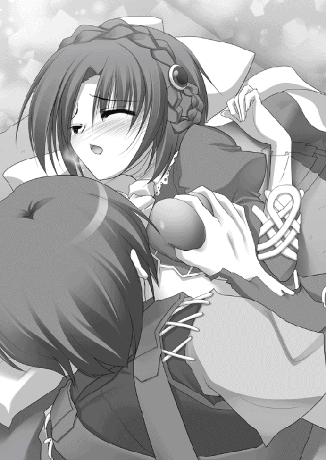
「......ちょ、ちょっと待ってもらえないか。冷やせば落ち着くから」
「手伝ってあげましょうか？ 凍漣なら一瞬よ。凍って腐り落ちるかもしれないけれど」
ティグルはそれには応えず、のろのろと身体を起こすと平謝りに謝った。
「――まあ、いいわ。あなたと並んで寝ていた私にも非はあるでしょうから」
そうリュドミラが言ったのは、ティグルが謝ってから一千を数えるほどの時間が過ぎたころだ。つまるところ反省と謝罪で許してもらえたわけで、軽いといえば軽い。
「許してくれるのか？」
意外だという顔でティグルが尋ねると、リュドミラはため息混じりにうなずいた。
「いま言った通りよ。本来なら腕の一本ぐらいは落とすところだけど、許してあげるわ」
ティグルは彼女に礼を述べた。それを半ば聞き流してリュドミラは立ち上がる。凍漣を持って幕舎の外へ足を向けた。ティグルを振り返る。
彼女の顔が赤く染まっているように見えたが、はっきりとはわからなかった。灯りのない幕舎の中だ。錯覚かもしれない。
「紅茶を飲みましょう。あなたもついてきなさい」
ティグルは立ち上がり、黒弓を持って彼女に続いた。
幕舎を出ると薄闇に覆われた空の下、数百近い幕舎と篝火がティグルの視界に展開していた。空気は冷たく、息は闇の中で白くなる。
すぐそばにいた見張りの兵士を呼んで、ティグルは状況を尋ねた。
「ヴォルン伯爵が休まれてから、ですか？ いえ、とくに何も。兵のほとんどが同じように倒れてしまったので、まだ動くことができた者たちが、幕舎を集めて幕営を再編したり、ぐらいでしょうか」
激戦だったのだということを、あらためてティグルは思い知らされた。リュドミラはオルミュッツ兵の幕営の場所を訊いて、そちらへ向かう。当然のようにティグルの同行を求めてだ。ティグルもおとなしく彼女に従った。
「これから、どうするんだ？」
肌寒い暗がりの中を歩きながら、ティグルはリュドミラに尋ねた。
「まず、私の軍の状況の確認。まだエレオノーラは帰ってこないようだし、いくつかこちらの提案を呑んでくれるのならば、もう少し協力してあげても――」
リュドミラはそこで言葉を途切れさせ、ある方向に鋭い視線を向ける。ティグルもつられてそちらを見た。
――何だ、あれは......？
連なる幕舎の間に、人影が一つ。だが、それを目にした瞬間、ティグルの背筋を強烈な悪寒が走り抜けた。まるで闇の中を覗きこんだような感覚にとらわれて声が出ない。
それは他の兵士や篝火の影よりもあきらかに濃く、そして異質だった。
「......夜明け前がもっとも暗い、といわれるけれど」
怪異を目にしても、リュドミラはティグルよりいくらか落ち着き払っているように思われた。しかし、よく見れば彼女の表情には余裕がなく、額に汗がにじんでいる。
その影は、にたりと笑った。かと思うとくるりと背を向けて、音もなく歩いていく。リュドミラは視線を険しいものにして影を追った。ティグルはとっさに事態についていけなかったが、急ぎ足でリュドミラに続く。
「あれは......何なんだ？」
「昔、母から教わったことがあるわ。死霊、怪物、魔物の類......実際に、この目で見るのははじめてだけど」
リュドミラの手にしている凍漣が白い冷気を発して持ち主の身体を守るように包む。
「放っておくわけにはいかない。......あなたも、ついてきて」
ティグルへかける言葉に若干の間があったのは、彼女なりに悩んだためだった。ティグルもようやく気を取り直してうなずく。
――怪物、魔物......そんなものおとぎ話のことだと思っていたが。
自分の手にある漆黒の弓を、強く握りしめる。おとぎ話を、ティグルはすでに手にしているのだ。まして戦姫であるリュドミラの言葉を、否定する気にはなれなかった。
影はどういうわけか兵士たちには認識されていないようで、軽い足取りでどんどん先を歩いていく。
――俺たちしか気づいていないということは......こいつの狙いはリュドミラか、俺か。
リュドミラの台詞から考えても、戦姫である彼女を狙っている可能性は高い。だが、自分という可能性も考えておくべきだった。
いざとなれば、この弓の力を使ってでも彼女を助けるとティグルは決意を固める。
守るのではない。ともに戦うのだから。
影を追ったティグルたちは、いつしか幕営を離れて夜明け前の草原に立っていた。
突然、影が足を止めてこちらを振り返る。影が薄くなり、一人の若者の姿が浮かび上がった。短い黒髪に緑色の布を大雑把に巻きつけ、中肉中背で襟や袖に毛皮をあしらった厚手の服をまとっている。
「――凍漣の主もいっしょか。まあいいや」
明るい笑みを浮かべて、その若者は独り言のように言うと奇妙なかまえをとった。両脚を大きく広げ、身体をおもいきり前に傾ける。
「来てもらうよ、少年」
若者はティグルに笑いかけ、不自然なその体勢から地面を蹴った。一瞬後、彼の身体は空中にある。人間には不可能な跳躍力であった。
「離れなさい、ティグル！」
リュドミラが叫び、氷の槍をかまえて男を迎え撃つ姿勢をとる。
「邪魔だよ、凍漣の主」
男は薄い笑みを浮かべた。重力に従って落ちてくる男を狙い、リュドミラは鋭く槍を突きだす。しかし、鉄の甲冑をたやすく貫く一撃を、男はなんと素手で弾いた。その上、弾いた際の反動を利用して空中で姿勢を変える。リュドミラの頭部に蹴りを叩きこんだ。
青い髪の戦姫は手の中で槍を回転させ、男の蹴りを防ぐ。ほぼ同時、ティグルが弓に矢をつがえて射放った。呼吸を合わせるかのように、リュドミラが槍を薙ぎ払う。
驚くべき光景がまたも出現した。男は凍漣の刃を素手で受け止め、自分に向かってきた矢を、大きく開けた口から突き出した舌で払い落としたのだ。その一瞬、男の舌はティグルの腕よりも長くなっていた。
「何だ、ふつうじゃないか」
残念そうにつぶやくと、男はリュドミラの槍を軽く蹴って空中で回転し、二人から離れたところに着地する。ティグルもリュドミラも、すぐには動けなかった。手といい、舌といい、いまの、あまりにも人間離れした光景は衝撃的過ぎた。
「おまえ......何者なんだ？」
かすれた声でのティグルの問いかけに、男は笑ってあっさりと応じた。
「ヴォジャノーイ。仲間内じゃ、そう呼ばれてる」
その名前は、ティグルも聞いたことがある。おとぎ話に出てくる怪物の名として。
「私の知る昔話だと、ヴォジャノーイは蛙の魔物ということだったけれど......」
ヴォジャノーイとの間合いを慎重にはかりながら、リュドミラが言った。
「異常な跳躍といい、長い舌といい、実に蛙らしいわね。あなたは」
魔物の名を持つ若者は、それには答えず肩をすくめただけだった。
「凍漣の主。僕は、おまえには用はないんだ」
「あらそう。でも残念ね。私にはあるの」
「へえ。どんな？」
軽口を叩くリュドミラに、ヴォジャノーイも軽口で返す。リュドミラは不敵な笑みを浮かべて答えた。
「このラヴィアスは『破邪の穿角』と呼ばれているわ。先代の戦姫も言っていた。これは魔を討つものでもあると。そして、いま、私の目の前に『魔』はいる」
「ああそう。やってごらん」
嘲笑を浮かべて、ヴォジャノーイはリュドミラを挑発する。ティグルは弓に矢をつがえはしたが、ひとまずは黙って様子をうかがうことにした。
――あいつは俺に来てもらうと言った。狙いは、俺なんだ。
理不尽さに頭が混乱する。まさしく人間の皮をかぶったような、こんな怪物に狙われる覚えはない。あるとすれば。
――この弓だ。
ティグルの手にある黒弓。エレンとともに竜を貫いたあの日から、この弓はティグルを途方もない世界へ連れていっているように思える。それとも、これはもっと前から決まっていたのか。自分が弓を扱うようになってからか、あるいは生まれたときすでにか。
――落ち着け、俺。
自分を叱咤する。弓を選んだのは自分の意思だ。家宝が弓だったからではない。亡き父に強いられたのでもない。それに、自分はこの弓の力に触れて驚きながらも、これを捨てなかった。この弓があったからこそ、できたことがどれほどあっただろう。
ティグルが葛藤している間にも、リュドミラとヴォジャノーイの戦いは続いている。
リュドミラが次々に繰り出す槍の一撃を、ヴォジャノーイは素手で受け止め、弾き、受け流す。槍先から放たれる冷気には顔を歪めたが、それを除けば表情も態度も、余裕に満ちていた。その手には、傷らしい傷もついていない。
一方で、リュドミラは肩で息をしはじめている。
前日の疲労が抜けていないこともあったが、それ以上に得体のしれない相手と対峙しているという精神的な消耗の方が大きかった。
衝突。リュドミラとヴォジャノーイは同時に後退し、距離をとる。その瞬間、ティグルは矢筒から矢を三本引き抜くと、まとめて弓につがえて力強く射放った。矢は三本とも正確にヴォジャノーイへ迫り、その早業にリュドミラだけでなく怪物も目を瞠る。
しかし、ヴォジャノーイが感心したとしてもそれはほんの一瞬だった。小さく息を吸うと、怪物は口から何かを吐きだす。それは毒々しい紫色をした液体だった。液体は空中で飛散し、ヴォジャノーイに向かっていた矢にすべて命中する。
水が蒸発するのにも似た不気味な音を響かせ、ティグルの射った矢は溶け崩れて地面に落ちた。酸のようなものを吐いたのだと、ティグルとリュドミラは理解する。
ティグルは新たな矢を用意しながら、リュドミラへと駆け寄った。まだ、彼女は呼吸を整えきれていない。
「だいじょうぶか？」
「私の心配なんてしてる暇はないでしょう。狙われているのはあなたよ」
「それだけ喋れるなら、問題なさそうだな」
無理矢理にでも笑みを作る。
ようやく、ムオジネル軍を撃退したのだ。こんなところで怪物などにつきあっている暇はない。リュドミラをこんな怪異につきあわせたくもない。
ティグルは弓をかまえながら、青い髪の戦姫にささやいた。
「あいつの動きを止めることができるか？ 一瞬でいい」
「......その弓で、どうにかするってことね」
リュドミラは、ティグルの狙いをすぐに悟った。もともとティグルの黒弓に何かしらの力があると考えて、ここまで来たのだ。この凍漣の主は。
「いいわ。あなたを信じてあげる」
ティグルは短くありがとう、とだけ言って、ヴォジャノーイへ矢を射放つ。しかし、ヴォジャノーイはつまらなさそうに手だけでそれを弾いた。
「......もしかしてさ、君、その弓を使えないの？」
不審そうな顔で、さぐるような視線を向けてくる。ティグルの額に汗がにじんだ。
「少なくとも一度は使っているはずなんだけどな......。不安定なのかな。使えないんだったら、手足をもいでいこうか。死んでなければいいって話だし」
「何が目的なんだ？」
余計なことを言ってしまわないように言葉を選んで、ティグルは訊いた。もしも自分がこの弓の力を使えないと思われているなら――その方が、有利だ。
「君と、その弓」
ヴォジャノーイはさわやかに笑って簡潔に答えた。
「じゃあ、こうしようか。君が来てくれれば、そこの凍漣の主は見逃してあげよう」
「――お断りよ」
答えたのはティグルではなく、リュドミラだった。氷塊と水晶の槍を下段にかまえて地面を蹴ったかと思うと、恐ろしい速さでヴォジャノーイとの距離を詰める。竜具の力で地面を凍らせ、その上を一気に滑ったのだ。
速度を一切緩めず、腰を低くしてリュドミラはヴォジャノーイに肉迫した。渾身の力をこめた突きはしかし、異常な跳躍によってかわされる。だが、リュドミラは人間の姿をした怪物を逃がすつもりはなかった。
「――空さえ穿ち凍てつかせよ」
地面に突き立てたラヴィアスから放たれる膨大な冷気が、リュドミラの周囲に六角形の結晶を描く。氷に覆われた地面に鋭くとがった氷槍が無数に生まれ、空へと突きあげた。
ヴォジャノーイの表情から、はじめて余裕が消えた。自分に迫る幾本もの氷の槍を拳で破壊し、足場にして姿勢を変え、逃れようとする。
そこに、ティグルが矢を放った。弓の力を使っていない、ただの矢だ。速くもない。それゆえにヴォジャノーイは軽視した。手で無造作に振り払う。
直後、硬い音が響いてヴォジャノーイの動きが一瞬止まった。一本の矢が、怪物ではなくその服の裾を貫いて氷に縫いつけている。
ティグルの射放ったものだった。一本目ははじめから囮にするつもりで、速さに緩急をつけて二本の矢を立て続けに射ったのだ。
そして、リュドミラが、己の作りあげた氷の槍を滑るように駆けあがってヴォジャノーイに接近する。ヴォジャノーイは紫色の酸を口から吐いたが、それはリュドミラに届く前に凍てつき、粉々に砕け散った。
凍漣と怪物の拳とが衝突する。鉄塊同士を叩きつけたような轟音とともに閃光が炸裂した。小さな悲鳴とともに弾き飛ばされたのはリュドミラだった。
「凍漣の主！ おまえはここで――！」
かたづける、とまでヴォジャノーイは言えなかった。力を全身で感知して声を呑み、怪物は目を丸く見開いてそちら――ティグルを見つめる。
ティグルは黒弓を握りしめ、矢をつがえてヴォジャノーイを狙っていた。
その鏃には、黒い輝きを放つ力が集束しつつあった。
焦りを覚えたヴォジャノーイとは対照的に、ティグルの気分は不思議なほど落ち着いている。青い髪と瞳の戦姫が自分を信じてくれたからか。それともこの弓の力に慣れてきたからなのか。ともかく、ティグルの中ではっきりしていることがあった。
いま、ティグルははじめて自分の意思で、一切のためらいなくこの弓の力を行使しようとしている。全身を襲う重圧にも、耐えることができていた。
地面に降り立ったリュドミラの凍漣が光を帯びる。その穂先から生みだされた白い冷気は、六角の結晶を形作ると音もなく鏃へと吸いこまれていった。鏃は、氷塊を削りあげたかのような鋭さと冷たさ、闇を閉じこめた水晶のごとき昏さと静けさをはらむ。
ようやく、ヴォジャノーイは気づいた。リュドミラの竜技さえも、囮だったことに。
――吹き飛べ......！
強い意志を込めて、ティグルは矢を放つ。凍気をまとった漆黒の矢は、矢とは思えぬほどの速さでヴォジャノーイを襲った。
怪物の目は自身に迫りくる矢を正確に捉え、叩き落とそうと拳を振るう。
刹那、ヴォジャノーイの右腕――肘から先が凍りつき、粉々に砕け散っていた。それと認識したときには、膨大な冷気をはらんだ鏃が怪物の胸元に突き立っている。
空中で姿勢を変えることすらできぬまま、ヴォジャノーイの身体は鏃を中心にすさまじい勢いで凍りついていく。そして、音もなく吹き飛んだ。
霧が朝日に溶けるように、氷の粒の集まりと化した魔物の身体は大気に霧散していく。
――やった......!?
途端に、ティグルの身体を強い脱力感が襲う。立っていられなくなり、その場に膝をつくティグルにリュドミラが駆け寄ってきた。青い髪の戦姫は、驚愕さめやらぬといった表情でティグルを見下ろす。
「......いまのが、あなたの弓の力？」
ティグルは気怠そうな表情でどうにかうなずいてみせた。リュドミラは気遣うように眉根を寄せてティグルに手を差し伸べる。
「立てる？」
「......この前は、気を失った。それに比べれば......」
意識があるだけまだまし、とまでは続けられなかった。考えるのも言葉をさがすのもひどく億劫で、可能ならいますぐこの場に寝転がりたいほど身体が重い。
「仕方がないわね」
リュドミラはティグルに肩を貸す。彼女の方が小柄なため、ティグルの足を若干引きずる形になった。ティグルは苦笑気味にありがとうと礼を述べる。
「たいしたことじゃないわ。それにしても、現実のこととはまるで思えないわね......」
「誰に話してもわかってもらえそうにないしな......。やつの正体も不明のままだ」
「私だけでは......あなたの力がなければ、倒せなかったわ」
すぐそばにあるティグルの顔を横目で見つつ、かすかに頬を染めてリュドミラが礼を言おうとしたときだった。大地を震わせる馬蹄の轟きを、二人の耳はほぼ同時に捉える。顔を上げると北の方に騎影が見えた。それも一つや二つではない。数百もの大軍だ。
「......敵？」
「いや、違う」
リュドミラの不安を、ティグルはやんわりと拭い去る。これだけの数に、音だ。幕営の方はもっと早くに気づいているはずである。しかし、静かなままだ。
はたしてティグルの予想は当たった。東の空の果てにようやく姿を見せはじめた太陽の光が、彼らを照らす。そこにひるがえる軍旗は黒竜旗だった。
黒く巨大な雲のごとき騎兵集団の中から、二つの騎影がこちらへ向かってくる。
「ティグル！」
懐かしささえ感じる白銀の髪、紅の瞳。エレンだった。その隣で馬を走らせている娘は愛想のない無表情に、頭部の左側で結んで流している艶のない金色の髪。リムだ。ティグルも力を振り絞り、彼女らに向かって手を振る。
「いま戻っ――」
ティグルであることを確認し、笑顔で馬を走らせてきたエレンだが、唐突にその表情から明るい笑みが消えた。それまでよりも馬を急がせながら、あからさまなほど不機嫌そうな表情で近づいてくる。
ティグルたちから数歩のところまで近づくと、エレンは馬を止めた。馬上から険しい視線を浴びせる。ティグルは彼女のその態度に戸惑った。
「......何のつもりだ、貴様」
一瞬ティグルは首をかしげ、すぐに、それが自分に向けられたものではないことに気がついた。
「......何のことかしら？」
彼女に支えられている右腕が瞬時に凍りついたかに、ティグルには思われた。それほどまでにリュドミラの声は冷たく、吐く息すら凍気を帯びている。
「おまえにもわかるように、丁寧に質問してやろう。なぜ、おまえがティグルに肩を貸している？ それとも、さらって引きずって連れ帰る途中だったりするのか？」
一言ごとに、周囲の大気が冷たくなっていくような錯覚をティグルは覚えた。リュドミラは爽やかさすら感じさせる笑顔で答えた。
「私にとってとても大切なひとであるティグルに肩を貸すことの、何が不自然なの？」
「――いつからティグルなどと馴れ馴れしく呼ぶようになった？ あと大切なひとというのは何だ。この寒さでとうとう頭が働かなくなったのか」
ティグルはといえば、一瞬ごとに緊張を増していく場の空気に圧迫されて一言も発せられずにいた。もしここで何か喋れば、それが何であれ二人の戦姫の気を惹いてしまう。そんな恐ろしい真似ができるはずはなかった。
「あなたがいない間にいろいろとあったのよ。――いろいろと」
最後の台詞を必要以上に強調して、リュドミラはエレンを挑発する。それからティグルの耳元にささやきかけた。
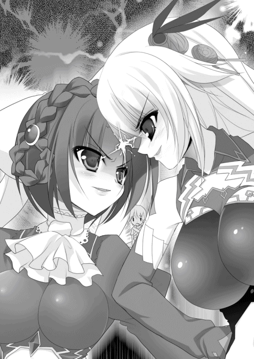
「ティグル。今度からそう呼ばせてもらうわ。あと、私のことはミラと呼んで」
「み、ミラ......？」
つい、ティグルは普段の声量で発してしまった。それを聞き逃すエレンではない。乱暴な動作で馬から降りると、殺意に満ちた表情でティグルたちへ近づいてくる。
「ティグル。私はおまえに笑顔で再会できると思っていたのだが......違ったらしいな」
「安心しなさい、ティグル。あなたのことは私が守るから」
ティグルをそっと地面に降ろし、リュドミラ――ミラが、エレンの前に立つ。
激しい視線をかわしている二人の戦姫を、どうしたものかという顔でティグルは眺めていたが、その肩を軽く叩く者がいた。振り返ると、地面に膝をついたリムが口にひとさし指をあてている。
ティグルが言葉を呑みこんでうなずくと、リムはそっとくすんだ赤い髪の若者を背負った。長身の彼女は軽々とティグルを背負って立ち上がり、足早に、しかし不要な音を発さずその場から離れる。エレンとミラは睨みあったまま動かず、気づかない。
しばらく歩いて戦姫たちから充分に離れたと判断したところで、リムは口を開いた。
「ご説明いただけますね、ティグルヴルムド卿」
有無を言わせぬ強い声音の中に、ほのかな怒りが垣間見える。彼女には叱られ慣れていたつもりのティグルだが、これにはたじろいだ。とはいえ、説明の必要は感じていた。
ムオジネル軍が侵攻してから撤退するまでの顛末を、ティグルは説明する。疲労のためにとぎれとぎれになってしまったが、リムは辛抱強く聞き続けた。
「そういうことだったのですか......」
聞き終えて、ようやく得心したようにリムはうなずく。幕営が見えてきたあたりで、ティグルは彼女に頼んで降ろしてもらった。どうにか足に力が入るようにはなってきていたし、さすがに背負われているのを兵たちに見られてはきまりが悪い。
「いろいろと申し上げたいことはありますが......」
そう前置きをしてリムはティグルに向き直ると、あたたかな微笑を浮かべて言った。
「まずは、おつかれさまでした。ティグルヴルムド卿」
リムを伴って総指揮官用の幕舎に戻ってきたティグルを迎えたのは、マスハスだった。
「朝早くからどこをほっつき歩いておったんじゃ」
「......すいません。疲れていたとはいえ、早く寝すぎたようです」
恐縮するティグルを渋面で叱りながらも、マスハスは若者の身体を本心から気遣っているようだった。それから老伯爵はリムとも挨拶をかわす。
「戦姫殿は戻られたか。しかしまあ、おたがい、よく無事に再会できたものだて」
「簡単には死ねません。放っておけない方が幾人かおりますので」
リムの返答に、マスハスは違いないと笑ったものだった。
「ところで、マスハス卿。こんな朝早くからどうされたのです？」
「うむ、それがな......」
マスハスは一瞬言いよどんだが、二人の視線を受けて思い切ったように口を開いた。
「この幕営で、王子殿下によく似た者を見かけたという報告があってな。見た者の話では瓜二つどころではないと。そこで、おぬしに聞いてみようと思ったのだ」
「王子殿下に？」
ティグルは眉をひそめた。そんな人物がいただろうか。あるいは二千弱の難民の中になら偶然いるということもあり得るが。
「そうじゃ。短い金色の髪に碧い瞳......」
マスハスの言葉に、ティグルはなんとなく隣に立っているリムを見た。彼女も短くはないが金色の髪に、碧というほど鮮やかではないが青い瞳をしている。この髪も瞳も、ブリューヌ人にもジスタート人にも珍しいものではない。
「それだけでは......そのひとの名前などは聞かれなかったのですか？」
「うむ。それが、驚いている間に兵たちの間にまぎれて見失ってしまったらしくての」
残念そうに溜息をこぼすマスハスに、横からリムが口をはさむ。
「ですが、王子殿下は亡くなられたのでは？」
マスハスはうなずいたものの、それは未練を多分に残した肯定だった。ティグルはどうしたものかと首をひねって思案する。
そのとき、一人の兵士が中へと入ってきた。
「恐れ入ります。レギンという娘が、伯爵さまにお会いしたいとのことですが」
――レギンが......？
不意に、彼女の白い背中を思いだしてしまい、ティグルは慌てて頭を振って記憶を振り払う。リムとマスハスの不思議そうな視線を浴びながら、ティグルは彼女を通すよう兵士に告げた。
――しかし、こんな朝早くにどうしたんだろう。世間話というわけでもないだろうし。
兵士と入れ替わるようにレギンが幕舎に入ってくる。マスハスが絶句したのはその瞬間だった。目を丸く見開き、顎が外れるのではと心配になるほど口を大きく開け、灰色の髭を撫でようとして失敗し、指先でむしりながら彼女を凝視する。
そんなマスハスと、無表情でたたずむリムとを困惑気味に見てから、レギンは視線で助けを求めた。ティグルもマスハスに事情を聞きたかったが、ひとまず気にすることはないというふうに彼女に笑いかける。
「元気になったみたいだけど、どうしたんだ？」
それで気を取り直したらしいレギンは会釈をすると、真剣な表情をつくって言った。
「お忙しいところ申し訳ないのですが......あなたと二人だけで、お話をしたいのです」
「二人だけって......」
突然の頼みに、ティグルは困惑を隠せずレギンを見つめる。彼女の顔には、悲壮なほどの決意が揺れていた。
「君にもいろいろと事情があるらしいのはわかる。でも、もしそれが重大なものなら、俺は信頼できるこの二人に相談する」
ティグルの言葉に、レギンの視線が不安げに左右へと動いた。リムとマスハスは顔を見合わせる。ひとまず席を外しましょうかとリムが言いかけるのと同時に、レギンは意を決した顔になって口を開いた。
「......わかりました。ただ、ティグルヴルムド卿。私がこれから話すことを、信じるかどうかはともかく、他言無用でお願いできますか」
レギンの碧い瞳が、いつになく強い意思に輝いている。ティグルは彼女の態度に軽い驚きを覚えたが、わかったと答えた。マスハスとリムを見る。
「二人とも、いまから彼女が話すことは――」
「わかりました」
ティグルが言うより早くリムがうなずき、マスハスも首肯する。それを見届けてようやく安心できたのか、レギンはティグルを見つめた。
「私は......私は、ついこの前までレグナスという名前で生きてきました」
正確には――レグナス＝エステル＝ロワール＝バスティアン＝ド＝シャルルです。
彼女がそう言い終えたとき、場を不気味な沈黙が支配した。
ティグルとマスハスはもちろん異国人のリムでさえ、その名を知っている。
レグナスが名、エステルは星を意味する尊称だ。ロワールとバスティアンは先祖からいただいた姓であり、最後のド＝シャルルはブリューヌ王国の初代国王シャルルを示す。
たとえ冗談でも名のっていいものではない。発覚すれば、死刑を免れない重罪だ。
――でも、たしかに言われてみれば......。
ムオジネル兵から彼女を助けだしたときに、見覚えがあると思ったわけだ。はじめから女性と認識していたため、レグナスに結びつかなかったのだ。
「......ひとまず、レギン殿として応対させていただきますが」
最初に口を開いたのはリムだった。マスハスはといえば衝撃が強すぎたのか、口を開きかけては閉じるという行為を繰り返してばかりいる。落ち着くまで放っておいた方がよさそうだった。それに、いまはレギンのことが気にかかる。
「そう名のられるからには、それを証明するものをお持ちなのでしょうか」
レギンは首を横に振る。リムはあてがはずれたという表情で首をかしげた。
「申し訳ありませんが、それではお話になりません。そもそもあなたは女性では......」
「――ティグルヴルムド卿」
リムから視線を外し、レギンはティグルを見つめた。
「六年前、ヴァンセンヌの狩猟場でのことをあなたは覚えていますか？」
「ヴァンセンヌ......」
ティグルはおもわずその単語を呟いていた。ヴァンセンヌの狩猟場は、王都ニースの東にある一帯を指す。草原や川、森があり、歴代の王はたびたび狩猟祭を催して国内の貴族や国外の賓客を招き、親睦を深めたとされる。
六年前、国王ファーロンもやはり国内の貴族を招いて狩猟祭を行った。ティグルも父ウルスに連れられて参加した。
「あのとき、あなたが狩った鳥を私はご馳走になりましたね。焼きたての、あたたかいものを食べたのはあれがはじめてでした」
微笑を浮かべてのレギンの言葉に、ティグルの呼吸が一瞬止まる。そのことは、ティグルとレグナスしか知らないことのはずだからだ。
ブリューヌ王国の狩猟祭は、槍か、鷹などの猛禽を使う。弓は、下男が獣を主人の前に追い込むために用いるぐらいだ。
それもあってティグルは、国王と王子にお目通りしたあとはひとりで行動していた。父のウルスにしても、息子の弓の技量を示したいというのではなく、王族に挨拶をさせておくていどの目的しかなかったらしい。
そうして何とはなしに森のそばを歩いていたティグルは、お目付け役の目を盗んで抜け出してきたレグナスに会ったのだった。
さきほど挨拶をすませたばかりで、レグナスはまだティグルのことを覚えていた。加えて赤毛の少年の持つ弓が、十歳の王子の興味をそそったらしい。なにしろ弓を持っていた貴族の子息はティグルだけだったからだ。
使えるのか、とレグナスに聞かれたティグルは、一羽の鳥を難なく射落としてみせた。
目を丸くする王子をよそに、弓使いの少年は慣れた手つきで火を熾し、鳥をさばく。一連の作業を、レグナスは顔を目で覆いながらも指の隙間からじっと見続けた。
食べるかと少年に聞かれて王子はためらったものの、こんがりと焼いて塩をふった肉をティグルがうまそうにかじる様子を見ていると、食欲が勝ったらしい。
鳥肉をかじりながら、王子は興奮したように言った。焼きたての、あたたかいものを食べたのははじめてだ――と。
「......君は」
ティグルの声が震えた。六年前の記憶を脳裏で呼び覚まし、目の前に立つレギンをまじまじと見つめる。あのことは、父のウルスにさえ喋っていない。レグナスに秘密にしろと言われたからというのもあったが、狩猟祭が終わると急に怖くもなったのだ。
なにしろ辺境の貴族の息子が、よりにもよって一国の王子を相手に対等に近い口をきいただけでなく、鳥を狩って得意がり、その場でさばいて怯えさせ、しかも自分が先に食べていたとはいえ、安全かどうかわからない肉を食わせたのだ。
もしも王子が誰かにこのことを話していたら、ティグルどころかヴォルン家が潰されていた可能性は非常に高い。万が一王子が腹痛を起こしたりしていたら、間違いなくヴォルン家は地上から消滅していただろう。
「次に私が温かいものを食べたのは、数日前にあなたに持ってきてもらったスープです。あのとき、他の者には申し訳ないことをしてしまいましたが......」
その言葉で、ティグルはそのときのレギンの行動に納得した。毒の有無を、彼女は警戒したのだ。だから、ティグルが口をつけたスープを食べたがった。
「信用していただけましたか？」
レギンの言葉に、ティグルはうなずくしかない。マスハスはといえば、彼女の台詞だけでおおよその事情を察したのだろう、顔を真っ白にして苦しそうに胃のあたりをおさえている。あと一押しすれば、泡を吹いて卒倒するかもしれない。
ティグルもいっそ倒れてしまいたかったが、そういうわけにもいかなかった。首を振って落ち着きを取り戻すと、彼女を見つめる。
「どうして、俺にそのことを？」
男性と見るか女性と見るか、王族として接するべきか迷ったものの、結局いつもどおりの態度と口調でティグルは尋ねた。レギンはそのことをとくに非難せず、受け入れる。
「あなたの手を借りたいからです」
強い意志を感じさせる表情で、きっぱりと彼女は答えた。
――むしろ、こっちがひとの手を借りたい状況なんだが......。
そのとき、幕舎が開いてエレンとミラが入ってきた。二人の戦姫はなおもおたがいを睨みつけていたが、幕舎の中に漂う雰囲気を見て不審そうに眉をひそめる。
エレンは幕舎内を見まわし、レギンにぶしつけな視線を浴びせながら言った。
「誰だ、この女は」
マスハスはついに気絶し、ティグルとリムはなんともいえない顔を見合わせた。
リムに手伝ってもらってマスハスを介抱しながら、ティグルはレギンのことを、エレンとミラに説明した。二人の戦姫の反応は非常に酷似しており、胡散臭い厄介者を見る眼差しを、彼女たちはレギンに向ける。
「あなたがディナントで討ち取ったんじゃなかったの？」
「敵を蹴散らしたら、そんな騒ぎが聞こえてきたという感じだったな......。私や私の配下の者が討ち取っていれば、そいつはもっと有名になっているはずだ。首をとったわけでもないから、国王陛下への報告も戦死したらしい、としか言えなかったしな」
「たしかに......言われてみるとあれは不自然でしたね。本当に戦死した場合でも、可能なかぎり隠蔽するはずなのに」
リムも首をかしげて同意する。答えを求めて、三人分の視線がレギンに向けられた。彼女はといえば、エレンがディナントで戦った戦姫だとわかった途端、ティグルの袖をつかんで肩を震わせ、小動物のように怯えている。
「だいじょうぶだ。俺を信頼してくれるなら、彼女も同じくらい信頼してくれ。それぐらい、俺はエレンを信じている」
ティグルがそう言ってレギンをなだめている間、その後ろではエレンがミラに対して無言で勝ち誇り、リムが情けないという顔で主を見つめていた。
レギンはしばらく悩んだが、エレンをというよりティグルを信じることにしたらしい。背筋を伸ばしてエレンたちに向き直り、彼女らの視線を受け止めて口を開く。
「......あれは、テナルディエ公爵とガヌロン公爵の共謀によるものです。戦場でならば、不自然な死に方でも戦死として押し通してしまえますから」
「そもそも、どうしておまえは女なんだ？ まだ王子の腹違いの妹とか言われた方が納得できるのだが」
あぐらに頬杖をつくという行儀の悪い姿勢で、エレンが尋ねた。それはティグルとマスハスも知りたいことだった。レギンは言いよどんだが、うつむきがちに答える。
「母と、私のためです。このブリューヌでは、娘しか産めなかった王妃は蔑視されます。また、王女の王位継承権はかぎりなく低い......ないと言ってよいようなものです」
「それで王子だと偽ったの？ 無茶な手を打つものね」
「まったくだな。当時はそれでいいかもしれんが、リムやソフィーなみに胸が育ったらどうするつもりだったんだ。切り取るわけにもいかぬだろうに」
「話を脱線させないでください、エレオノーラ様」
エレンの感想を、リムが頬を赤らめて咎める。ミラは憮然とした顔をし、ティグルは聞かなかったことにしようと決めた。
「しかし、テナルディエとガヌロンはおまえを殺しそこねたのに、戦死したなどと言ってしまったのか。案外間が抜けて......」
そこまで言ってから、そうかとエレンは手を打った。
「殺したことにしてしまえば、ひとまずはそれでよかったのか。レギンでいいな？ 王子が実は女だったということを知る者は、おまえの知る限りブリューヌに何人いる？」
「私と母と陛下だけのはずだったのですが、彼らのやり方を考えるとテナルディエ公とガヌロン公も知っていると思います」
白銀の髪の戦姫と王女とのやりとりにティグルは首をひねっていたのだが、ようやく理解した。
――そうか。一度死んだことにしてしまえば、あとからレギンが出てきても、王子の名を騙る不届きな娘、ということでかたづけてしまえる。証拠の品があっても、ディナントの戦場で拾ったのでは、と言って押し切ることもできるだろう。
テナルディエとガヌロンの権勢をもってすれば、そのていどのことは可能だろう。
「ディナントで、ジスタート軍の奇襲と同時に、十人を超える数の刺客が私の幕舎を襲ったのです。護衛の者たちが守ってくれて、私は辛うじてジャンヌ――護衛を務めてくれた者です。彼女とともにディナントから逃れました」
レギンの肩が、怒りと悲しみとで震える。
「その後、私は王宮に戻ることを考えましたが、ガヌロン公の妨害に遭って王都に入りこむことさえできず、ジャンヌも失ってしまいました。誰かを頼るにしても、あなたがたの仰ったように、この身で信用を得ることは不可能といってよいでしょう」
「まして、テナルディエ公やガヌロン公を敵にまわすことになるのだからな。よほどの者でなければ、とっつかまえてどちらかに売り渡して終わりだろう」
エレンの率直な言葉に、ティグルとようやく持ち直したマスハスは眉をひそめたが、否定はできなかった。
「いまの話だと、ガヌロン公はあなたが生きていることを知っているのか？」
ふと気になったことをティグルは尋ねる。答えたのはレギンではなくマスハスだった。
「そういえば王都で王子殿下の葬儀を......失礼、偽の葬儀を執り行っていたのはガヌロン公でしたな。ということは......」
「ええ。彼は私が生きていることを知っています。ただ、王都に入れないようにした以外の妨害は何も仕掛けてこないようですが......」
「しかし、ディナントからどうしてこんなところまで」
そのことに、ティグルは驚きを禁じ得ない。ブリューヌ東部をほぼ縦断する形だ。旅慣れた者でも楽ではないだろう。ましてや王女ならば。
「ジャンヌの故郷がアニエスにあるということだったのです。もし王都に入れなかったとしても、そこならだいじょうぶだと。それにブリューヌの北と西、南はガヌロン公かテナルディエ公の目が光っています。とうてい安全には思えませんでした」
「ティグルのことを知っていたのなら、アルサスに――」
「そのとき、彼は捕虜になっていました」
エレンの言葉をさえぎって、金色の髪の王女は白銀の髪の戦姫に非難めいた眼差しを叩きつける。しかし、この台詞にはエレンよりもむしろティグルが恐縮した。
「その......申し訳ない」
「い、いえ、ティグルヴルムド卿に非は......」
深々と頭を下げるティグルに、レギンは慌てていたわりの言葉をさがしたが、すぐには出てこなかった。割りこみづらい雰囲気が形成され、エレンとリム、ミラの不機嫌そうな視線が王女に集中する。
「殿下、お話の続きを――」
どっしりと落ち着いた口調でこの場を救ったのは、ようやく事態を受け入れたらしいマスハスだった。ティグルの肩を軽く叩いてなぐさめると、王女に対してかしこまる。この貫録は、まだ十代のエレンたちにはとうてい真似できないものだろう。
レギンも気を取り直して口を開いた。
「ジャンヌにいろいろなことを教わっていたおかげで、私ひとりでもどうにか旅を続けることはできました。アニエスにたどり着き、彼女の生まれ育った村に腰を落ち着けたのですが......そこにムオジネル軍が攻めよせてきたのです」
村人たちはこのようなときの行動を決めており、村を捨てて四方八方に散って逃げた。レギンもそうしたのだが、土地勘がないために迷い、ムオジネル兵の斥候に見つかってしまったのだった。
「あとは......ティグルヴルムド卿が知っている通りです」
レギンが口を閉ざす。ティグルはなんとも言い難い顔で王女を見た。
一方、エレンはひどく面倒くさそうな顔をしている。彼女だけではなく、ミラもだ。
「......それで、どうする、ティグル？」
「どうする、って？」
彼女の質問の意味がわからず、ティグルは訊き返す。
「力を貸して、ってさっき言ってたけど、このひと、はっきり言って邪魔よ」
身も蓋もない台詞を言い放ったのはミラだ。エレンが同意を示して言葉を継ぐ。
「実は王子が生きてました、ガヌロンとテナルディエが殺そうとしたのです、と叫ぶとするだろう。その王子が女な時点で信用してもらえないどころか、不届き者とか逆賊だと呼ばれることになるぞ、こちらが」
その意見に、しかしティグルは懐疑的な表情で首をひねった。
「エレンとミラの言うことはわかるけど......でも、国王陛下にさえ声が届けば、何とかなるんじゃないか？ 病に伏せておられるとは聞いているけど」
その言葉に、ティグルの隣に座っているマスハスがむせた。見ると、老伯爵はかつてないほどの深刻な表情で、汗すらにじませて唸っている。
「マスハス卿？」
ティグルが心配して声をかけると、マスハスは疲れきった顔で、声を絞り出した。
言葉を濁し、また選びつつ灰色の髭の老将が語ったのは、王子の戦死を聞いた国王が、精神的にきわめて不安定な状況にあるということだった。
「それは......本当なのですか？」
レギンは衝撃のあまり、顔を青ざめさせてぐらりとよろめいた。とっさにティグルが彼女を支えると、レギンはその腕にしがみついて倒れることだけはどうにかまぬがれる。
「残念ながら......」
マスハスは顔を伏せ、それ以上の言葉を発さない。何も言えなかった。
一方、ジスタートの娘たちは当然ながら落ち着いている。エレンは無言で首を振り、ミラは無理ねとそっけなく結論を出し、リムは苦しげに沈黙を貫いた。
ティグルにしても苦しい状況だった。
彼女が王子であることを、ティグルは知っている。だが、それは二人の記憶だけが証明してくれるもので、他者が共有できる性質のものではないのだ。
レギンは黙って座っている。何が起きても受け入れようとするかのように。
悩んだ末に、ティグルは尋ねた。
「......レギンは、どうして俺に打ち明けてくれたんだ？ どうして俺を信用した？」
これに対する返答で、決めようと思った。
レギンは静かに顔を上げ、ティグルを見つめる。
「あなたに、下心がなかったから」
「そうか？」
ティグルは首をかしげた。ちなみに、レギンの向こう側に座っている三人の娘たちはどこか納得するようにうなずいている。王女は一つうなずいて口を開く。
「今日、あなたに打ち明ける前に、私はここの兵士やブリューヌの民に、あなたのことを聞きました。好意的なものばかりではなかったけれど......それでも、あなたには守りたいものがあって、そのために奮戦しているということが、伝わってきました」
そのときのことを思いだすように、レギンは胸に手をあてて言葉を続ける。
「この状況でアニエスやオルメアの民を助けても、あなたに得はない。まして勝てるかどうかもわからない相手に。それでもあなたはここまで来て、戦った。私を助けてくれたときも、それに......私のお願いを聞いてくれたときも、あなたは乱暴をしなかった」
お願い、と言ったときレギンはかすかに頬を赤らめた。その理由を理解して、つられるようにティグルも顔を真っ赤にする。
「......何だ、そのお願いというのは」
二人の表情と態度の変化を鋭く見抜き、エレンが眉をひそめる。
レギンは口ごもったものの、身体を拭いてもらったことだと正直に述べた。エレンは怒るだろうかとティグルは身構えたが、彼女は意外な反応を示した。
「ずいぶん危なっかしいことをするな、おまえ」
感心したような、呆れたような顔で彼女はレギンを見つめる。
「もしティグルに襲われたら、おまえは何も言わないでここを去るつもりだったのか？」
レギンは思いつめた顔でこくりとうなずいた。
「卑怯であることは承知で......あのときの私には、他の手段を思いつけなかったのです」
――あのとき俺に謝ったのはそれか。
ようやくティグルは納得した。レギンも彼女なりに必死だったのだ。リムとミラもいい顔はしていないものの、非難するというふうではない。
ティグルは幕舎の薄汚れたランプを見上げて、内心で溜息をついた。
見捨てることはできない。そう思ってしまったのだ。
「レギン。何でもいい。どんな些細なことでもいい。君が......その、とにかく国王陛下の御子であることを証明する手がかりになりそうなものは、ないか？」
それがあれば、レギンは晴れて王都に凱旋できるだろう。
エレンのおかげで自分がアルサスに帰ってこれたように、ティグルは彼女を王宮へたどり着かせてあげたかった。
レギンは必死に記憶をさぐっていたが、何かを思いだして小さく声をあげる。
「ルテティア......」
「......ガヌロン公の領土ですな。そこに手がかりがあるのですか」
マスハスが丁重な態度で尋ねる。レギンはうなずいた。
「ルテティアの中心都市であるアルテシウム......。この都市の地下に、王家の者にのみ開ける方法が伝えられている扉があります。これは王宮にも記録が残っていますし、宰相のボードワンも知っていることです。彼を審査者として立てれば......」
「そういうことなら話が変わってくるな」
興味が湧いたらしく、エレンが身を乗り出した。
「それが本当なら、そのことを喧伝してアルテシウムまで進むという手がとれる。阻もうとする者は、それこそ逆賊呼ばわりできるぞ。こちらはただ、この娘が王族であることを証明しようとしているだけなのだから、と」
「たしかにそうですね。そして、この方が王族であることが証明されれば、発言の信頼性が一気に高まります」
リムもうなずいて同意する。
「ティグル、どうする？」
楽しそうに紅玉の色の瞳を輝かせてエレンが訊いた。
「ここから西へ進んでネメタクムへ入り、テナルディエ公爵を討つか。北へ向かい、ルテティアを目指してガヌロンと戦うか」
ティグルはすぐには答えず、この場にいる者たちの顔を順に見回した。
エレン、リム、ミラ、マスハス、レギン。
つくづく不思議なことになったと思う。助けてくれたり、支えてくれたり、頼ってくれたり。この場にいないティッタやルーリック、オージェやジェラールにしてもそうだ。
彼らは、いつまでともにいてくれるのだろうか。いっしょにいてくれる間に、自分は彼らから受けたさまざまなものを返すことができるのだろうか。
わかっていることは、一日も早くこの状況を終わらせなければならないということだ。
「――行こう。ルテティアへ」
ティグルは考えたのち、はっきりとそう答えた。
◎
木もまばらな荒野に、テナルディエ公爵は幕営を敷いていた。
ブリューヌ南部の港町を襲ったムオジネル軍の船団を撃退したあと、彼はすぐに味方の救援に向かうことをせず、名前もついていないこの荒野に軍を進めたのだ。
ここに腰を落ち着けてから、五日が過ぎている。逐一王国内の情報を仕入れるようにしていたが、入ってくる情報は芳しくないものばかりだった。
悪い予想があたり、彼の信頼するスティードはガヌロン公爵の軍と衝突した。よく持ちこたえていたが、後退に後退を重ねてネメタクム付近まで来てしまっている。
――もう一日待って、やつが来なかったら動かざるを得ぬか。
兵士が報告に現れたのは、そのときだ。テナルディエは嬉々として立ち上がると、慌ただしく馬を駆ってそこへと向かう。
詳しい場所は聞かずとも、一目でわかった。五頭の竜たちの姿は、とくに遮るもののないこの荒野では遠くからでもはっきり見えたのだ。
テナルディエは勇んで馬を急がせ、竜のそばへとたどり着いた。
「......長らく、お待たせいたしました。閣下」
五頭の竜。その先頭に立っていた老人がうやうやしく一礼する。ドレカヴァクだ。
「まったくだ。だが――」
テナルディエは老人から視線を外し、竜たちを見上げる。
「期待以上のものを連れてきてくれたようだな」
五頭のうち、三頭まではかつて見たことのある地竜だ。もう一頭は鱗の隙間から長い体毛をはやして己の身体を覆っている火竜。灰や炭、鉱物を常食し、その息吹は炎をまとって獲物をことごとく焼き尽くすとされる竜だ。
そして、最後の一頭。他の竜よりも二回り以上大きい、まるで小さな山が動いているかのような圧倒的な迫力。分厚い鱗。そして、頭部が二つ。
「これが、双頭竜か......」
テナルディエほど豪胆な男が、圧倒されて息を呑んだ。双頭竜は竜の中でも奇形種とされている。巨大で、凶暴で、堅牢で、同胞である竜でさえ襲って喰らい殺す。
じゃらり、と重々しく鎖の音がテナルディエの耳朶を打った。双頭竜には鉄ともつかない黒い金属の首輪がはめられ、そこから伸びた太い鎖が竜の体躯に巻きついていたのだ。
「......この鎖は、特別に造らせたものか？」
そうとしか思えなかった。テナルディエはかつて、遠い異国にのみ生息する象という生き物を見たことがあったのだが、それにつないであった鎖よりも、これは太く大きい。
「さようです。この竜ならば、かの戦姫を喰い殺すこともできましょう......」
ドレカヴァクの淡々としたしわがれ声が、かえってテナルディエを信頼させた。
「ご苦労だった」
勝利を確信し、テナルディエは凄絶な笑みを浮かべた。
五頭の竜を軍に加えて北へと去っていくテナルディエ公爵を、ドレカヴァクは黙然と見送った。その表情は、どこか実験動物の動きを観察する学者に似ている。
「双頭竜とはまた奮発したねえ」
不意に若者の声が響き、何の前触れもなく老人の背後に一つの影が現れた。
「結果は？」
後ろを振り返りもせず、ドレカヴァクは短く尋ねる。影は徐々に膨らんでいき、人の形と輪郭をとりはじめた。十数えるほどの時間が過ぎたあと、そこにはティグルとミラに倒されたはずのヴォジャノーイが立っていた。
「いやなことを聞くねえ。やられちゃったよ。凍漣の主もいっしょでさ」
遊びの結果でも報告するかのように気楽な口調で、ヴォジャノーイは老人の後頭部に笑いかける。袖の中から金貨を一枚取りだして、かじりついた。
「敗れたことは知っておる。『弓』の使い手について、思うところを聞かせよ」
「弱い。あ、でも弓それ自体の腕前だったら歴代でも一、二を争うんじゃないかな。あれが完全に使いこなせるようになったら、面倒かもねえ。で、これからどうする」
金貨をかじりながら、まるで緊張感のない表情と口調でヴォジャノーイは尋ねる。
「しばらく様子見じゃ。ガヌロンめも、またろくでもないことを考えているらしくての」
荒野の果てを見つめながら、ドレカヴァクはゆっくり歩きだした。
日が沈み、夜の訪れたオルメア平原には数千もの幕舎が展開している。
『銀の流星軍』にオルミュッツ軍、三つの騎士団や貴族の手勢、さらにアニエスの難民と数もすさまじければ顔ぶれも多彩だった。
月はすでに高くのぼっており、ほとんどの者は毛布にくるまって夜気に耐えながら夢の世界の住人となっていたが、責任のある者たちはまだそういうわけにはいかなかった。
「食事の配分はおまえの仕事だろう。お得意の数字でさっさとすませろ、ブリューヌ人」
「無駄口を叩く暇があったら、見回りでもしてきたらどうですか？ 頭を使う仕事ができないひとは、その分、身体を倍使ってくださいよ、ジスタート人」
ルーリックとジェラールは嫌味ったらしく雑務を押しつけあっている間に、夜を明かしてしまった。どちらにとっても不本意だったに違いない。
そして、彼らの主はもっと忙しかった。激戦の疲れもろくに癒えていないというのに、せめて挨拶をと幾人もの貴族や騎士がひっきりなしにティグルのもとを訪れるのだ。ティグルとしても、彼らに助けてもらったのだから断れるわけがない。
マスハスやオージェ、オーギュストらが場をとりしきり、相手の数を制限してくれなければ、途中で倒れていたかもしれなかった。ようやくティッタやバートランと再会できても、ただいま、お帰りなさいませ、よくご無事で、と言葉をかわすのが精一杯である。
その日の会見を終えると、ティグルは盛大な溜息をついてその場に座りこんだ。ぐったりとしている赤い髪の若者を、二人の美少女が見下ろしている。エレンとミラだ。
「ティグル。私の幕舎へ来なさい。疲れのとれる、おいしい紅茶をご馳走してあげるわ」
からかいといたわりを溶けこませた、美しいというよりも愛らしい表情でミラが若者に手を差し伸べる。一方、エレンの行動はもっと直接的だった。ティグルの腕を引いて立ち上がらせる。
「あいにくだが、ティグルはいまから私と話がある。――行くぞ」
だが、ミラもそれを黙って許すほどおひとよしではない。半歩身体をずらしてエレンの前に立ちふさがる。二人の戦姫は剣呑な視線をかわしあった。
「肝心なときにそばにいなかった女が、いまさら何の話があるっていうの」
「おまえこそ、恩をもっとも高値で売りつける機会を見計らっていたのだろうが」
「あなただって、無償で奉仕しているわけじゃないでしょう」
「値段を吊り上げようとしたことはないぞ、誰かさんとは違ってな」
一語を発するごとに二人の口元は歪み、目つきが険しくなっていく。ティグルは仲裁の必要を感じないではなかったが、精神的な疲れが激しくどうにも億劫だった。
挑発的な態度をとるエレンに、ミラが反論しようとして口を開きかける。
オルミュッツ兵が幕舎を訪れたのはちょうどそのときだ。軍の統率や物資の管理などでミラの判断が必要になったと報告に来たのである。
「わかったわ。こちらの用事も終わったし、すぐに戻る」
迷う様子もなくミラは答えた。公的な用事に対して自分の都合を優先させることを、彼女は好まなかった。だが、表情こそ変えなかったものの、青い瞳に残念がる色がよぎったのをティグルと、そしてエレンは見逃さなかった。
「......その、誘ってくれてありがとう、ミラ。君さえよければ、また次の機会に頼む」
ティグルの言葉は、半ばは本心だとしても残りは慰めだったが、ミラは好意的な微笑でもって気にするなと言いたげにうなずいた。
エレンは意外な拾いものをしてしまったというような、困惑混じりの顔でミラを見送ったが、すぐに気を取り直すとティグルの腕を引いて幕舎を出る。
「どこへ行くんだ？」
「別にとって食ったりはしない」
幕営を出て、風の吹きわたる草原を二人はゆっくりとした足取りで歩く。篝火が遠くなってきたあたりで、エレンは足を止めた。
「――うん、このへんでいいか」
エレンはそっとティグルの腕を離す。地面に若者を座らせ、その隣に自身も腰を下ろした。ふわりと周囲に舞った風は、彼女が手にしているアリファールが起こしたのだろう。
「半刻、とはいわん。おたがいに忙しい身だからな。だが、せめて四半刻ぐらいなら、何もせずにこういうところにいるのもいいだろう」
ようやくティグルは理解した。彼女の話というのは、自分に幕営から離れたところで休息をとらせるためのものだったのだと。
エレンは優しげな微笑を浮かべて右手をかかげる。彼女の手には、酒瓶があった。
「幕舎のそばに隠しておいたんだ。おまえを連れて出るときに拾ってきた」
「......気づかなかったな」
ティグルが鈍かったのではない。それほどに消耗しており、またエレンがそばにいることで気が緩んでもいたのだ。
「その分では、幕舎の外がどうなっていたかも気づいていないだろう？ まだおまえに目通りをすませていないらしい者たちが、何人かうろうろしていたぞ」
エレンは手にしていた酒瓶をぐいと呷る。酒気混じりの息を吐くと、不満そうに目を細めてティグルを軽く睨み、ぶっきらぼうな声音で続けた。
「本当は、もうすこし優しく連れてくるつもりだったのだがな。おまえときたら、つまらん女にくだらん誘惑をされて、だらしなく鼻の下を伸ばして......。あいつはな、私より背も低いし胸だって小さいんだぞ」
さすがに返答に困ったティグルに、エレンはほら、と酒瓶を押しつける。
ティグルは戸惑いと緊張とで顔を熱くしながら酒瓶を見つめた。彼女が口をつけた酒瓶から飲むというのに、言葉にしがたい恥ずかしさがある。
しかし、エレンはといえば楽しそうな眼差しで自分を見つめていた。
数瞬の逡巡の末に、ティグルは酒瓶を受け取る。呷った。とろりとした甘さのあとに、さわやかな酸味が鼻と喉を突き抜ける。
「......うまいな」
「そうだろう」
得意げな笑みを浮かべるエレンに、礼を言って酒瓶を返す。エレンは酒に口をつけようとして、ふと瓶をまじまじと見つめた。神妙な顔つきになって、頬を赤く染める。
いま気づいたのかとティグルは横目で彼女を見ながら思ったが、口にはせず、エレンの方をなるべく見ないようにして暗闇に視線を向けた。視界の端に映る彼女の動きで、酒瓶を呷ったのはなんとなくわかった。
そして、再び酒瓶を渡される。ティグルは受け取って、飲んだ。なんだか身体が内側から熱を帯びてきた気がする。酒のせいだろう。
そうして交代で飲んでいると、酒瓶が空になった。
「うまかった。ありがとう」
それから、ティグルはやおら真剣な表情になると身体ごとエレンへと向き直る。姿勢を正して彼女の名を呼んだ。
「――すまなかった」
地面に額がつくほど深く、頭を下げた。
「たくさん、死なせた」
『銀の流星軍』の兵士たちを、だ。
彼らはブリューヌ兵とジスタート兵の混成軍だ。ジスタート兵たちはエレンの部下であり、ティグルの決断如何によっては、まだ死なずにすんだかもしれない者たちだった。
ティグルをはじめブリューヌに生きる者たちにとって、ムオジネル軍の来襲は他人事ではない。だが、ジスタート兵にとっては違う。
オルミュッツ軍の場合、彼らはリュドミラという主に従って戦った。しかし、ルーリックをはじめティグルの下で戦ったライトメリッツの兵たちは、どのような心情だったのだろうか。いかに、エレンがそういう者たちを選んで残していったとしても。
「――顔を上げろ、ティグル」
エレンの声に、ティグルは身体を起こす。白銀の髪の娘は、いつになく優しげな微笑を湛えて若者を見ていた。
「寝転がれ」
言いながら、エレンは地面に横になる。ティグルも戸惑い気味にではあったが、彼女に倣った。背中に地面の冷たさを感じながら、身体の中は熱い。頭の中も。
しかし、その熱さをティグルは一瞬忘れて視界に広がる光景に見入っていた。
満天の星。闇の中に、おそらくは一生かかっても数えきれないだろう無数の星が冷たい輝きを放っている。見慣れているはずなのに、なぜか新鮮に思えた。
手に、やわらかな感触。エレンの手だ。剣を振りまわしているとは思えない、細く、華奢な手。ティグルはそっと、彼女の手を握り返す。
「おまえは今日までの戦いを、後悔していないのだろう」
ぽつりと、闇に吸いこまれそうなつぶやきをエレンが漏らした。
「ああ。していない」
「ならば、それでいい。あとは、勇敢に戦って逝った者たちのために、おまえの信ずる神に祈ってやってくれ」
エレンの言葉を胸の内で幾度か反芻してから、ティグルはわかったと答えた。
「ありがとう」
つい、彼女の手を握る手に力がこもる。すると、より強い力で握り返された。
エレンに視線を向けると、彼女も首を傾けてこちらを見ている。戦士としての凛々しさと、明るさと、そして、何かを期待するような感情を紅の双眸に宿して。
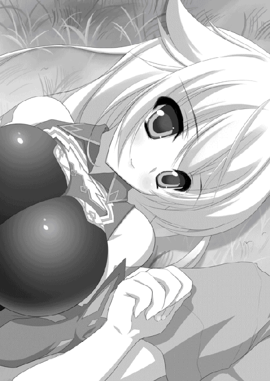
「......実はな」
そっと、秘密の話をするような口調でエレンが打ち明けた。
「レグニーツァに向かっている途中、何度かおまえのことを思いだした」
言葉が途切れる。しかし、ティグルにはわかった。
おまえはどうだった、とエレンは聞いているのだ。
思いださなかったわけではない。だが、彼女に会いたいという思慕だったろうか。
「......そばにいてくれればどれだけ頼もしいかと、何度も思ったよ」
握っていた手の中の、指をひねられた。覚悟していたため、それほど痛みはない。
「おまえの戦いについて考えれば、わからなくもないが......もう少し言葉を選ぶということをしたらどうだ？ 私が心配だったりしなかったのか」
さきほどまでの静けさは消えうせ、エレンは不満そうに目を細める。怒るというよりも拗ねるような口ぶりで、ティグルは素直に謝った。ただ――あるいは甘えかもしれないのだが、彼女に対してはなるべく言葉を飾りたくなかったのだ。
「たぶん、君ならだいじょうぶだと思ったんだ。何者が相手だろうと、戻ってくると言ったからには必ずそうすると」
「もし、私が捕まったりしたらどうするつもりだったんだ」
拗ねる少女に対し、ティグルは自分でも思ってもみないほど即座に答えた。考えてというよりも、その問いかけに対してはこの答えしかないとでもいうかのように。
「わかった時点で、すぐに助けにいく」
虚勢でも見栄でも何でもない、純粋に心からの言葉だった。言った当人が、直後におもわず瞬きするほどの。
「......ん、そうか」
エレンはまじまじとティグルを見つめたあと、空へと視線を戻し、ようやくそれだけを言った。ティグルも同じようにする。
風が二人の間を軽やかに舞っている。自然のものではなく、いたずら好きの竜具のものだ。
「そうだな......。五万の敵を撃退できるおまえだ。そのくらいやってのけるのだろうな」
嬉しそうな顔と声でのエレンのつぶやきは、風のためにティグルには届かなかった。
もうしばらくの間、二人は手をつないだまま夜空を見上げていた。
白銀の髪の少女の顔はやや赤く、そして、とても満足そうだった。
あとがき
はじめまして。前巻を読んでいただいている方は四ヶ月ぶりです。ありがたくも他社で出している作品も読んでくださっている方は一か月ぶりになりますね。
この挨拶もついに四回目となりました。川口士です。あらためて、本書を手に取ってくださり、ありがとうございます。
前の巻のあとがきで言ったとおり、どうにか春にはお届けすることができました。登場人物が増えたり、世界が広がったりと大忙しですが、楽しんでいただければ幸いです。
さて、前巻に引き続き宣伝させていただきますと、月刊コミックフラッパーにて、柳井伸彦さんの手により連載中の漫画版『魔弾の王と戦姫』の単行本がついに発売されます。
原作者として目を通させてもらっていたのですが、よし☆ヲさんのイラストとはまた違う漫画のよさが発揮されていて、これが一冊の本になると思うとやはり感慨深いものがありますね。興味を持たれたら、手に取っていただければと思います。
それでは謝辞を。今回もまた〆切やら何やらでお世話になりましたというか、ご迷惑をおかけしました編集のＩさん、武器や服装が面倒になっていく中、それでも高いクオリティを維持してくださっているよし☆ヲ様、そして、本書がみなさまの手元に届くまでの工程にかかわった関係者の皆様。深くお礼申し上げます。
次巻は夏ごろに出せるのではないかと思います。作中ではようやく冬が終わり、春の気配が漂ってくるぐらいなのですが。敗北からはじまったティグルの物語も、ひとまず一息つけそうです。
それではまたどこかでお会いしましょう。
川口 士
著者
川口士（かわぐち・つかさ）
１９７９年生まれ。２００６年、第１８回富士見ファンタジア長編小説大賞にて『戦鬼』で大賞を受賞。
その後、いろいろなところでいろいろ書く。
あっちで事件が起きたり、こっちで出会いがあったりと慌しい４巻です。ありがたいことにまだまだ続きそうです。ひゃっはー。
お腹がすいたときは、上の写真を見て気を紛らわせることにしています。
イラスト
よし☆ヲ（よし☆を）
☆*。．・* *・．。*☆
とうきょうって てんきがいい日がいっぱいぉ☆
てんきが晴れの日がだいすき！
もっと まいにちおひさまがぃぃぉ（・●）
だってふくいけんにはね
いつも雲ひとつない日
すっきりした ぉそらはあんまりないの。
きらぃじゃないけど どんよりしちゃうぉ
だからね、とうきょうの あおぃきれいな
ぉそらだいすきなの！ たぁぅ
☆*゜゜゜* *゜゜゜* *゜゜゜*☆
よし☆ヲのtwitter
魔弾の王と戦姫４
著者名......川口士
発行者......三坂泰二
発行所......株式会社メディアファクトリー
http://www.mediafactory.co.jp/
２０１２年４月30日 電子書籍版 ver.1.0.1
無断で複製・複写・放送・データ配信などをすることは、かたくお断りいたします。
©2012 Tsukasa Kawaguchi